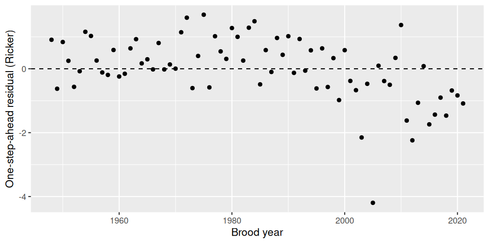
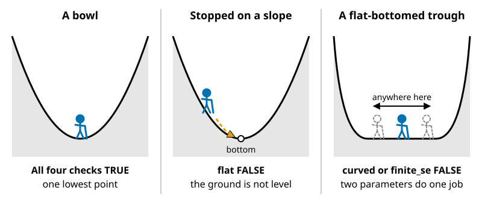
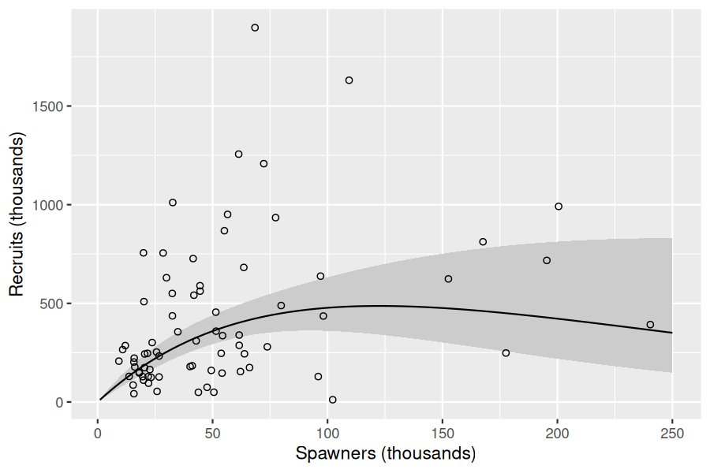
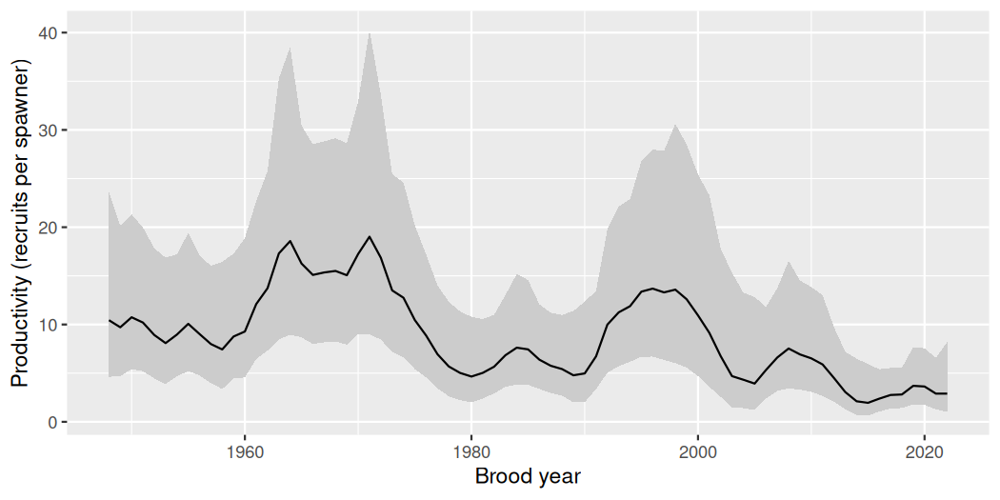
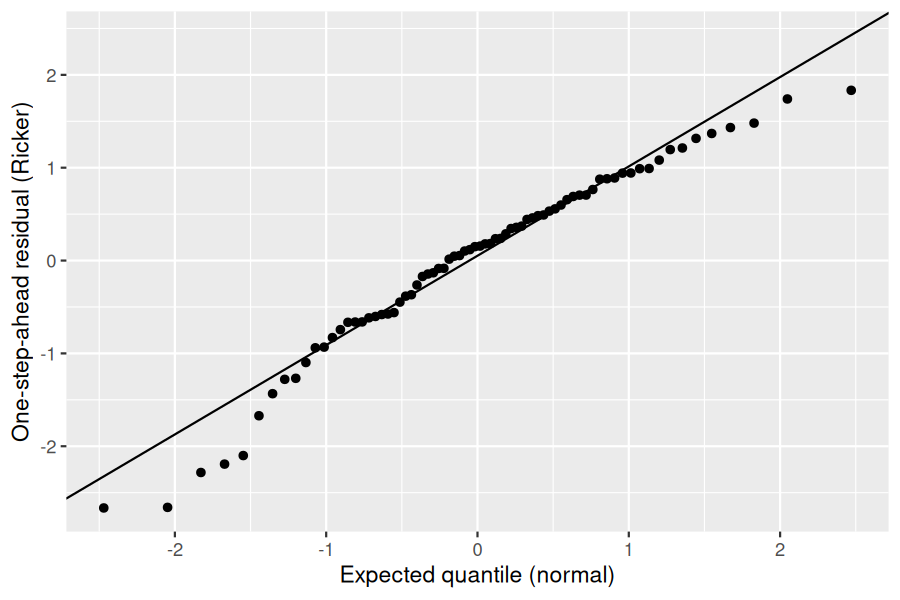
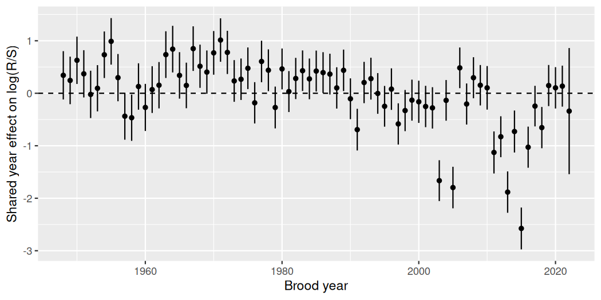
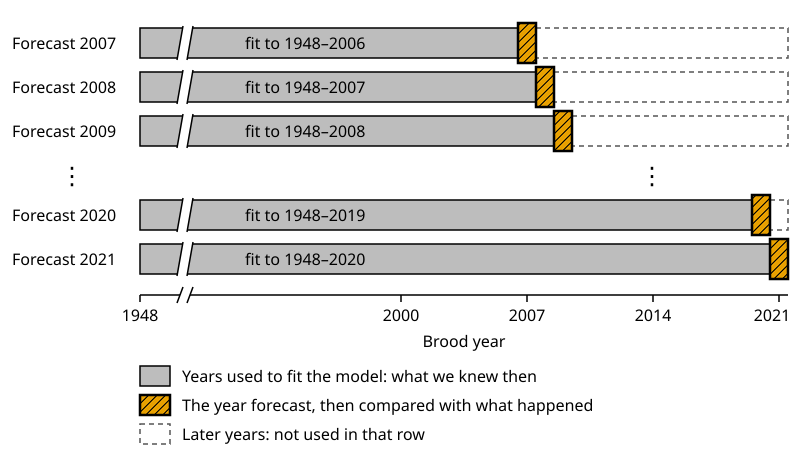

All in One View
Content from Introduction: Salmon, Spawners and Recruits
Last updated on 2026-11-25 | Edit this page
Estimated time: 25 minutes
Overview
Questions
- What questions can a model of spawners and recruits answer?
- What is in the sockeye salmon data, and in what units?
- What will I be able to produce by the end of the workshop?
Objectives
- Describe each column of
sockeye.csv, including its units. - Calculate log recruits per spawner and plot it against brood year for one stock.
- Identify the rows of the model report card and the episode that teaches each.
Why Write Your Own Model?
Formula functions such as lm() and glm()
fit many models, but they cannot write every model you need. You may
need a curve of your own, a quantity that drifts over time, groups that
share information, or a forecast with an honest interval. RTMB lets you write the model as an
ordinary R function. It fits the model fast, gives standard errors and handles random effects: sets of related
unknown values, such as one value for each year.
The question behind this lesson is a general one: how does output per individual depend on density, and is that relationship stable over time? We answer it for salmon, where the output is recruits per spawner and the density is the number of spawners.
Salmon in One Minute

Sockeye salmon hatch in rivers, grow in lakes and then at sea, and come back to their home river to spawn once and die. Five terms describe the data:
- A stock is a group of salmon that spawn in the same place at the same time of year. The data hold 19 stocks from the Fraser River in British Columbia, Canada.
- The brood year is the year in which the parent fish spawned.
- Spawners are the adult fish that spawned in a brood year.
- Recruits are all the adult fish produced by one brood year’s spawners, whether caught in a fishery or returning to spawn. They come back over several calendar years, but each one is counted under its parents’ brood year.
- Recruits per spawner, written R/S, is recruits divided by spawners: how many adults each spawner produced. Above 1, the next generation was larger than its parents; below 1, it was smaller.
The Data
The lesson uses two files. The second one holds an index of ocean conditions, the North Pacific Gyre Oscillation (NPGO), which Episode 9 adds to a model.
| File | Column | Meaning | Units |
|---|---|---|---|
sockeye.csv |
stock |
one of 19 Fraser River sockeye salmon stocks | none |
management_unit |
Early Stuart (1 stock), Early Summer (7), Summer (6), Late (5) | none | |
brood_year |
year the parents spawned, 1948-2022 | year | |
spawners |
adults that spawned in the brood year | thousands of fish | |
recruits |
adult offspring produced by those spawners (caught or returning), all ages | thousands of fish | |
npgo.csv |
year |
calendar year, 1950-2026 | year |
npgo |
NPGO index of ocean conditions; higher values usually mean more food for young salmon | index (mean -0.18, standard deviation 1.05) |
sockeye.csv has one row for each stock and brood year,
with no zeros and no missing values. Not every stock covers the whole
period: eight stocks start after 1948, a few have gaps, and only
Harrison has data for brood year 2022. If you did not download the files
during Setup, save the sockeye salmon data (sockeye.csv) and the ocean index data (npgo.csv) in the
data/ folder of your project.
Units
Spawners and recruits are in thousands of fish. A spawner count of 9.242 means 9242 fish. Write the units every time you report a number: “122 thousand spawners”, not “122”.
Before the first chunk, check that every learner has a project with
data/ and files/ folders and three empty
scripts: my-recipes.R, stellako.R and
upper-pitt-river.R. Show where the code handout is
(files/code-handout.R on the lesson website): it collects
the recipe code of every episode. Keep this episode to 25 minutes and do
not introduce models yet; the Quick Start does that next.
Open your project, then load two packages and read the salmon data:
R
library(dplyr)
OUTPUT
Attaching package: 'dplyr'OUTPUT
The following objects are masked from 'package:stats':
filter, lagOUTPUT
The following objects are masked from 'package:base':
intersect, setdiff, setequal, unionR
library(ggplot2)
sockeye <- read.csv("data/sockeye.csv")
head(sockeye)
OUTPUT
stock management_unit brood_year spawners recruits
1 Birkenhead Late 1948 54.755 191.990
2 Birkenhead Late 1949 43.328 237.158
3 Birkenhead Late 1950 41.370 214.749
4 Birkenhead Late 1951 13.589 173.801
5 Birkenhead Late 1952 24.744 213.941
6 Birkenhead Late 1953 16.287 118.877R
distinct(sockeye, management_unit, stock) %>% count(management_unit)
OUTPUT
management_unit n
1 Early Stuart 1
2 Early Summer 7
3 Late 5
4 Summer 6The messages from library(dplyr) are normal: they say
that dplyr has its own versions of a few functions, such as
filter().
Each row of sockeye is one stock in one brood year. The
first row says that in 1948, about 54.8 thousand Birkenhead sockeye
spawned, and they produced about 192 thousand recruits.
distinct() keeps one row for each stock, and
count() counts the stocks in each management unit, a group of stocks
that return at a similar time and are managed together. Early Stuart has
one stock, Early Summer seven, Late five and Summer six.
Where the Data Come From
The data are spawner and recruit estimates for 19 Fraser River
sockeye salmon stocks, brood years 1948-2022, in thousands of fish, plus
the NPGO index. They were supplied with the Pacific Salmon Commission
RTMB workshop (November 2026), and described there as “not necessarily
official numbers”. The script scripts/prepare-data.R in the
lesson’s repository records every cleaning step.
These stocks matter to First Nations and to commercial and recreational fisheries. The lesson uses them to teach methods; nothing in it is management advice. It follows the CARE principles for Indigenous data governance: collective benefit, authority to control, responsibility and ethics.
Recipe: One Stock and Its Recruits per Spawner
Use it when: you want to work with one stock.
Ingredients: the sockeye data frame and
the name of a stock.
R
my_stock <- sockeye %>%
filter(stock == "Stellako") %>%
mutate(logRS = log(recruits / spawners))
nrow(my_stock)
OUTPUT
[1] 74R
range(my_stock$logRS)
OUTPUT
[1] -2.176904 3.635427filter() keeps the rows of one stock, and
mutate() adds the column logRS: the log of
recruits per spawner, which we write log(R/S). Change the name in quotes
to work with another stock. We call this data frame
my_stock throughout the lesson.
Check it worked: nrow(my_stock) is 74,
and range(my_stock$logRS) runs from -2.18 to 3.64.
Challenge 1: What Does Zero Mean? (3 minutes)
In one brood year, log(R/S) = 0. What happened?
- (a) No recruits were produced.
- (b) Each spawner produced one recruit: the stock exactly replaced itself.
- (c) The value is missing.
- (d) There were 1 thousand recruits.
The answer is (b). log(1) is 0, so log(R/S) = 0 means
R/S = 1: recruits equalled spawners.
-
(a) is wrong: no recruits would give
log(0), which is minus infinity (-Infin R), not 0. - (b) is right: one recruit for each spawner means the next generation was the same size as its parents.
-
(c) is wrong: R marks a missing value with
NA; 0 is an ordinary number. - (d) is wrong: log(R/S) is about the ratio of recruits to spawners, not about the number of recruits.
This question takes 3 minutes; ask for answers by a show of fingers
(one to four for a to d). If most learners choose (a), type
log(0) and log(1) in the console and read both
results aloud. If most choose (d), point out that the ratio has no
units, while recruits are in thousands of fish. If answers are spread
out, go back to the definition of recruits per spawner in “Salmon in One
Minute”.
Why log(R/S)?
We model log(R/S) rather than recruits for three reasons:
- 0 means replacement: each spawner produced exactly one recruit. Above 0 the stock grew; below 0 it shrank.
- A doubling and a halving are equal steps up and down:
log(2)is 0.69 andlog(1/2)is -0.69. - The Ricker model of Episode 3, in which recruits per spawner fall steadily as spawners increase, becomes a straight line.
Two Plots of Stellako
First, recruits against spawners:
R
ggplot(my_stock, aes(x = spawners, y = recruits)) +
geom_point() +
labs(x = "Spawners (thousands)", y = "Recruits (thousands)")

Recruits rise with spawners at first, but more spawners do not give more recruits: the eight years with more than 100 thousand spawners produced no more recruits than years with 40 to 70 thousand. The scatter is wide: years with 40 to 70 thousand spawners produced anywhere from about 50 to about 1900 thousand recruits.
Second, log(R/S) against brood year:
R
ggplot(my_stock, aes(x = brood_year, y = logRS)) +
geom_hline(yintercept = 0, linetype = "dashed") +
geom_line(colour = "grey60") +
geom_point() +
labs(x = "Brood year", y = "log(recruits per spawner)")

The dashed line at zero marks replacement. Until about 1990, log(R/S) was mostly between 1.5 and 3.5; since 2000 it has been mostly between 0 and 2. Brood year 2005 is the one year far below zero: 102 thousand spawners produced only 11.6 thousand recruits. It is a real value, not an error: most of those fish returned in 2009, one of the poorest Fraser sockeye returns on record.
Put up a green sticky note when both plots appear.
How large is the change? Average log(R/S) over three periods, and
turn each average back into recruits per spawner with
exp():
R
my_stock %>%
mutate(period = case_when(brood_year < 1990 ~ "1948-1989",
brood_year < 2000 ~ "1990-1999",
TRUE ~ "2000-2021")) %>%
group_by(period) %>%
summarise(years = n(), mean_logRS = mean(logRS),
recruits_per_spawner = exp(mean(logRS)))
OUTPUT
# A tibble: 3 × 4
period years mean_logRS recruits_per_spawner
<chr> <int> <dbl> <dbl>
1 1948-1989 42 2.43 11.3
2 1990-1999 10 1.94 6.94
3 2000-2021 22 0.997 2.71case_when() gives each brood year a period label, and
summarise() makes one row for each period. log(R/S)
averaged 2.43 before 1990 (11.3 recruits per spawner), 1.94 in the 1990s
(6.9) and 1.00 since 2000 (2.7). Each spawner now produces about a
quarter as many recruits as before 1990. So a model of these data must
answer two questions: how do recruits depend on spawners, and has that
relationship changed?
Where We Are Going
Every model in this lesson goes through the same nine steps.

You will go through the workflow three times:
- Stellako, demonstrated by the instructor: the Quick Start (next episode) runs all nine steps in an hour, and each later episode opens one step as recipes.
- Upper Pitt River, your turn: at the end of each episode, a challenge asks you to repeat the step for this stock and to fill one row of your report card.
- A stock you choose, or your own data, in the capstone (Episode 12): you fill the whole report card on your own.
The report card is the goal of the workshop. Here it is for Stellako, completed: this is what you will be able to produce. Most terms in it are new; the episode named in each row explains them, and the glossary defines them all.
| Row | Item: the question it answers | Episode | Stellako (worked example) |
|---|---|---|---|
| 1 | Data: which years, how many spawners? | 01, 03 | 1948-2021, 74 years, spawners 9.2-240 thousand;
spawners for the forecast (S_new) 50 thousand (the average
of the last four years is 51.7) |
| 2 | Fits usable: can I use each fit? | 04 | all four models pass all four checks |
| 3 | Estimates: what are the parameters, and how sure am I? | 05 | alpha 10.8 recruits per spawner (95% confidence interval 7.9-14.7); S_max 122 thousand spawners (73-207) |
| 4 | Random effect: how did productivity change over time? | 06 | sd_walk 0.13 (0.065-0.25): a typical yearly change of about 13%; productivity 12.5 (1948), 15.6 (1980) and 3.8 (2021) recruits per spawner |
| 5 | Residuals: does the model miss a pattern? | 07 | Ricker: neighbouring years alike (lag-1 correlation 0.25, above the limit of 0.23), residuals average +0.43 before 1990 and -0.95 after 2000; random walk: lag-1 correlation -0.10; one outlier year (2005) in both |
| 6 | Simulation: can the model make data like mine? | 08 | simulated data as alike from year to year as the real data: Ricker 0 of 200, random walk 12%; self-test: 50 of 50 refits pass, sd_walk falls to zero in 11 of 50 |
| 7 | Comparison: which model do the data support? | 09 | random walk best: its Akaike information criterion (AIC) is 18.2 lower than Beverton-Holt’s, 19.9 lower than the Ricker’s and 20.7 lower than Ricker + NPGO’s |
| 8 | Forecast skill: how good were its forecasts in past years? | 11 | forecasts of 2007-2021: random walk skill 0.79, bias -0.01, 80% coverage 0.73; Ricker 1.22, +0.83, 0.60 |
| 9 | Forecast: how many recruits next year? | 11 | median 148 thousand recruits (80% prediction interval 55-397) from 50 thousand spawners |
| 10 | Conclusion: which model, why, and the main caveat | 12 | “Productivity has fallen from about 15 recruits per spawner around 1980 to about 4 since 2010. The random-walk model captures this: it passes the residual checks, is strongly preferred by AIC and forecasts better than the recent average. Its 80% intervals caught only 73% of past outcomes, so the forecast is less certain than its interval suggests.” |
| 11 | Stretch: a new model that combines two ideas | 12 | Beverton-Holt with random walk: AIC 177.7 (best by 0.6, a tie), skill 0.76 |
In the capstone, the same table becomes a checklist that says when each row is done.
Open upper-pitt-river.R in your project now (create an
empty R script with that name if you do not have one). It is your own
analysis script: in each episode, a “Your Turn” challenge adds the code
for one step and a comment line that records the report-card row it
produces, starting with Challenge 2. By Episode 11 it runs Upper Pitt
River from the data to a tested forecast, and the capstone asks you to
do the same for a new stock.
Challenge 2: Your Turn: Upper Pitt River, Row 1 (7 minutes)
Make the log(R/S) against brood year plot for Upper Pitt River. Call
its data frame pitt, so that my_stock stays
Stellako. Describe in one sentence how log(R/S) changed after 2000.
Then start your report card. In upper-pitt-river.R, keep
the code you ran, then write row 1 under it as a comment line (starting
with #): the first and last brood year, the number of
years, and the range of spawners with units.
Copy the recipe and the second plot, then change
"Stellako" to "Upper Pitt River" and
my_stock to pitt. range() and
nrow() give the numbers for row 1.
R
pitt <- sockeye %>%
filter(stock == "Upper Pitt River") %>%
mutate(logRS = log(recruits / spawners))
ggplot(pitt, aes(x = brood_year, y = logRS)) +
geom_hline(yintercept = 0, linetype = "dashed") +
geom_line(colour = "grey60") +
geom_point() +
labs(x = "Brood year", y = "log(recruits per spawner)")

R
range(pitt$brood_year)
OUTPUT
[1] 1948 2021R
nrow(pitt)
OUTPUT
[1] 74R
range(pitt$spawners)
OUTPUT
[1] 2.066 74.627To put numbers on the change, reuse the period averages and count the years below zero:
R
pitt %>%
mutate(period = case_when(brood_year < 1990 ~ "1948-1989",
brood_year < 2000 ~ "1990-1999",
TRUE ~ "2000-2021")) %>%
group_by(period) %>%
summarise(years = n(), mean_logRS = mean(logRS),
recruits_per_spawner = exp(mean(logRS)),
below_zero = sum(logRS < 0))
OUTPUT
# A tibble: 3 × 5
period years mean_logRS recruits_per_spawner below_zero
<chr> <int> <dbl> <dbl> <int>
1 1948-1989 42 1.85 6.36 0
2 1990-1999 10 1.84 6.29 0
3 2000-2021 22 0.515 1.67 9After 2000, log(R/S) fell: it averaged about 1.85 (6.3 recruits per spawner) before 2000 and 0.52 (1.7) since, and nine of the 22 years since 2000 are below zero, meaning fewer recruits than spawners.
Row 1: “Upper Pitt River, brood years 1948-2021, 74 years, spawners
2.1 to 74.6 thousand.” In upper-pitt-river.R, below the
code above, it reads
# Row 1 (data): Upper Pitt River, brood years 1948-2021, 74 years, spawners 2.1 to 74.6 thousand.
Episode 3 adds the spawner count for the forecast to this row.
This challenge takes 7 minutes. Watch for learners who overwrite
my_stock with Upper Pitt River: the next episode starts
from Stellako, so ask them to use the name pitt. Ask for
green sticky notes when the plot appears and row 1 is written.
Add to Your Recipe Box
Nothing to add yet. Your recipe box, my-recipes.R, holds
the functions you write, and the first ones arrive in Episode 3. The finished box is cookbook.R.
In Your Field
Any count that produces next year’s count works the same way: seedlings per adult plant, calves per cow, cases per infected person. The questions stay the same: how does output per individual depend on density, and has that changed?
Key Points
- Spawners and recruits are in thousands of fish; log(R/S) is the log of recruits per spawner, and 0 means each spawner exactly replaced itself.
- The lesson builds models that answer two questions: how recruits depend on spawners, and whether that relationship has changed.
- By the end you will complete a model report card for a stock you have not seen in class.
Content from Quick Start: The Whole Workflow in Nine Steps
Last updated on 2026-11-25 | Edit this page
Estimated time: 60 minutes
Overview
Questions
- What are the steps from data to a checked model and its forecast?
- What does each step produce, and what should I look for in it?
Objectives
- Run the nine-step workflow on one stock, from data to forecast.
- Match a question about a model to the step that answers it.
- Interpret the main output of the check, estimate, residual, comparison and forecast steps in one sentence each.
Nine Steps from Data to Forecast
This episode runs the whole workflow once, on one stock, Stellako,
from the data to a forecast for the next brood year. The nine steps are
called QS1 to QS9 (Quick Start steps 1 to 9). The story has five parts:
we fit a model, find a problem with it, fix the problem, confirm the
fix, and use the better model to forecast. Each step is one or two short
chunks of code, and the text after them says what to look for in the
output. Together, the steps give a first, rough version of rows 1 to 5,
7 and 9 of the model report card from the
Introduction: data, fits usable, estimates, random effect,
residuals, comparison and forecast. Later episodes add the other four
rows: simulation, forecast skill, conclusion and stretch. Type each
chunk into a new script in your project folder, for example
my-quick-start.R, and run it as you go.
A Tour, Not a Test
Not every line will make sense yet. That is expected. Each later episode opens one or two of these steps and explains them slowly. The whole script is in the Quick Start script (quick-start.R) if you fall behind. If a step gives an error, compare your lines with that script, or find the message on the Troubleshooting page.
Type steps 1 to 5 live, saying each line aloud; for steps 6 to 9,
keep typing but explain only what to look for in the output, because
later episodes explain every line. This is the only episode where
learners who fall behind may paste from
files/quick-start.R. Keep to 60 minutes: aim for four TRUE
at QS4 by about minute 20, Challenge 2 done by minute 35, and both AIC
values at QS8 by minute 45. If you are behind at QS7, type it while
learners paste it from files/quick-start.R, explain only
what to look for, and take Challenge 5 orally in one minute. Write deep
questions on a “parking lot” list, labelled with the episode that
answers them (the table at the end of this episode).
QS1: Get the Data Ready
Step 1 reads the data, keeps one stock and puts what the model needs
into a named list, the data list.
It needs data/sockeye.csv in your project (see Setup).
R
library(RTMB)
library(dplyr)
library(ggplot2)
sockeye <- read.csv("data/sockeye.csv")
my_stock <- filter(sockeye, stock == "Stellako")
dat <- list(
S = my_stock$spawners, # spawners
logRS = log(my_stock$recruits / my_stock$spawners), # log(recruits per spawner)
year = my_stock$brood_year - min(my_stock$brood_year) + 1, # 1, 2, 3, ...
S_new = 50 # spawners for the forecast
)
If read.csv() says it cannot open the file, R is not
running in your project folder: open your project and run the chunk
again (Setup explains how). Loading dplyr may
print a message that some functions are masked; that is normal (the Introduction explains it).
The data list dat has four parts:
-
S, the spawners in each brood year (in thousands of fish), which the model uses as inputs; -
logRS, the log of recruits per spawner, which are the observations the model describes; -
year, a year index: 1 for the first brood year, 2 for the next, and so on; -
S_new, the number of spawners (in thousands) to forecast for.
S, logRS and year each have 74
values, one per brood year. S_new = 50 is about the average
spawner count of the last four brood years:
mean(tail(my_stock$spawners, 4)) gives 51.7 thousand.
Before QS2, check that everyone has dat:
length(dat$S) is 74. The most common problem here is a
wrong working directory, which stops read.csv(): help the
learner open the project, then rerun the chunk.
QS2: Write the Model
Step 2 writes the model as an R function. The function takes the parameters and the data, and returns the negative log-likelihood: a score of how surprising the data are for those parameter values.
The model is the Ricker model. In words: the expected log(R/S) is log(alpha) minus S over S_max. Here alpha is productivity, the recruits per spawner when spawners are few, and S_max is the spawner count that produces the most recruits. Single years scatter around this expected value with standard deviation (SD) sigma.
R
nll_ricker <- function(par, dat) {
getAll(par, dat)
logRS <- OBS(logRS) # these are the observations
mu <- log_alpha - S / exp(log_Smax) # expected log(R/S)
mu_new <- log_alpha - S_new / exp(log_Smax) # ... for the forecast
ADREPORT(mu_new)
-sum(dnorm(logRS, mu, exp(log_sigma), log = TRUE)) # negative log-likelihood
}
par_ricker <- list(log_alpha = mean(dat$logRS), # starting values from the data
log_Smax = log(mean(dat$S)),
log_sigma = log(sd(dat$logRS)))
Nothing is printed: the chunk only defines the function and its
starting values, and step 3 uses them. Inside the function,
mu is the expected log(R/S) in each year, and the last line
adds up how surprising each year is, which gives the negative
log-likelihood. mu_new is the expected log(R/S) for
S_new spawners, and ADREPORT() asks RTMB for its standard error; step 9 uses both for
the forecast. par_ricker holds the starting values, where the search for
the best values begins: typical values taken from the data. Names that
start with log_ are parameters estimated on the log scale,
which keeps alpha, S_max and sigma positive (Episode 3 explains why).
getAll() lets you write log_alpha instead
of par$log_alpha. OBS() marks the
observations, so RTMB can compute residuals (QS6) and simulate new data
(Episode 8).
QS3: Fit the Model
Step 3 fits the model with three calls. MakeADFun()
builds an object, obj, from the function and the starting
values. obj$par holds the starting values,
obj$fn computes the negative log-likelihood, and
obj$gr computes its slope. nlminb(), the optimiser, starts from
obj$par and uses obj$fn and
obj$gr to search for the parameter values with the smallest
negative log-likelihood. sdreport() computes a standard
error for each estimate.
R
obj <- MakeADFun(function(p) nll_ricker(p, dat), par_ricker, silent = TRUE) # build
opt <- nlminb(obj$par, obj$fn, obj$gr) # fit
sdr <- sdreport(obj) # standard errors
Nothing is printed here either. The best values are stored in
opt, and the standard errors in sdr.
MakeADFun() needs a function of the parameters only, and
function(p) nll_ricker(p, dat) makes one. Each time RTMB
runs it, it calls nll_ricker() with whatever
dat holds at that moment, so do not change dat
after fitting (Episode 4 shows
why).
Challenge 1: Predict the Score (2 minutes)
obj$fn() returns the negative log-likelihood for any
parameter values. At the starting values, obj$par, it
is:
R
obj$fn(obj$par)
OUTPUT
[1] 144.8327Will opt$objective, the value after fitting, be larger,
smaller or the same? Write down your prediction, then run
opt$objective.
R
opt$objective
OUTPUT
[1] 96.12848It is smaller: 96.1 against 144.8. Fitting looks for the parameter values that make the data least surprising, and a smaller negative log-likelihood means less surprise. Episode 3 explains the score.
QS4: Check the Fit
Step 4 asks whether the fit can be used. Picture the negative log-likelihood as a valley, and the optimiser as a hiker walking downhill in fog, using the slope to choose each step. The four checks test where the hiker stopped:
-
finished: the optimiser stopped normally; -
flat: the ground is level where it stopped; -
curved: the ground curves up in every direction, like the bottom of a bowl; -
finite_se: every standard error is a number.
R
check_fit <- function(opt, sdr) {
c(finished = opt$convergence == 0, # the optimiser stopped normally
flat = max(abs(sdr$gradient.fixed)) < 0.001, # the ground is level
curved = sdr$pdHess, # the bottom is a bowl
finite_se = all(is.finite(summary(sdr, "fixed")[, "Std. Error"]))) # every SE is a number
}
check_fit(opt, sdr)
OUTPUT
finished flat curved finite_se
TRUE TRUE TRUE TRUE Four TRUE mean the fit can be used. When check_fit()
shows four TRUE, put up a green sticky note.
Convergence Code 0 Is Not Enough
finished reads the optimiser’s own report,
opt$convergence: 0 means it stopped normally. That report
can be 0 for a fit that is useless, so use all four checks (Episode 4).
Ask for sticky notes here: green when
check_fit(opt, sdr) shows four TRUE, the other colour for
any error. The most common problem at this point is a typing error in
nll_ricker: compare it with
files/quick-start.R.
QS5: Estimates with Uncertainty
Step 5 reports the estimates with their uncertainty.
R
est <- summary(sdr, "fixed")
est
OUTPUT
Estimate Std. Error
log_alpha 2.3797073 0.15733923
log_Smax 4.8081068 0.26753555
log_sigma -0.1199054 0.08219944R
exp(est["log_Smax", "Estimate"] + c(-1.96, 0, 1.96) * est["log_Smax", "Std. Error"])
OUTPUT
[1] 72.51092 122.49948 206.94985The table gives each estimate and its standard error on the log
scale, the scale the model uses. The last line turns
log_Smax into a 95% confidence interval on the natural
scale (thousands of spawners): it adds and subtracts 1.96 standard
errors on the log scale, then uses exp(). Its three numbers
are the lower limit, the estimate and the upper limit. S_max, the
spawner count that produces the most recruits, is 122 thousand spawners
(95% confidence interval 73 to 207 thousand). The same line with
log_alpha in place of log_Smax gives
productivity: 10.8 recruits per spawner when spawners are few (95%
confidence interval 7.9 to 14.7).
QS6: Check the Model with Residuals
Step 6 checks the model against the data. A one-step-ahead residual is how far each year’s log(R/S) is from what the model expected, given all the years before it, measured in standard deviations. Above zero means the stock produced more recruits than the model expected for that year; below zero means fewer. If the model describes the data, the residuals scatter around zero, mostly between -2 and 2, with no pattern over time.
R
my_stock$res_ricker <- oneStepPredict(obj, method = "fullGaussian", trace = FALSE)$residual
ggplot(my_stock, aes(x = brood_year, y = res_ricker)) +
geom_hline(yintercept = 0, linetype = "dashed") +
geom_point() +
labs(x = "Brood year", y = "One-step-ahead residual (Ricker)")

The residuals are mostly above zero before 1990 (they average +0.43) and mostly below zero after 2000 (average -0.95). One year, 2005, stands out far below the others, at -4.2.
These lines compute the averages, the lowest residual and its brood
year. which.min() gives the position of the smallest
value.
R
mean(my_stock$res_ricker[my_stock$brood_year < 1990]) # average before 1990
OUTPUT
[1] 0.4335237R
mean(my_stock$res_ricker[my_stock$brood_year > 2000]) # average after 2000
OUTPUT
[1] -0.9494193R
min(my_stock$res_ricker) # the lowest residual
OUTPUT
[1] -4.196076R
my_stock$brood_year[which.min(my_stock$res_ricker)] # ... and its brood year
OUTPUT
[1] 2005R
lag1 <- function(r) cor(head(r, -1), tail(r, -1)) # are neighbouring years alike?
lag1(my_stock$res_ricker)
OUTPUT
[1] 0.2503649The lag-1 correlation is the
correlation between each year’s residual and the next year’s:
head(r, -1) drops the last value and
tail(r, -1) the first, so cor() pairs each
year with the next. Near zero means the residuals have no memory from
one year to the next. With 74 years, chance alone usually keeps it
between about -0.23 and +0.23 (2/sqrt(74); Episode 7 explains this limit). Here it is
0.25, a little above that limit: neighbouring years tend to be alike, so
good years often follow good years and bad years follow bad years.
Challenge 2: Read the Residuals (3 minutes)
Most residuals are above zero before 1990 and below zero after 2000. What is the most likely reason?
- (a) The fit failed.
- (b) Productivity changed over time, and the model assumes it is constant.
- (c) One outlier year, 2005, pulls every residual down.
- (d) The yearly scatter, sigma, is too small.
The answer is (b). The plot and the lag-1 correlation say that the model misses something that changes over time. The Ricker model has one productivity for all 74 years, so when productivity falls, the early years sit above the curve and the late years below it.
- (a) All four checks were TRUE, so the fit worked. It is the model that misses the pattern.
- (b) Right: the model assumes productivity is constant, and the residuals show that it was not.
- (c) One very low year cannot shift decades of residuals, and the residuals before 1990 are above zero, not below. A very low year in fact pulls the curve down a little, which raises the other years’ residuals.
- (d) Sigma scales all residuals equally, so it cannot create a pattern over time.
If many learners choose (a), they think a pattern in the residuals means the fit failed: point back to the four TRUE in QS4, and say that the checks test the fit, while residuals test the model. If many choose (c), show the plot again and count the years above zero before 1990. If answers are spread out, go back to what a residual is: how far each year is from what the model expected, given the years before it.
Residuals are one way to check a model. Episode 8 adds a second: simulate many data sets from the fitted model and compare them with the real data.
QS7: Let Productivity Drift
Step 7 fixes the problem with a random effect: a set of related unknown values that come from a distribution, here one productivity for each year. Each year’s log productivity is last year’s plus a small random step, which makes a random walk. The model estimates the size of the steps, sd_walk.
R
nll_walk <- function(par, dat) {
getAll(par, dat)
logRS <- OBS(logRS)
sd_walk <- exp(log_sd_walk)
nll <- -dnorm(log_alpha_year[1], log_alpha, sd_walk, log = TRUE) # first year
nll <- nll - sum(dnorm(diff(log_alpha_year), 0, sd_walk, log = TRUE)) # yearly steps
mu <- log_alpha_year[year] - S / exp(log_Smax)
mu_new <- log_alpha_year[max(year) + 1] - S_new / exp(log_Smax) # next year
ADREPORT(mu_new)
nll - sum(dnorm(logRS, mu, exp(log_sigma), log = TRUE))
}
Compared with nll_ricker, the new lines say that the
first year’s productivity starts near log_alpha, and that
the steps between years, diff(log_alpha_year), are small,
with SD sd_walk. log_alpha_year[year] picks
each brood year’s productivity, and
log_alpha_year[max(year) + 1] is the year after the data,
for the forecast.
We fit it with the same three calls, adding
random = "log_alpha_year". This tells RTMB to average over
every possible path of productivity, and to estimate only the four fixed parameters:
log_alpha, log_Smax, log_sigma
and log_sd_walk.
R
par_walk <- c(par_ricker,
list(log_sd_walk = log(0.1), # small steps
log_alpha_year = rep(mean(dat$logRS), max(dat$year) + 1)))
obj_walk <- MakeADFun(function(p) nll_walk(p, dat), par_walk,
random = "log_alpha_year", silent = TRUE)
opt_walk <- nlminb(obj_walk$par, obj_walk$fn, obj_walk$gr)
sdr_walk <- sdreport(obj_walk)
check_fit(opt_walk, sdr_walk)
OUTPUT
finished flat curved finite_se
TRUE TRUE TRUE TRUE R
my_stock$res_walk <- oneStepPredict(obj_walk, method = "fullGaussian", trace = FALSE)$residual
lag1(my_stock$res_walk)
OUTPUT
[1] -0.100152par_walk adds two kinds of starting values: sd_walk at
0.1 (small steps), and 75 yearly productivities, one for each of the 74
brood years plus one for next year. The model that lets productivity
drift passes all four checks. The lag-1 correlation of its residuals is
-0.10, against 0.25 for the Ricker: well inside the limits of ±0.23, so
neighbouring years are no longer alike. The size of the yearly steps,
sd_walk, is estimated at 0.13
(exp(opt_walk$par[["log_sd_walk"]]) prints it):
productivity typically changes by about 13% from one year to the next
(Episode 6 explains how to read
it).
QS8: Compare the Two Models
Step 8 compares the two models with the Akaike information criterion (AIC): twice the negative log-likelihood plus twice the number of fixed parameters. The first part rewards a model that makes the data less surprising, and the second is a penalty for each parameter. Lower AIC means more support from the data. AIC can only compare models fitted to the same data, as here: the same 74 values of log(R/S) (Episode 9).
Challenge 3: Predict the Winner (2 minutes)
The random walk has one more fixed parameter, which adds 2 to its AIC. But its residuals suggest that it describes the drift that the Ricker misses (lag-1 correlation -0.10 against 0.25). Which model do you expect to have the lower AIC? Write down your prediction, then run the next chunk.
The random walk: its AIC is 178.3 against 198.3 for the Ricker, a difference of 20. Describing the drift makes the data much less surprising, which outweighs the penalty of 2 for the extra parameter. Episode 9 gives the rules for reading AIC differences.
R
aic <- function(opt) 2 * opt$objective + 2 * length(opt$par)
c(ricker = aic(opt), walk = aic(opt_walk))
OUTPUT
ricker walk
198.2570 178.3082 The random walk’s AIC is 20 lower. Lower is better, and 20 is a large difference. When you have both AIC values, put up a green sticky note.
Ask for sticky notes when learners have the two AIC values. Misconception to listen for: “the model with more parameters always wins”. The penalty counts only the fixed parameters (three for the Ricker, four for the random walk), and Episode 9 shows a model with one more parameter that loses.
QS9: Forecast Next Year
Step 9 uses the random walk to forecast the recruits that
S_new = 50 thousand spawners would produce in the next
brood year, 2022. The model reports mu_new, the expected
log(R/S) for that year, with its standard error. Adding the yearly
scatter, sigma, gives an 80% prediction interval: a range that
should hold the actual recruits in about 8 years out of 10, if the model
is right.
R
p <- summary(sdr_walk, "report")["mu_new", ]
sd_pred <- sqrt(p[["Std. Error"]]^2 + exp(opt_walk$par[["log_sigma"]])^2) # curve + yearly noise
dat$S_new * exp(p[["Estimate"]] + qnorm(c(0.1, 0.5, 0.9)) * sd_pred)
OUTPUT
[1] 55.27905 148.08070 396.67636In the last line, qnorm(c(0.1, 0.5, 0.9)) picks the 10%,
50% and 90% points of a normal distribution, exp() turns
log(R/S) into recruits per spawner, and multiplying by
S_new turns recruits per spawner into recruits. The three
numbers are the lower limit, the median and the upper limit, in
thousands of recruits. From 50 thousand spawners, the random walk
forecasts a median of 148 thousand recruits, with an 80% prediction
interval of 55 to 397 thousand. Can this forecast be trusted? Episode 11 replays the past: it refits
each model to the years before each year from 2007 on, forecasts that
year, and compares the errors with those of a plain forecasting rule,
the benchmark.
A Median, Not a Mean
exp() of a log-scale forecast is the median: half of the
outcomes are expected below it (Episode
11).
Challenge 4: Which Forecast Would You Trust? (3 minutes)
Copy the three lines of QS9 and paste the copy below them. In the
copy, change sdr_walk to sdr and
opt_walk to opt, so that it forecasts with the
Ricker. Also rename p to p_ricker and
sd_pred to sd_ricker in the copy, so that
p and sd_pred keep the random walk’s forecast.
Run the copy. How different is the forecast? Which would you trust, and
why? Write your answer down: Episode
11 tests it.
With new names, p and sd_pred still hold
the random walk’s forecast.
R
p_ricker <- summary(sdr, "report")["mu_new", ]
sd_ricker <- sqrt(p_ricker[["Std. Error"]]^2 + exp(opt$par[["log_sigma"]])^2)
dat$S_new * exp(p_ricker[["Estimate"]] + qnorm(c(0.1, 0.5, 0.9)) * sd_ricker)
OUTPUT
[1] 114.3315 359.0872 1127.8054The Ricker forecasts 2.4 times as many recruits: a median of 359 thousand (80% prediction interval 114 to 1128 thousand), against 148 thousand for the random walk. The Ricker assumes that productivity is still its 74-year average, whereas the random walk uses the recent, lower productivity. The residuals (QS6) and AIC (QS8) favour the random walk. Neither forecast has been tested yet: Episode 11 tests both on years the models were not fitted to.
Ask two or three pairs which forecast they would trust. Listen for “the random walk, because recent productivity is lower” and “the Ricker, because it uses all 74 years”. Say that Episode 11 settles it, and put the question on the parking lot.
Where Each Step Is Explained
Each step answers one question about a model, and every later episode opens one or two of the nine steps and turns them into recipes you can reuse. Before you read the table of steps and episodes, test yourself with Challenge 5.
Challenge 5: Which Step Answers Which Question? (3 minutes)
Match each situation to the step (QS1 to QS9) that deals with it.
- Your fit gives standard errors of
NaN. Which step should have warned you? - A report needs a range of plausible values for S_max.
- A reviewer asks whether the model missed a change in productivity over the years.
- A colleague wants to add an ocean index to the model. Which step tells you whether the data support the bigger model?
- Your manager asks how many recruits 50 thousand spawners will produce.
- QS4:
finite_se, one of the four checks, is FALSE when a standard error isNaN, so the fit cannot be used yet. - QS5: the standard error from
sdreport()gives a 95% confidence interval for S_max. - QS6: one-step-ahead residuals show patterns over time and memory from year to year; QS7 is one way to fix such a pattern.
- QS8: AIC compares models fitted to the same data, with a penalty for each extra parameter.
- QS9: the forecast gives a median and an 80% prediction interval for the recruits.
| Step | Question it answers | Episode |
|---|---|---|
| QS1 | What goes into the model? | 03 Writing a Model as a Likelihood |
| QS2 | How do I write my model? | 03 Writing a Model as a Likelihood |
| QS3 | How do I fit it? | 04 Fitting a Model and Checking the Fit |
| QS4 | Can I use the fit? | 04 Fitting a Model and Checking the Fit |
| QS5 | How sure am I? | 05 Estimates, Intervals and Derived Quantities |
| QS6 | Does the model miss a pattern? | 07 Checking a Model with Residuals; 08 Checking a Model with Simulation |
| QS7 | How do I let a quantity vary? | 06 Random Effects: Productivity That Changes over Time; 10 Many Stocks: Random Effects for Groups (optional) |
| QS8 | Which model do the data support? | 09 Comparing Models with AIC |
| QS9 | What happens next year, and can I trust it? | 11 Forecasting and Testing Forecasts |
Challenge 6: Your Turn: Change One Word (7 minutes)
In QS1, replace "Stellako" with
"Upper Pitt River" and run every step again.
- Do all checks pass?
- Does the random walk again lower AIC and bring the lag-1 correlation closer to zero?
- Write one sentence that reports S_max for Upper Pitt River with its 95% confidence interval and units (QS5).
- Compare 50 thousand spawners with the average of the stock’s last
four brood years,
mean(tail(my_stock$spawners, 4)), as in QS1. Is the forecast for 50 thousand spawners sensible for this stock?
Run the whole script again from the top: select all of it and run it
(Ctrl+A, then Ctrl+Enter; use Cmd instead of Ctrl on a Mac), or run
source("my-quick-start.R", echo = TRUE) with your script’s
name. Plain source() runs the code but prints nothing and
draws no plot. This replaces the Stellako objects in your R session, so
change the name back to "Stellako" and run the script again
when you are done.
The only change is in QS1:
R
my_stock <- filter(sockeye, stock == "Upper Pitt River")
Running every step with this change gives these results (they are not run on this page, because that would replace the Stellako objects):
- all eight checks are TRUE (four for each model);
- AIC is 197.5 for the Ricker and 185.6 for the random walk, so the random walk is lower by 11.8;
- the lag-1 correlation of the residuals falls from 0.47 for the Ricker, far above the limit of 0.23, to 0.13 for the random walk, inside it;
- S_max is 20 thousand spawners (95% confidence interval 15 to 28 thousand);
- the random walk’s forecast is a median of 19.7 thousand recruits (80% prediction interval 6.3 to 61.6 thousand).
The workflow runs unchanged, and the random walk again fixes the
residual pattern and lowers AIC. But the forecast is for 50 thousand
spawners, and the last four brood years of Upper Pitt River had only 2.1
to 8.8 thousand spawners (average 5.3 thousand), although the whole
series ranges from 2.1 to 74.6 thousand. Fifty thousand spawners is not
a realistic scenario for this stock. From Episode 3 on, S_new is set
from the average spawner count of the stock’s last four brood years
(rounded to 50 for Stellako, 5.3 for Upper Pitt River). Nothing from
this challenge goes into upper-pitt-river.R: later episodes
fill the rows for Upper Pitt River one at a time, with
S_new set for this stock.
Ask for a green sticky note when learners have the four answers.
Watch for learners whose QS9 now uses sdr and
opt because they edited it in place in Challenge 4: their
forecast is the Ricker’s (a median of 37.1 thousand recruits), not the
random walk’s. Watch also for anyone who ran plain source()
and got no output. Before the break, ask everyone to switch back to
Stellako and rerun the script (Episode 3’s Starting Point chunk also
recreates the Stellako data).
Add to Your Recipe Box
Copy the three helper functions you typed, check_fit(),
lag1() and aic(), into your
my-recipes.R: later episodes use all three. The two models
join the box as recipes in Episode 3
and Episode 6. The finished box is
cookbook.R.
In Your Field
The nine steps do not depend on salmon. For your own data, write a
new data list, a model function that computes mu and
mu_new from your own parameters, and starting values for
those parameters. The fitting calls, the four checks, the residuals and
AIC then work unchanged; in the estimates and the forecast, use your own
parameter names and turn mu_new back into your own
units.
Key Points
- Every model in this lesson is fitted and used with the same nine steps.
- You write the model as a negative log-likelihood function;
MakeADFun(),nlminb()andsdreport()fit it; four checks tell you whether the fit can be used. - Each step answers one question and has one thing to look for: four TRUE (can I use the fit?), a 95% confidence interval (how sure am I?), residuals with no pattern over time (does the model miss something?), the lower AIC (which model do the data support?), and a median with an 80% prediction interval (what happens next year?).
- A residual check can show what a model misses, a random effect can fix it, and AIC and forecasts show whether the fix matters.
Content from Writing a Model as a Likelihood
Last updated on 2026-11-25 | Edit this page
Estimated time: 55 minutes
Overview
Questions
- What is a likelihood, and why do we make its negative as small as possible?
- How do I turn a model written in words into an R function?
- How do I choose starting values?
Objectives
- Write a negative log-likelihood function for a model given in words and one equation.
- Make a data list and starting values for any stock with
make_dat()andstart_ricker(). - Compare guesses of the parameters by their negative log-likelihood.
Starting Point
This episode opens steps 1 and 2 of the Quick Start: the data list and the model.
From here on, keep two scripts of your own beside
my-recipes.R. Type the Stellako code into
stellako.R and add each recipe’s lines to it as you go, so
that the script grows with the lesson. Put your “Your Turn” work into
upper-pitt-river.R, which you opened in the Introduction.
The functions you write go into my-recipes.R, and the
Starting Point chunk below is only for anyone who starts here or
restarts R.
Run This Only If You Are Starting Here
If you have followed along in stellako.R, you already
have these objects: skip this chunk. If you are starting here or have
restarted R, run this chunk first. It needs
data/sockeye.csv in your project (see Setup). This episode writes the first recipes of
your recipe box, so it does not load files/cookbook.R.
R
library(RTMB)
library(dplyr)
library(ggplot2)
sockeye <- read.csv("data/sockeye.csv")
my_stock <- filter(sockeye, stock == "Stellako")
A Model Has Three Parts
Every model in this lesson describes one number per brood year: log(R/S), the log of recruits per spawner. A model of that number has three parts:
- an expected value,
mu: the value of log(R/S) that the model expects in a year with S spawners; - a spread,
sigma: how far single years typically scatter around the expected value, as a standard deviation (SD); - a distribution: the shape of that scatter, here the normal (bell-shaped) distribution.

The Ricker model from the Quick Start, written as one equation, is:
\[\log(R/S) = \log\alpha - S/S_{max} + \varepsilon, \qquad \varepsilon \sim \mathrm{Normal}(0, \sigma)\]
Read aloud: each spawner produces alpha recruits when spawners are
few; recruits per spawner fall as spawners increase; the most recruits
come from S_max spawners; single
years scatter around the curve with standard deviation sigma. The first two terms are the
expected value, mu, and \(\varepsilon\) is the scatter of single
years.
The model has three parameters, the unknown numbers it estimates from the data.
| Parameter | Meaning | Units | Estimated as |
|---|---|---|---|
| alpha | recruits per spawner when spawners are few (productivity) | recruits per spawner | log_alpha |
| S_max | spawners that produce the most recruits | thousands of fish | log_Smax |
| sigma | spread of single years around the curve | log units | log_sigma |
All three must be positive, so the model estimates their logs, the names in the last column. Challenge 4 asks why.
Survival from egg to adult is the product of many chances. The log of a product is a sum of many small pieces, and sums of many small pieces tend to follow a normal distribution. Episode 7 checks whether this holds.
Draw the three parts on the board before any code: a falling line, a bell on its side at three places along it, and the labels mu, sigma and normal. The surprise-score picture later in this episode is all the theory learners need: do not derive the likelihood. This section takes about 5 minutes.
Recipe: Make a Data List for Any Stock
Use it when: you start a model for one stock.
Ingredients: one stock’s data frame
(my_stock) and the spawner count to forecast for
(S_new).
A data list is a named list
that holds everything the model function uses apart from the parameters.
make_dat() packages the Quick Start’s dat list
as a function, so it works for any stock.
R
make_dat <- function(df, S_new) {
list(S = df$spawners, # spawners
logRS = log(df$recruits / df$spawners), # log(recruits per spawner)
year = df$brood_year - min(df$brood_year) + 1, # 1, 2, 3, ... (gaps allowed)
S_new = S_new) # spawners for a forecast
}
dat <- make_dat(my_stock, S_new = 50)
str(dat)
OUTPUT
List of 4
$ S : num [1:74] 9.24 40.23 77.41 51.41 19.92 ...
$ logRS: num [1:74] 3.11 1.5 2.49 2.18 1.71 ...
$ year : num [1:74] 1 2 3 4 5 6 7 8 9 10 ...
$ S_new: num 50The list has four elements, and each has a different job:
-
Sholds the inputs: spawners in each brood year, in thousands of fish; -
logRSholds the observations, the values the model describes; -
yearis an index: 1 for the first brood year, 2 for the next, and so on. When a brood year is missing from the data, its number is skipped, so the index still matches the calendar; -
S_newis the forecast input: the spawner count, in thousands, to forecast for.
Check it worked: S, logRS
and year have one value per row of my_stock
(74 for Stellako). Put up a green sticky note when str(dat)
shows them.
Which S_new?
We forecast for the average spawner count of the last four brood
years, mean(tail(my_stock$spawners, 4)). For Stellako this
is 51.7 thousand spawners, and the lesson rounds it to 50.
tail() takes the last four rows, so the rows must be in
brood-year order, as they are in sockeye.csv.
Recipe: Write a Negative Log-Likelihood
Use it when: you write any model.
Ingredients: the parameter names (the table above), the data list and the equation.
A model function takes the parameters (par) and the data
list (dat), and returns the negative log-likelihood: a score of
how surprising the data are for those parameter values.
R
nll_ricker <- function(par, dat) {
getAll(par, dat)
logRS <- OBS(logRS) # these are the observations
mu <- log_alpha - S / exp(log_Smax) # expected log(R/S)
mu_new <- log_alpha - S_new / exp(log_Smax) # ... for the forecast
ADREPORT(mu_new)
-sum(dnorm(logRS, mu, exp(log_sigma), log = TRUE)) # negative log-likelihood
}
Nothing is printed: the chunk only defines the function. Every model function in this lesson has the same five parts, in this order:
-
Unpack.
getAll(par, dat)makes every parameter and every element of the data list available by name, so you can writelog_alphainstead ofpar$log_alpha. -
Mark the observations.
logRS <- OBS(logRS)tells RTMB which values are the observations. OBS() is needed later for residuals (Episode 7) and simulations (Episode 8). -
Predict.
muis the expected log(R/S) for every year at once:Sholds one value per year, somudoes too.mu_newis the expected value forS_newspawners, for the forecast, and ADREPORT() asks RTMB for its standard error (Episode 5). -
Score.
dnorm(logRS, mu, exp(log_sigma), log = TRUE)gives, for each year, the log of how probable its observation is under a normal distribution with meanmuand SD sigma. - Return the negative of the sum. The minus sign turns “more probable” into “less surprising”, so that smaller is better.
To make step 4 concrete, take Stellako’s first brood year, 1948. How probable is its log(R/S) if the model expects 2, with an SD of 1? And if the model expects 0?
R
dat$logRS[1]
OUTPUT
[1] 3.109815R
dnorm(dat$logRS[1], mean = 2, sd = 1)
OUTPUT
[1] 0.2155024R
dnorm(dat$logRS[1], mean = 0, sd = 1)
OUTPUT
[1] 0.003168764The observed value, 3.11, is about 68 times more probable when the
model expects 2 than when it expects 0. The likelihood of a set of parameter
values is how probable all the observations are together: the product of
one such number per year. Multiplying 74 small numbers gives a tiny
number, so we add their logs instead (log = TRUE): the log
of a product is the sum of the logs. The optimiser, the function that fits the
model, always looks for the smallest value, so the function returns
minus that sum: the negative log-likelihood.
Check it worked: the chunk runs with no error (the next recipe tests the function). Put up a green sticky note when it runs.
Return the Negative
End with -sum(...). Without the minus sign the optimiser
makes the score as large as possible instead of as small as possible. Episode 4 shows what happens then.
Recipe: Starting Values from the Data
Use it when: you fit any model.
Ingredients: the data list, and the model function to test the values with.
The optimiser needs starting values: the parameter values where its search begins. The rule: start every parameter at a typical value from the data. That is log_alpha at the average log(R/S), S_max at the average spawner count, and sigma at the spread of log(R/S).
R
start_ricker <- function(dat) {
list(log_alpha = mean(dat$logRS), log_Smax = log(mean(dat$S)), log_sigma = log(sd(dat$logRS)))
}
start_ricker(dat)
OUTPUT
$log_alpha
[1] 1.935496
$log_Smax
[1] 3.996653
$log_sigma
[1] -0.02662963R
obj <- MakeADFun(function(p) nll_ricker(p, dat), start_ricker(dat), silent = TRUE)
obj$fn(obj$par)
OUTPUT
[1] 144.8327R
obj$gr(obj$par)
OUTPUT
[,1] [,2] [,3]
[1,] -78.04803 -110.7029 -83.60362The starting values are on the log scale. On the natural scale they are 6.9 recruits per spawner for alpha, 54 thousand spawners for S_max, and 0.97 for sigma.
MakeADFun() turns your function into an object,
obj. obj$fn() returns the negative
log-likelihood for any parameter values: here 144.8 at the starting
values. A finite number means the starting values work; NaN
or Inf means they do not. obj$gr() returns the
slope of the score for each parameter, which statisticians call the gradient. The three slopes (-78,
-111, -84) are far from zero, so these are not the best values: fitting
walks downhill from here until every slope is zero (Episode 4).
Check it worked: obj$fn(obj$par) is a
finite number (144.8 for Stellako). Put up a green sticky note when it
prints.
Ask for sticky notes when obj$fn(obj$par) prints 144.8.
The usual problems are a name typed differently in
nll_ricker and in start_ricker (R says
object '...' not found, with the name it could not find),
and a missing getAll() line (the spoiler below shows this
error). The three recipes so far take about 15 minutes together.
getAll() copies every element of par and
dat into the function, so you can write
log_alpha instead of par$log_alpha. Without
it, R cannot find the parameters:
R
nll_broken <- function(par, dat) {
logRS <- OBS(dat$logRS)
mu <- log_alpha - dat$S / exp(log_Smax)
-sum(dnorm(logRS, mu, exp(log_sigma), log = TRUE))
}
MakeADFun(function(p) nll_broken(p, dat), start_ricker(dat), silent = TRUE)
ERROR
Error in `nll_broken()`:
! object 'log_alpha' not foundThe error names the first parameter R could not find. The same message appears when a name in the function differs from the name in the starting values; the Troubleshooting page lists both causes.
Score Any Guess
obj$fn() scores any parameter values, not only the
starting values. Here are three guesses at the Ricker curve for
Stellako, drawn over the data. All three use the same spread (sigma =
0.9), so only the curves differ.
R
# Three guesses at the curve (plotting code: you do not need to type this)
S_grid <- seq(1, 250, by = 1)
guesses <- bind_rows(
data.frame(guess = "A", S = S_grid, R = S_grid * exp(2.4 - S_grid / 120)),
data.frame(guess = "B", S = S_grid, R = S_grid * exp(1.9 - S_grid / 1000)),
data.frame(guess = "C", S = S_grid, R = S_grid * exp(2.8 - S_grid / 50)))
ggplot(my_stock, aes(x = spawners, y = recruits)) +
geom_point(colour = "grey40") +
geom_line(data = guesses, aes(x = S, y = R, linetype = guess)) +
scale_linetype_manual(values = c(A = "solid", B = "dotted", C = "dashed")) +
labs(x = "Spawners (thousands)", y = "Recruits (thousands)", linetype = "Guess")
![Scatter plot of Stellako recruits against spawners, both in thousands of fish, with three guessed curves. Most points have 10 to 100 thousand spawners and 10 to 1900 thousand recruits. Guess A (solid) rises to about 490 thousand recruits near 120 thousand spawners and then declines slowly, to about 340 thousand at 250 thousand spawners. Guess B (dotted) keeps rising, to about 1300 thousand at 250 thousand spawners. Guess C (dashed) peaks near 300 thousand at 50 thousand spawners and then falls to about 30 thousand.](../fig/03-likelihoods-rendered-plot-guesses-1.png)
Challenge 1: Which Guess Fits Best? (3 minutes)
The plot shows three guesses at the curve. Which will have the smallest negative log-likelihood? Write down your answer, then run the next chunk.
Guess A has the smallest negative log-likelihood (96.15), so it describes the data best of the three.
- A (96.15) runs through the middle of the points.
- B (101.74) keeps rising, so it runs above most of the years with many spawners, where recruits were often low.
- C (112.70) falls far too fast, so the years with many spawners and many recruits are very surprising.
R
guess_A <- c(log_alpha = 2.4, log_Smax = log(120), log_sigma = log(0.9))
guess_B <- c(log_alpha = 1.9, log_Smax = log(1000), log_sigma = log(0.9))
guess_C <- c(log_alpha = 2.8, log_Smax = log(50), log_sigma = log(0.9))
c(A = obj$fn(guess_A), B = obj$fn(guess_B), C = obj$fn(guess_C))
OUTPUT
A B C
96.1525 101.7380 112.6981 The negative log-likelihood is a surprise score: how surprised the model is by the data, given the parameter values. Smaller is better. Guess A scores 96.15, close to 96.13, the best score that fitting found in step 3 of the Quick Start. Fitting (Episode 4) searches for the least surprising values automatically, beginning at the starting values.
Misconception to listen for: “the likelihood is the probability that the parameters are right”. Answer: “it scores the data, given the parameters”. If most learners chose B or C in Challenge 1, point at the plot: the score adds up one surprise per point, and a curve far from many points is very surprised by them.
If You Know lm()
lm(dat$logRS ~ dat$S) fits the Ricker model too. The
RTMB numbers below are the fitted values for Stellako from the Quick
Start.
lm(dat$logRS ~ dat$S) reports |
RTMB equivalent |
|---|---|
| intercept 2.3797 |
log_alpha 2.3797 |
| slope -0.008163 | -1 / S_max, so S_max = 122.5 |
logLik() -96.128 |
minus the negative log-likelihood, 96.128 |
| residual standard error 0.899 | sigma 0.887 (lm() divides by n - 2) |
lm() fits the same model by maximum likelihood: you have
been using likelihoods all along. RTMB lets you write models that
lm() cannot.
Now that you know what the score means, put the model function back together from its lines.
Challenge 2: Put the Model in Order (5 minutes)
Put these lines in order to make nll_ricker. Two lines
do not belong: which, and why?
R
-sum(dnorm(logRS, mu, exp(log_sigma), log = TRUE))
ADREPORT(mu_new)
nll_ricker <- function(par, dat) {
sum(dnorm(logRS, mu, exp(log_sigma), log = TRUE))
mu <- log_alpha - S / exp(log_Smax)
}
getAll(par, dat)
-sum(dnorm(logRS, mu, log_sigma, log = TRUE))
logRS <- OBS(logRS)
mu_new <- log_alpha - S_new / exp(log_Smax)
Between the first line and the closing brace, the order is: unpack, mark the observations, predict, score.
R
nll_ricker <- function(par, dat) {
getAll(par, dat)
logRS <- OBS(logRS) # these are the observations
mu <- log_alpha - S / exp(log_Smax) # expected log(R/S)
mu_new <- log_alpha - S_new / exp(log_Smax) # ... for the forecast
ADREPORT(mu_new)
-sum(dnorm(logRS, mu, exp(log_sigma), log = TRUE)) # negative log-likelihood
}
The mu and mu_new lines may swap, but
ADREPORT(mu_new) must come after mu_new.
The two lines that do not belong:
-
sum(dnorm(logRS, mu, exp(log_sigma), log = TRUE))has no minus sign, so it returns the log-likelihood. The optimiser would then make the data as surprising as possible, and the value it returns runs off to minus infinity (Episode 4 shows this). -
-sum(dnorm(logRS, mu, log_sigma, log = TRUE))useslog_sigmaas a standard deviation. It can be negative: Stellako’s starting value is -0.027, and a negative SD makesdnorm()returnNaN.
This challenge targets misconception M1 (returning the log-likelihood instead of its negative). If many learners keep the line without the minus sign, go back to the surprise score: the optimiser always looks for the smallest value, and we want the smallest surprise. If you are behind, cut this challenge (third on the list of cuts in the instructor notes) and tell learners that its solution is on the page.
A New Curve: Beverton-Holt
In the Beverton-Holt model, recruits per spawner fall smoothly as spawners increase, and the total number of recruits levels off instead of turning down:
\[\log(R/S) = \log\alpha - \log(1 + S/S_{half}) + \varepsilon\]
Read aloud: when spawners are few, each spawner produces alpha
recruits; as spawners increase, recruits per spawner fall, so that total
recruits approach a ceiling. S_half is the spawner count that
gives half of the maximum recruits. Compared with the Ricker model, only
the lines that compute mu and mu_new change:
the data list, the score line and the rule for starting values stay the
same.
Challenge 3: Write the Beverton-Holt Model (10 minutes)
Fill in the blanks, then check that the function returns a finite number at the starting values.
R
nll_bh <- function(par, dat) {
getAll(par, dat)
logRS <- OBS(logRS)
mu <- log_alpha - log(1 + ___ / exp(log_Shalf))
mu_new <- log_alpha - log(1 + ___ / exp(log_Shalf))
ADREPORT(mu_new)
-sum(dnorm(___, ___, exp(log_sigma), log = TRUE))
}
start_bh <- function(dat) {
list(log_alpha = mean(dat$logRS), log_Shalf = ___, log_sigma = log(sd(dat$logRS)))
}
obj_bh <- MakeADFun(function(p) nll_bh(p, dat), start_bh(dat), silent = TRUE)
obj_bh$fn(obj_bh$par)S_half has the same units as spawners, so start it like S_max.
R
nll_bh <- function(par, dat) {
getAll(par, dat)
logRS <- OBS(logRS)
mu <- log_alpha - log(1 + S / exp(log_Shalf))
mu_new <- log_alpha - log(1 + S_new / exp(log_Shalf))
ADREPORT(mu_new)
-sum(dnorm(logRS, mu, exp(log_sigma), log = TRUE))
}
start_bh <- function(dat) {
list(log_alpha = mean(dat$logRS), log_Shalf = log(mean(dat$S)), log_sigma = log(sd(dat$logRS)))
}
obj_bh <- MakeADFun(function(p) nll_bh(p, dat), start_bh(dat), silent = TRUE)
obj_bh$fn(obj_bh$par)
OUTPUT
[1] 111.3637The negative log-likelihood at the starting values is a finite
number, 111.4, so the function and its starting values work.
mu uses the spawners in each year (S) and
mu_new the spawners for the forecast (S_new);
the score compares the observations (logRS) with their
expected values (mu). Keep nll_bh and
start_bh: Episode 9
compares the Beverton-Holt model with the Ricker.
Both models estimate every positive quantity on the log scale and use
exp() inside the function.
Challenge 4: Why the Log Scale? (3 minutes)
Why do we estimate log_sigma and use
exp(log_sigma) in the model?
-
(a) Sigma must be positive; on the log scale the
optimiser can try any number, and
exp()keeps sigma positive. - (b) It makes fitting faster.
- (c) Because the data are on the log scale.
-
(d) Because
dnorm()needs a logged standard deviation.
The answer is (a).
-
(a) Right: a standard deviation must be positive,
and
exp()of any number is positive. Whatever value the optimiser tries forlog_sigma, sigma stays positive. The same holds for alpha, S_max and S_half. - (b) Speed is not the reason: the log scale keeps the parameter in its allowed range.
-
(c)
log_Smaxis on the log scale too, and S is not logged. The reason is that the parameter must be positive, not the scale of the data. -
(d)
dnorm()takes the standard deviation itself, which is why the model passes itexp(log_sigma).
If many learners choose (c), point to log_Smax: S_max is
on the log scale although spawners are not. If many choose (d), point to
the score line, where dnorm() receives
exp(log_sigma), the standard deviation itself. If answers
are spread out, go back to the starting values: log_sigma
is -0.027 for Stellako, a number that would be impossible as a standard
deviation.
Challenge 5: Your Turn: Upper Pitt River, Row 1 (4 minutes)
Make the data list for Upper Pitt River with S_new set
to the average spawner count of its last four brood years. Check that
the Ricker model returns a finite number at the starting values. Then
add S_new to row 1 of your report card, in
upper-pitt-river.R. Use the names pitt,
dat_pitt and obj_pitt, so that the Stellako
objects stay as they are.
R
pitt <- filter(sockeye, stock == "Upper Pitt River")
dat_pitt <- make_dat(pitt, S_new = mean(tail(pitt$spawners, 4)))
dat_pitt$S_new
OUTPUT
[1] 5.30975R
obj_pitt <- MakeADFun(function(p) nll_ricker(p, dat_pitt), start_ricker(dat_pitt), silent = TRUE)
obj_pitt$fn(obj_pitt$par)
OUTPUT
[1] 131.5128The negative log-likelihood at the starting values is a finite number, 131.5, so the Ricker model and its starting values work for this stock too. The average spawner count of the last four brood years (2018 to 2021) is 5.3 thousand, much lower than the 50 thousand used for Stellako.
Row 1: “Upper Pitt River, brood years 1948-2021, 74 years, spawners
2.1 to 74.6 thousand; S_new = 5.3 thousand spawners (the average of
brood years 2018-2021).” In upper-pitt-river.R, below the
code above, row 1 now reads
# Row 1 (data): Upper Pitt River, brood years 1948-2021, 74 years, spawners 2.1 to 74.6 thousand; S_new = 5.3 thousand spawners.
Add to Your Recipe Box
Copy these functions into your my-recipes.R:
make_dat(), nll_ricker(),
start_ricker(), nll_bh(),
start_bh(). The finished box is cookbook.R. From the next episode on, the
Starting Point loads it.
In Your Field
RTMB has the same density functions as R: counts per plot use
dpois(count, exp(mu), log = TRUE), yes-or-no outcomes use
dbinom(), positive skewed measurements use
dlnorm() or dgamma(). Only the score line
changes.
Key Points
- A model has an expected value, a spread and a distribution. The negative log-likelihood scores how surprising the data are for given parameter values: smaller is better.
- Write it as a function of
paranddatthat starts withgetAll()andOBS()and ends with-sum(dnorm(..., log = TRUE)). - Estimate positive quantities on the log scale, and start each parameter at a typical value from the data.
- Check that
obj$fn(obj$par)is a finite number before you fit.
Content from Fitting a Model and Checking the Fit
Last updated on 2026-11-25 | Edit this page
Estimated time: 55 minutes
Overview
Questions
- How do I fit a model, and how do I know the fit worked?
- What should I do when a check fails?
Objectives
- Fit any model in the lesson with
fit_model(). - Use the four checks to tell whether a fit can be used.
- Identify the cause of a failed fit from its checks or error message, using the troubleshooting table.
Starting Point
This episode opens steps 3 and 4 of the Quick Start: fitting and checking.
Run This Only If You Are Starting Here
If you have followed along in stellako.R, you already
have these objects: skip this chunk. If you are starting here or have
restarted R, run this chunk first. It needs
data/sockeye.csv and files/cookbook.R in your
project (see Setup).
R
library(RTMB)
library(dplyr)
library(ggplot2)
source("files/cookbook.R") # the finished recipe box (your my-recipes.R works too)
sockeye <- read.csv("data/sockeye.csv")
my_stock <- filter(sockeye, stock == "Stellako")
dat <- make_dat(my_stock, S_new = 50)
What Fitting Does
Fitting a model means finding the parameter values that make the negative log-likelihood, the surprise score of Episode 3, as small as possible. As in step 4 of the Quick Start, picture the score as the height of the ground in a valley. Each spot in the valley is one set of parameter values, and the lowest spot is the best fit.
The optimiser,
nlminb(), is a hiker in fog. It cannot see the bottom of
the valley. It can only feel the slope of the ground under its feet, and
it walks downhill until the ground is level. obj$fn() gives
the height of the ground at any spot, and obj$gr() gives
the exact slope there; statisticians call this slope the gradient.
Here are the three calls from step 3 of the Quick Start, with the starting values from Episode 3:
R
obj <- MakeADFun(function(p) nll_ricker(p, dat), start_ricker(dat), silent = TRUE)
opt <- nlminb(obj$par, obj$fn, obj$gr)
sdr <- sdreport(obj)
opt[c("par", "objective", "convergence", "iterations", "message")]
OUTPUT
$par
log_alpha log_Smax log_sigma
2.3797073 4.8081068 -0.1199054
$objective
[1] 96.12848
$convergence
[1] 0
$iterations
[1] 14
$message
[1] "relative convergence (4)"The output of nlminb() is a list. Read it one element at
a time:
-
parholds the best values the hiker found, on the log scale:log_alpha2.38,log_Smax4.81 andlog_sigma-0.12. Episode 5 turns them into estimates with units and intervals. -
objectiveis the negative log-likelihood at those values: 96.1, down from 144.8 at the starting values (Episode 3). -
convergenceis 0, which means the optimiser stopped normally. It does not tell you whether it stopped in a good place. -
iterationsis the number of steps downhill: 14. -
messagesays why the hiker stopped: “relative convergence (4)” means further steps would make the score smaller by only a negligible amount.
sdreport() then measures how sharply the ground curves
at the bottom. A narrow, steep bowl means the data pin the parameters
down, and gives small standard
errors; a wide, shallow bowl gives large ones.
In a workshop, skip the optional spoilers “How RTMB Gets Exact
Slopes” (below) and “Why Restart Once?”; learners can read them later.
Show the data-copy spoiler from the page without typing it: it answers
misconception M11, that changing dat after a fit is
harmless. If your learners rarely write functions, type
fit_model() in two passes: first the three calls and a list
of obj, opt and sdr, which you
run; then the safety steps and the recipe items, naming each one as you
add it.
RTMB records your calculation once and works out exact slopes from
the recording. This is called automatic differentiation. It is why
RTMB is fast, and why your function must not use if() on a
parameter: the recording follows one path only, and RTMB stops with the
error Comparison is generally unsafe for AD types. To
switch between models, write a separate function for each.
Recipe: Fit Any Model
Use it when: you fit any model, from now on.
Ingredients: a negative log-likelihood function, starting values, a data list, and the names of any random effects.
fit_model() packages the three calls you already know
into one function. If you ran the Starting Point chunk, it is already
loaded from cookbook.R; type it anyway, so that you know
what it does.
R
fit_model <- function(nll, par, dat, random = NULL) {
obj <- MakeADFun(function(p) nll(p, dat), par, random = random, silent = TRUE)
if (!is.finite(obj$fn(obj$par)))
stop("The negative log-likelihood is not a finite number at the starting values.")
control <- list(eval.max = 10000, iter.max = 10000)
opt <- nlminb(obj$par, obj$fn, obj$gr, control = control)
opt <- nlminb(opt$par, obj$fn, obj$gr, control = control) # restart once where it stopped
sdr <- sdreport(obj)
list(obj = obj, opt = opt, sdr = sdr, checks = check_fit(opt, sdr),
nll = nll, par = par, dat = dat, random = random) # the recipe, kept for refits
}
These are the three calls from the Quick Start, plus four safety steps:
- it stops with a clear message if the negative log-likelihood is not
a finite number (for example
NAorInf) at the starting values; - it allows the optimiser more steps (10 000 instead of the default 200 evaluations and 150 iterations);
- it restarts the optimiser once, from where it stopped;
- it keeps the data and the recipe (the function, starting values and random effects), so that results computed after fitting use the data the model was fitted to, and later refits (Episodes 8 and 11) reuse the same recipe.
Its last line runs check_fit(), which you typed in step
4 of the Quick Start, to get the four
checks; the next section explains them. Here it is again. You do not
need to type it a second time, but copy it and run it, so that
fit_model() can find it even if you have restarted R since
the Quick Start:
R
check_fit <- function(opt, sdr) {
c(finished = opt$convergence == 0, # the optimiser stopped normally
flat = max(abs(sdr$gradient.fixed)) < 0.001, # the ground is level
curved = sdr$pdHess, # the bottom is a bowl
finite_se = all(is.finite(summary(sdr, "fixed")[, "Std. Error"]))) # every SE is a number
}
Now fit the Ricker model with fit_model():
R
ricker <- fit_model(nll_ricker, start_ricker(dat), dat)
ricker$checks
OUTPUT
finished flat curved finite_se
TRUE TRUE TRUE TRUE R
names(ricker)
OUTPUT
[1] "obj" "opt" "sdr" "checks" "nll" "par" "dat" "random"ricker is a fitted model: a list that holds the three
RTMB objects (obj, opt and sdr),
the four checks, and the recipe it was fitted with. From now on, every
model in the lesson is fitted this way.
Check it worked: ricker$checks shows
four TRUE. Put up a green sticky note when it does.
Ask for sticky notes when ricker$checks shows four TRUE.
If a learner’s own fit_model() gives an error, rerunning
the Starting Point chunk loads the version in cookbook.R;
fix their copy at the break. Then ask for a show of hands on the
prediction below before you run rbind() (1 minute). Across
all 19 stocks, a single nlminb() call already passes every
check for these models, so the restart is insurance for larger models
and learners’ own data, not a fix for these data.
fit_model() runs nlminb() twice. Will its
estimates differ from opt$par, which the three calls found
at the start of this episode? Write down your prediction, then run:
R
rbind(three_calls = opt$par, fit_model = ricker$opt$par)
OUTPUT
log_alpha log_Smax log_sigma
three_calls 2.379707 4.808107 -0.1199054
fit_model 2.379707 4.808107 -0.1199054The two rows are identical. For these data, one run of
nlminb() already reached the bottom, so the restart found
nothing to improve.
nlminb() sometimes stops a little short of the bottom in
larger models. Starting it again from where it stopped costs little: a
few milliseconds for the models in this lesson. For every single-stock
fit in this lesson, one run was already enough.
RTMB reruns your R function after fitting when it computes reported
quantities such as mu_new (and their standard errors),
residuals and simulations. A model built with the raw calls reads
dat from your workspace each time, so editing
dat after fitting changes those results without any
warning. This chunk changes S_new after a fit made with the
raw calls:
R
dat_demo <- dat
obj_demo <- MakeADFun(function(p) nll_ricker(p, dat_demo), start_ricker(dat_demo), silent = TRUE)
opt_demo <- nlminb(obj_demo$par, obj_demo$fn, obj_demo$gr)
dat_demo$S_new <- 150 # change the data after fitting
summary(sdreport(obj_demo), "report") # mu_new now silently uses S_new = 150
OUTPUT
Estimate Std. Error
mu_new 1.155212 0.2328307R
summary(ricker$sdr, "report") # fit_model() kept its copy: S_new = 50
OUTPUT
Estimate Std. Error
mu_new 1.971542 0.1035622The forecast mu_new from the raw calls is now 1.16, the
value for 150 thousand spawners, although the model was fitted when
S_new was 50. The fitted model from
fit_model() still gives 1.97, the value for 50 thousand
spawners. fit_model() gives each model its own copy of the
data; to change the data, fit the model again.
The Four Checks
A fit can be used only when all four checks are TRUE. Each line of
check_fit() asks one question:
-
finishedreads the optimiser’sconvergencecode. -
flatasks whether every slope (gradient.fixed) is close to zero where the hiker stopped. -
curvedreadspdHess(short for “positive definite Hessian”), which is TRUE when the curvature at the bottom, called the Hessian, forms a bowl. -
finite_seasks whether every standard error is a number, notNaN(not a number) orInf(infinity).
| Check | Question | In the picture | A failure usually means |
|---|---|---|---|
finished |
Did the optimiser stop normally? | the hiker stopped walking | it hit a limit or ran away: a model error (Challenge 3) or a missing
random =
|
flat |
Is the ground level where it stopped? | flat ground underfoot | it stopped early, or the score has no bottom (Challenge 1) |
curved |
Is the bottom a bowl? | one lowest spot | two parameters do one job, or the data cannot pin one down |
finite_se |
Can every standard error be computed? | the width of the bowl can be measured | as for curved
|

Four TRUE say that the hiker stands at the bottom of a bowl. They cannot say whether a lower bowl exists elsewhere in the valley; starting values taken from the data make stopping in the wrong bowl less likely.
When a Check Fails
A fit can fail without any error from R. The next challenge shows a fit that looks finished but cannot be used.
Make the sign error live: type nll_sign, fit it, and let
learners read the output before you explain anything. A mistake made in
front of the room is a teaching moment. Then ask the question below and
let learners vote. If most choose (a), they think that
convergence == 0 means a usable fit (misconception M2):
show m_sign$opt$par, ask what S_max would be, and repeat
that code 0 only says the optimiser stopped. If answers are spread out,
go back to the valley picture and the four checks. The demonstration and
the vote take about 5 minutes.
Challenge 1: Is This Fit Usable? (3 minutes)
Someone wrote this model and fitted it to the Stellako data:
R
nll_sign <- function(par, dat) {
getAll(par, dat)
logRS <- OBS(logRS)
mu <- log_alpha - S / exp(log_Smax)
sum(dnorm(logRS, mu, exp(log_sigma), log = TRUE))
}
m_sign <- fit_model(nll_sign, start_ricker(dat), dat)
m_sign$opt[c("objective", "convergence", "message")]
m_sign$checks
R printed two warnings, NA/NaN function evaluation, and
then:
OUTPUT
$objective
[1] -Inf
$convergence
[1] 0
$message
[1] "X-convergence (3)"OUTPUT
finished flat curved finite_se
TRUE FALSE FALSE FALSE Is this fit usable?
- (a) Yes: convergence is 0.
- (b) No: three of the four checks fail.
- (c) Yes, if the estimates look reasonable.
- (d) No, because the message is not “relative convergence”.
The answer is (b).
R
nll_sign <- function(par, dat) {
getAll(par, dat)
logRS <- OBS(logRS)
mu <- log_alpha - S / exp(log_Smax)
sum(dnorm(logRS, mu, exp(log_sigma), log = TRUE)) # minus sign missing
}
m_sign <- fit_model(nll_sign, start_ricker(dat), dat)
WARNING
Warning in nlminb(obj$par, obj$fn, obj$gr, control = control): NA/NaN function
evaluationWARNING
Warning in nlminb(opt$par, obj$fn, obj$gr, control = control): NA/NaN function
evaluationR
m_sign$opt[c("objective", "convergence", "message")]
OUTPUT
$objective
[1] -Inf
$convergence
[1] 0
$message
[1] "X-convergence (3)"R
m_sign$checks
OUTPUT
finished flat curved finite_se
TRUE FALSE FALSE FALSE R
m_sign$opt$par
OUTPUT
log_alpha log_Smax log_sigma
0.7471605 -176.0607325 -180.3133672 The two warnings, NA/NaN function evaluation, come from
the two runs of nlminb(): the optimiser tried values where
the score could not be computed.
- (a) is the most common mistake: convergence code 0 only says that the optimiser stopped, not that it stopped at a sensible bottom.
- (b) is right. The cause is the missing minus sign: the function returns the log-likelihood, and the optimiser makes it as small as possible, so it runs off to minus infinity. The ground is not flat there, and there is no bowl.
-
(c) is wrong twice. The estimates are absurd:
log_Smaxis about -176, so S_max would be exp(-176) thousand spawners, far less than one fish. (The exact value depends on your computer, because this score has no bottom; it is always a huge negative number.) And judging estimates by eye is not a test; the four checks are. - (d) is the right verdict for the wrong reason. The wording of the message is not the test: usable fits can also stop with other messages.
Convergence Code 0 Is Not Enough
opt$convergence can be 0 for a fit that is useless, as
in Challenge 1. Use all four checks.
Whether a check fails or fit_model() stops with an
error, first look up the pattern of checks and messages in the Troubleshooting table. It lists the
mistakes in the code, such as a missing minus sign, a missing
log = TRUE or a missing random =, and the
pattern each one leaves. If no row matches, work down these five
questions; they find problems in the data, the scales and the starting
values.
When a Check Fails, Work Down This List
- Is
obj$fn(obj$par)a finite number? (fit_model()stops if not.) - Look at the data: missing values, zeros, units.
- Are positive parameters on the log scale?
- Do the starting values come from the data?
- Simplify: remove a parameter the data cannot inform.
Challenge 2: Diagnose Three Fits (8 minutes)
Here are the outputs of three failed fits, all to the Stellako data (74 brood years). Match each output to its cause, using the table of the four checks above and the Troubleshooting page. Two causes are not used.
-
log = TRUEmissing indnorm(). -
random =missing in a model with random effects. - Two parameters that do the same job.
- A missing value (
NA) in the data. - The minus sign missing.
Output A shows m$checks, m$opt$message and
the number of estimated parameters, length(m$opt$par):
OUTPUT
finished flat curved finite_se
FALSE FALSE FALSE FALSE OUTPUT
[1] "false convergence (8)"OUTPUT
[1] 79Output B shows m$checks and
summary(m$sdr, "fixed"):
OUTPUT
finished flat curved finite_se
TRUE TRUE FALSE FALSE OUTPUT
Estimate Std. Error
log_alpha 2.1576015 NaN
log_Smax 4.8081069 NaN
log_sigma -0.1199050 NaN
log_extra 0.2221058 NaNOutput C is an error:
ERROR
Error in `fit_model()`:
! The negative log-likelihood is not a finite number at the starting values.Count the parameters in Output A. The Ricker has three. The random
walk from step 7 of the Quick Start has four fixed parameters; its 75
yearly productivities are kept out of opt$par only when
they are named in random =.
A matches 2, B matches 3 and C matches 4.
A: random = missing. The random-walk
model from the Quick Start, fitted without
random = "log_alpha_year", estimates all 75 yearly
productivities as ordinary fixed
parameters: 79 parameters in all. (start_walk() comes
from cookbook.R; Episode 6 teaches it. Episode 3 did not
load cookbook.R, so if R cannot find
start_walk() or nll_walk, run
source("files/cookbook.R") first.)
R
m_a <- fit_model(nll_walk, start_walk(dat), dat)
m_a$checks
OUTPUT
finished flat curved finite_se
FALSE FALSE FALSE FALSE R
m_a$opt$message
OUTPUT
[1] "false convergence (8)"R
length(m_a$opt$par)
OUTPUT
[1] 79R
range(m_a$opt$par[-(1:4)]) # the 75 yearly values: lowest and highest
OUTPUT
[1] 2.114435 2.114435R
exp(m_a$opt$par[["log_sd_walk"]]) # sd_walk, the size of the yearly steps
OUTPUT
[1] 6.231478e-15R
m_a$opt$objective
OUTPUT
[1] -1950.661Without random =, the optimiser chooses every yearly
value itself. It makes all 75 of them the same (about 2.1 on the log
scale), so every yearly step is zero, and then shrinks the size of the
steps towards zero: sd_walk collapses to about 6e-15 and the score runs
down to -1951. The score has no bottom, so all four checks fail; the
exact numbers depend on your computer, because the optimiser stops
wherever it gives up. The 79 parameters are the clue: the random walk
has four fixed parameters, so a correct fit reports four. The fix is to
name the random effects:
R
m_a_fixed <- fit_model(nll_walk, start_walk(dat), dat, random = "log_alpha_year")
m_a_fixed$checks
OUTPUT
finished flat curved finite_se
TRUE TRUE TRUE TRUE R
length(m_a_fixed$opt$par)
OUTPUT
[1] 4B: two parameters that do the same job.
R
nll_two <- function(par, dat) {
getAll(par, dat)
logRS <- OBS(logRS)
mu <- log_alpha + log_extra - S / exp(log_Smax) # two parameters doing one job
-sum(dnorm(logRS, mu, exp(log_sigma), log = TRUE))
}
m_b <- fit_model(nll_two, c(start_ricker(dat), list(log_extra = 0)), dat)
m_b$checks
OUTPUT
finished flat curved finite_se
TRUE TRUE FALSE FALSE R
summary(m_b$sdr, "fixed")
OUTPUT
Estimate Std. Error
log_alpha 2.1576015 NaN
log_Smax 4.8081069 NaN
log_sigma -0.1199050 NaN
log_extra 0.2221058 NaNlog_alpha and log_extra add up to 2.38, the
Ricker’s log_alpha, but the data can only tell their sum.
Any split between them fits equally well: the valley has a long flat
floor, so the standard errors cannot be computed. curved is
FALSE here, but in fits like this it can also come out TRUE, depending
on the computer: trust finite_se. The fix is to remove
log_extra: the model is then the Ricker, which passes all
four checks (ricker$checks above).
C: a missing value in the data.
R
dat_na <- dat
dat_na$logRS[5] <- NA
fit_model(nll_ricker, start_ricker(dat_na), dat_na)
ERROR
Error in `fit_model()`:
! The negative log-likelihood is not a finite number at the starting values.One NA in logRS makes the whole score
NA, so fit_model() stops before the optimiser
starts. The fix is to remove the rows with missing values from the data
frame before make_dat(), for example with
filter(my_stock, !is.na(spawners), !is.na(recruits)).
The unused causes: a missing minus sign (5) gives
TRUE FALSE FALSE FALSE and a score of -Inf, as
in Challenge 1. A missing log = TRUE (1) also gives four
FALSE, but with a different message and only three parameters; you will
meet it in Challenge 3.
Give learners 5 minutes alone, then 3 minutes to compare answers with
a neighbour. If many match A with cause 1 (log = TRUE
missing), point at the 79: the number of estimated parameters is the
clue that the random effects were not declared. Cause 3 is the hardest
to picture; draw the flat-bottomed trough from the figure.
Reading Error Messages
When R stops with an error, read the message from the bottom up. The
last line says what went wrong: look it up in the table below. The first
line usually says where R stopped, for example
Error in fit_model(nll_ricker, start_ricker(dat_na), dat_na) :
for Output C of Challenge 2. An error inside your model function starts
with Error in nll(p, dat) :, because nll is
the name fit_model() gives your function. (This page, and
some editors, show errors in a slightly different layout.)
Most problems with fitting come from a small set of mistakes in the
model function. The table lists the five most common (m is
any fitted model); the Troubleshooting page lists every message
this lesson produces.
Common Problems: Fit Any Model
| What you see | Likely cause | Fix |
|---|---|---|
object 'logRS' not found or
object 'log_alpha' not found (a name from dat
or par) |
getAll(par, dat) is missing |
make it the first line of the function |
object 'log_S_max' not found |
a name differs between the function and par or
dat
|
compare the names letter by letter |
Comparison is generally unsafe for AD types |
if() on a parameter |
remove it; write a separate model function for each case |
checks TRUE FALSE FALSE FALSE,
m$opt$objective is -Inf, “X-convergence
(3)” |
the function returns the log-likelihood | put a minus sign in front of sum()
|
| all four checks FALSE, “function evaluation limit reached without convergence (9)” |
log = TRUE missing in dnorm()
|
add it |
Challenge 3: Find the Bug (6 minutes)
This model was fitted to the Stellako data:
R
nll_nolog <- function(par, dat) {
getAll(par, dat)
logRS <- OBS(logRS)
mu <- log_alpha - S / exp(log_Smax)
-sum(dnorm(logRS, mu, exp(log_sigma)))
}
m_nolog <- fit_model(nll_nolog, start_ricker(dat), dat)
m_nolog$opt$message
m_nolog$opt$par
m_nolog$checks
R printed
There were 50 or more warnings (use warnings() to see the first 50),
and then:
OUTPUT
[1] "function evaluation limit reached without convergence (9)"OUTPUT
log_alpha log_Smax log_sigma
2.398421 5.466528 -666.201828 OUTPUT
finished flat curved finite_se
FALSE FALSE FALSE FALSE Use the table above to find the likely cause. Which line is wrong? Copy the code from this page rather than typing it, then fix the function and refit.
The last line is wrong: log = TRUE is missing in
dnorm(). This chunk reruns the broken fit;
suppressWarnings() hides its 10 000 copies of the warning
NA/NaN function evaluation. We hide the warnings only to
keep this page short; in your own work, read them.
R
nll_nolog <- function(par, dat) {
getAll(par, dat)
logRS <- OBS(logRS)
mu <- log_alpha - S / exp(log_Smax)
-sum(dnorm(logRS, mu, exp(log_sigma)))
}
m_nolog <- suppressWarnings(fit_model(nll_nolog, start_ricker(dat), dat))
m_nolog$opt$message
OUTPUT
[1] "function evaluation limit reached without convergence (9)"R
m_nolog$opt$par
OUTPUT
log_alpha log_Smax log_sigma
2.398421 5.466528 -666.201828 R
m_nolog$checks
OUTPUT
finished flat curved finite_se
FALSE FALSE FALSE FALSE Without log = TRUE, dnorm() returns
densities, and the function adds them up instead of adding
log-densities. When the curve passes through one point exactly, that
point’s density grows without limit as sigma shrinks towards zero, so
the score has no bottom. The first run of nlminb() walked
downhill until log_sigma reached -666 (the exact value
depends on your computer), and stopped there. The restart then tried 10
000 times to take one more step, but the score could not be computed at
any of the new values it tried, so nearly every try printed a warning.
It stopped at its limit of 10 000 evaluations without moving, so
finished is FALSE.
Add log = TRUE and refit:
R
nll_fixed <- function(par, dat) {
getAll(par, dat)
logRS <- OBS(logRS)
mu <- log_alpha - S / exp(log_Smax)
-sum(dnorm(logRS, mu, exp(log_sigma), log = TRUE)) # log = TRUE added
}
m_fixed <- fit_model(nll_fixed, start_ricker(dat), dat)
m_fixed$checks
OUTPUT
finished flat curved finite_se
TRUE TRUE TRUE TRUE R
m_fixed$opt$par
OUTPUT
log_alpha log_Smax log_sigma
2.3797073 4.8081068 -0.1199054 All four checks are TRUE, and the estimates are the Ricker’s: 2.38, 4.81 and -0.12.
Challenge 4: Your Turn: Upper Pitt River, Row 2 (8 minutes)
Fit the Ricker model to Upper Pitt River with
fit_model(). Use the names pitt,
dat_pitt and ricker_pitt, so that the Stellako
objects stay as they are. Add the code to
upper-pitt-river.R and record its checks in row 2 of your
report card, as a comment line under it. Put up a green sticky note when
ricker_pitt$checks shows four TRUE.
pitt and dat_pitt are in
upper-pitt-river.R from Episode 3 (Challenge 5); if they
are not in your workspace, run the script from the top. Then copy the
line that fitted ricker above,
ricker <- fit_model(nll_ricker, start_ricker(dat), dat),
and change ricker to ricker_pitt and each
dat to dat_pitt.
R
pitt <- filter(sockeye, stock == "Upper Pitt River")
dat_pitt <- make_dat(pitt, S_new = mean(tail(pitt$spawners, 4)))
ricker_pitt <- fit_model(nll_ricker, start_ricker(dat_pitt), dat_pitt)
ricker_pitt$checks
OUTPUT
finished flat curved finite_se
TRUE TRUE TRUE TRUE All four checks are TRUE, so the fit can be used.
Row 2: “Ricker: all four checks TRUE.” (Other models are added in
Episodes 6 and 9.) In upper-pitt-river.R, add the two
ricker_pitt lines (the first two lines of the chunk are
already there from Episode 3), then the row comment
# Row 2 (fits usable): Ricker: all four checks TRUE.
Check that learners named the fit ricker_pitt. Anyone
who overwrote ricker should run
ricker <- fit_model(nll_ricker, start_ricker(dat), dat)
again before Episode 5, which uses the Stellako fit.
Add to Your Recipe Box
Copy these functions into your my-recipes.R:
fit_model(), and check_fit() from the Quick
Start, which fit_model() uses. The finished box is cookbook.R.
In Your Field
The four checks apply to any model fitted by maximum likelihood.
glmmTMB and TMB report the same quantities: convergence, the gradient,
whether the Hessian is positive definite (the curved
check), and the standard errors.
Key Points
-
fit_model()builds a model withMakeADFun(), fits it withnlminb()(restarting once), computes standard errors withsdreport(), and keeps the data and recipe it used. - A fit can be used only when all four checks are TRUE: finished, flat, curved and finite_se.
-
convergence == 0on its own is not evidence of a usable fit. - When a check fails or R stops, look up the symptom in the troubleshooting table; if no row matches, work through the list: a finite start, the data, the log scale for positive parameters, the starting values, a simpler model.
Content from Estimates, Intervals and Derived Quantities
Last updated on 2026-11-25 | Edit this page
Estimated time: 50 minutes
Overview
Questions
- How sure am I about each estimate?
- How do I report a quantity computed from the parameters?
- How does uncertainty about the curve differ from the scatter of the data?
Objectives
- Report every parameter with a 95% confidence interval on the natural
scale using
ci_table(). - Add a derived quantity to a model with
ADREPORT()and report its interval. - Distinguish a confidence band for the fitted curve from the scatter of single years.
Starting Point
This episode opens step 5 of the Quick Start: estimates with uncertainty.
Run This Only If You Are Starting Here
If you have followed along in stellako.R, you already
have these objects: skip this chunk. If you are starting here or have
restarted R, run this chunk first. It needs
data/sockeye.csv and files/cookbook.R in your
project (see Setup).
R
library(RTMB)
library(dplyr)
library(ggplot2)
source("files/cookbook.R") # the finished recipe box (your my-recipes.R works too)
sockeye <- read.csv("data/sockeye.csv")
my_stock <- filter(sockeye, stock == "Stellako")
dat <- make_dat(my_stock, S_new = 50)
ricker <- fit_model(nll_ricker, start_ricker(dat), dat)
ricker$checks
OUTPUT
finished flat curved finite_se
TRUE TRUE TRUE TRUE Standard Errors from sdreport()
The fitted Ricker model for Stellako passes all four checks, so we can use it. Fitting gives the best value of each parameter. Before you report a number, you also need to know how sure you can be about it.
sdreport() measures this with a standard error for each parameter. A
standard error says how uncertain an estimate is: a small one means the
data allow only a narrow range of values. In the valley picture of Episode 4, a narrow, steep bowl gives
small standard errors, and a wide, shallow bowl gives large ones.
fit_model() has already run sdreport() and
kept the result in ricker$sdr.
R
summary(ricker$sdr, "fixed")
OUTPUT
Estimate Std. Error
log_alpha 2.3797073 0.15733923
log_Smax 4.8081068 0.26753555
log_sigma -0.1199054 0.08219944"fixed" asks for the parameters that the optimiser estimated directly. The
estimates are the ones from the Quick Start: log_alpha
2.38, log_Smax 4.81 and log_sigma -0.12. These
are on the scale the model uses: the log scale for all three. A reader
cannot do much with “log_Smax is 4.81 with standard error
0.27”. They need a confidence
interval (CI) on the natural scale, that is, in the original units,
such as thousands of spawners. A confidence interval is a range of
values for a parameter that is consistent with the data; this lesson
uses 95%. Going back from the log scale to the natural scale with
exp() is called a back-transform. In step 5 of the
Quick Start you made a 95% confidence interval for S_max by hand in this
way. Try it for alpha in Challenge 1, before the next recipe does it for
every parameter.
Challenge 1 targets misconception M4 (back-transforming only the
estimate). It comes before ci_table() prints any interval,
so learners cannot find the answer on the screen. If most learners
choose (a), write both calculations on the board and compare 10.5 to
11.1 with 7.9 to 14.7 (for S_max, the same mistake gives 122.2 to 123.3
thousand instead of 73 to 207). If answers are spread out, go back to
step 5 of the Quick Start: the interval is made on the log scale, then
both ends go through exp().
Challenge 1: Back to the Natural Scale (3 minutes)
log_alpha is 2.38 with standard error 0.16. Which is the
95% confidence interval for alpha, in recruits per spawner?
- (a) exp(2.38) ± 1.96 × 0.16 = 10.5 to 11.1.
- (b) exp(2.38 - 0.31) to exp(2.38 + 0.31) = about 7.9 to 14.7.
- (c) 2.07 to 2.69.
- (d) 10.8 ± 1.96 × exp(0.16) = 8.5 to 13.1.
(b). Add and subtract 1.96 standard errors (1.96 ×
0.16 = 0.31) on the log scale, then back-transform both ends with
exp(). With the unrounded estimate and standard error, this
is the interval that ci_table() prints in the next
recipe:
R
est <- summary(ricker$sdr, "fixed")
exp(est["log_alpha", "Estimate"] + c(-1.96, 1.96) * est["log_alpha", "Std. Error"])
OUTPUT
[1] 7.93531 14.70360- (a) back-transforms the estimate but not the interval, so a log-scale standard error is used on the natural scale, and the interval is far too narrow.
- (b) is right.
- (c) forgets to back-transform at all: 2.07 and 2.69 are on the log scale, not in recruits per spawner.
- (d) back-transforms the standard error, which has no meaning: only the estimate and the two ends of the interval are back-transformed.
Recipe: 95% Intervals on the Natural Scale
Use it when: you report any parameter.
Ingredients: a fitted model.
For a parameter estimated on the log scale, there is one rule: add
and subtract 1.96 standard errors on the log scale, then
exp() all three numbers (the lower end, the estimate and
the upper end). ci_table() does this for every parameter at
once. If you ran the Starting Point chunk, it is already loaded from
cookbook.R; type it anyway, so that you know what it
does.
R
ci_table <- function(m, select = "fixed") {
est <- summary(m$sdr, select)
out <- data.frame(parameter = rownames(est),
estimate = est[, "Estimate"],
lower = est[, "Estimate"] - 1.96 * est[, "Std. Error"],
upper = est[, "Estimate"] + 1.96 * est[, "Std. Error"],
row.names = NULL)
logs <- startsWith(out$parameter, "log_")
out[logs, 2:4] <- exp(out[logs, 2:4]) # back to the natural scale
out$parameter[logs] <- sub("^log_", "", out$parameter[logs])
out
}
ci_table(ricker)
OUTPUT
parameter estimate lower upper
1 alpha 10.8017411 7.9353101 14.703598
2 Smax 122.4994848 72.5109178 206.949853
3 sigma 0.8870044 0.7550161 1.042066Read the function from top to bottom:
-
summary(m$sdr, select)takes the estimates and their standard errors (selectis"fixed"unless you ask for something else); -
lowerandupperare the estimate minus and plus 1.96 standard errors, still on the model’s scale; - every row whose name starts with
log_is back-transformed withexp()in columns 2 to 4 (estimate,lowerandupper), and loseslog_from its name; - a parameter that can be negative, such as the effect of an ocean
index in Episode 9, is not named
log_...and stays as it is.
The table reads:
- alpha is 10.8 recruits per spawner when spawners are few (95% CI 7.9 to 14.7);
- S_max is 122 thousand spawners (95% CI 73 to 207 thousand);
- sigma, the yearly scatter of log(R/S) around the curve, is 0.89 on the log scale (95% CI 0.76 to 1.04); like log(R/S), it has no units.
The interval for S_max is not symmetric: it runs 50 thousand below
the estimate and 84 thousand above it. That is what happens after
exp(), and it means the interval can never go below
zero.
These intervals assume that the model is right. The Quick Start’s residuals showed that Stellako’s productivity, alpha, drifts over time, but the Ricker model holds it constant, so its intervals are probably too narrow. Episode 6 models the drift and gives a wider interval: S_max 200 thousand spawners (95% CI 94 to 422 thousand). Check the model before you report its intervals: Episode 7 does this with residuals and Episode 8 with simulated data.
Check it worked: S_max is about 122 thousand spawners, 95% CI 73 to 207 thousand. Put up a green sticky note when your table shows these numbers.
Ask for sticky notes when ci_table(ricker) prints (about
15 minutes into the episode, after Challenge 1). Misconception to listen
for: “a 95% interval means there is a 95% chance that the true value is
inside”. Say “it is a range that, in 95% of repeated studies, would
catch the true value”, and move on; do not dwell on it.
S_max Is Not a Carrying Capacity
S_max is the spawner count that produces the most recruits: the top of the curve. Do not call it a carrying capacity, the largest number of fish a habitat can hold. Spawner counts above S_max happen (Stellako had several), and the curve predicts fewer recruits from them, not none.
Report with Units on the Natural Scale
Write “S_max is 122 thousand spawners (95% CI 73 to 207 thousand)”,
not “log_Smax is 4.81”. Give the estimate, the interval,
its level (95%) and the units, rounded to two or three significant
figures.
ci_table() builds the interval for every
log_ quantity, including sigma and other standard
deviations, on the log scale. That works well for sigma here, because
0.89 is far from zero. These intervals can be poor when a standard
deviation (SD) is estimated close to zero: its log heads towards minus
infinity, its standard error becomes very large, and the interval can
run from 0 to Inf. This happens with random effects; Episode 6 shows how to recognise it
and what to report instead.
Recipe: Report Anything Computed in the Function
Use it when: you need a standard error for a quantity computed from the parameters.
Ingredients: a copy of the model function, one line
computing the quantity on the log scale, ADREPORT().
Readers often ask for numbers that are not parameters themselves but are computed from them. These are called derived quantities. Our example is R_max, the most recruits the Ricker curve can produce:
\[R_{max} = \alpha \, S_{max} / e\]
In words: the most recruits are alpha times S_max, divided by e
(2.718, the base of natural logarithms). On the log scale this is
log_Rmax = log_alpha + log_Smax - 1: dividing by e
subtracts 1, because log(e) = 1.
To get its standard error, compute it inside a copy of the model
function and pass it to ADREPORT(). RTMB then carries the
uncertainty of the parameters through to the new quantity. Compute it on
the log scale and name it log_..., so that
ci_table() back-transforms it and its interval stays above
zero.
R
nll_ricker_rmax <- function(par, dat) {
getAll(par, dat)
logRS <- OBS(logRS)
mu <- log_alpha - S / exp(log_Smax)
mu_new <- log_alpha - S_new / exp(log_Smax)
ADREPORT(mu_new)
log_Rmax <- log_alpha + log_Smax - 1 # most recruits: alpha * Smax / e
ADREPORT(log_Rmax)
-sum(dnorm(logRS, mu, exp(log_sigma), log = TRUE))
}
ricker_rmax <- fit_model(nll_ricker_rmax, start_ricker(dat), dat)
ci_table(ricker_rmax, "report")
OUTPUT
parameter estimate lower upper
1 mu_new 1.971542 1.768561 2.174524
2 Rmax 486.780918 341.435327 693.998668The new lines add no parameters, so the fit is the same as before;
only the report gains a row. ci_table(m, "report") reads
the reported quantities instead of the parameters, one row for each:
-
mu_new(1.97) is the Ricker model’s forecast of log(R/S) forS_new= 50 thousand spawners. It is not namedlog_..., so it stays on the log scale. In recruits, the forecast is 50 × exp(1.97) = 359 thousand, a median: half of the outcomes would fall below it. This is the Ricker forecast from Challenge 4 of the Quick Start; Episode 11 usesmu_newagain. -
Rmaxis 487 thousand recruits (95% CI 341 to 694 thousand).
Check it worked: R_max is about 487 thousand
recruits, the top of the curve in the next plot. Put up a green sticky
note when your table has a row named Rmax.
Copy nll_ricker in your script, rename it and add the
two lines, saying aloud that each derived quantity goes into a copy of
the function with a new name, so the original stays unchanged. In
Challenge 2, watch for log(alpha): the function has no
object called alpha, but ggplot2 has a function
alpha(), so R stops with
non-numeric argument to mathematical function
(sigma gives the same error); inside the function, use the
names in par, such as log_alpha. If you are
behind, cut Challenge 2 (third on the list of cuts in the instructor
notes) and tell learners that its solution is on the page. Then ask a
1-minute question instead: to report S_rep with an interval that stays
above zero, which two lines do you add, and what must the new quantity’s
name start with? (Answer: compute log_Srep, then
ADREPORT(log_Srep); the name starts with
log_.)
Challenge 2: Where the Stock Replaces Itself (7 minutes)
Each spawner exactly replaces itself (log(R/S) = 0) at S_rep = log(alpha) × S_max spawners. Fill in the blanks, fit, and report S_rep with its 95% CI. Is it inside the range of spawner counts in the data (9 to 240 thousand)?
R
nll_ricker_srep <- function(par, dat) {
getAll(par, dat)
logRS <- OBS(logRS)
mu <- log_alpha - S / exp(log_Smax)
mu_new <- log_alpha - S_new / exp(log_Smax)
ADREPORT(mu_new)
log_Srep <- log(___) + ___
ADREPORT(___)
-sum(dnorm(logRS, mu, exp(log_sigma), log = TRUE))
}
ricker_srep <- fit_model(nll_ricker_srep, start_ricker(dat), dat)
ci_table(ricker_srep, "report")On the log scale, log(S_rep) = log(log(alpha)) + log(S_max), and
log(alpha) is log_alpha in the function.
R
nll_ricker_srep <- function(par, dat) {
getAll(par, dat)
logRS <- OBS(logRS)
mu <- log_alpha - S / exp(log_Smax)
mu_new <- log_alpha - S_new / exp(log_Smax)
ADREPORT(mu_new)
log_Srep <- log(log_alpha) + log_Smax # replacement: log(R/S) = 0
ADREPORT(log_Srep)
-sum(dnorm(logRS, mu, exp(log_sigma), log = TRUE))
}
ricker_srep <- fit_model(nll_ricker_srep, start_ricker(dat), dat)
ci_table(ricker_srep, "report")
OUTPUT
parameter estimate lower upper
1 mu_new 1.971542 1.768561 2.174524
2 Srep 291.512923 188.712260 450.314062The S_rep estimate is 292 thousand spawners (95% CI 189 to 450
thousand). It is beyond the largest spawner count ever observed (240
thousand), so it is an extrapolation: the curve has not been tested
there. Report it with that warning. (The formula needs
log_alpha above 0, that is, more than one recruit per
spawner when spawners are few.)
Recipe: A Confidence Band for the Curve
Use it when: you plot a fitted curve with its uncertainty.
Ingredients: the model function and the data list you fitted, a grid of spawner values.
First, a function that turns the reported mu_new values
into recruits with an interval. If you ran the Starting Point chunk, it
is already loaded from cookbook.R; type it anyway, so that
you know what it does.
If you are behind, do not have learners type
predict_recruits(): show it, explain it line by line, and
let them use the copy in cookbook.R (the Starting Point
chunk loads it). They copy it into my-recipes.R at the
break.
R
predict_recruits <- function(m, interval = "prediction", level = 0.80) {
rep <- summary(m$sdr, "report")
p <- rep[rownames(rep) == "mu_new", , drop = FALSE] # one row per value of S_new
se <- p[, "Std. Error"] # uncertainty about the curve
if (interval == "prediction") se <- sqrt(se^2 + exp(m$opt$par[["log_sigma"]])^2)
z <- qnorm(1 - (1 - level) / 2)
data.frame(S_new = m$dat$S_new,
median = m$dat$S_new * exp(p[, "Estimate"]),
lower = m$dat$S_new * exp(p[, "Estimate"] - z * se),
upper = m$dat$S_new * exp(p[, "Estimate"] + z * se))
}
Line by line:
-
summary(m$sdr, "report")takes everything reported withADREPORT(), and the next line keeps only the rows namedmu_new, one for each value ofS_new. -
seis the standard error ofmu_new: the uncertainty about the curve. - The line starting
if (interval == "prediction")adds the yearly scatter, sigma, to give a prediction interval for a single new year. Episode 11 uses it. Here we ask forinterval = "confidence", so this line changes nothing. Thisif()is safe because it runs after fitting, outside the model function. -
zis 1.96 for a 95% interval and 1.28 for an 80% interval. - The last lines turn log(R/S) into recruits: spawners ×
exp(log(R/S)).
exp()of a log-scale value gives the median, not the mean.
Try it on ricker:
R
predict_recruits(ricker, interval = "confidence", level = 0.95)
OUTPUT
S_new median lower upper
1 50 359.0872 293.1215 439.8983ricker was fitted with one value of S_new,
50 thousand spawners, so the table has one row: a median of 359 thousand
recruits (95% CI 293 to 440 thousand).
To draw the curve, S_new can be a whole grid of spawner
values instead of one number. mu_new then has one value for
each, and ADREPORT() gives each one a standard error.
ricker computed mu_new only for the
S_new it was fitted with (50), and fit_model()
kept its own copy of that data list. To get mu_new at other
spawner counts, copy the data list, put the grid in S_new,
and fit again. The estimates do not change, because S_new
is not used in the negative
log-likelihood; only the reported mu_new values do. Do
not change dat itself: later steps use it.
Here the grid has 250 spawner values, and we ask for a 95% confidence band: a 95% confidence interval for the median recruits at each spawner count, drawn as a shaded ribbon.
R
dat_grid <- dat
dat_grid$S_new <- seq(1, 250, by = 1) # a grid of spawner values
ricker_grid <- fit_model(nll_ricker, start_ricker(dat_grid), dat_grid)
band <- predict_recruits(ricker_grid, interval = "confidence", level = 0.95)
filter(band, median == max(median))
OUTPUT
S_new median lower upper
1 123 486.7769 340.8334 695.2127The highest point of the curve is at 123 thousand spawners: a median of 487 thousand recruits (95% CI 341 to 695 thousand). Plot the curve, its band and the data:
R
ggplot(band, aes(x = S_new, y = median)) +
geom_ribbon(aes(ymin = lower, ymax = upper), fill = "grey80") +
geom_line() +
geom_point(data = my_stock, aes(x = spawners, y = recruits), shape = 1) +
labs(x = "Spawners (thousands)", y = "Recruits (thousands)")

geom_ribbon() draws the band from lower to
upper, and geom_line() draws the median curve.
geom_point(data = my_stock, ...) adds the observed years
from a second data frame, as open circles (shape = 1), so
that the band shows through them.
The band is narrow where most of the data lie, below about 60 thousand spawners, and widens where there are only a few years, above 150 thousand. Most points lie outside it: Challenge 3 asks why.
Check it worked: the curve peaks at about 123 thousand spawners and 487 thousand recruits, matching R_max. Put up a green sticky note when your plot shows the curve, the grey band and the points.
Challenge 3 is the first appearance of misconception M5 (“a
confidence band should contain most data points”); come back to it in
Episode 11, Challenge 1. If most learners choose (a) or (d), point at
sigma in ci_table(ricker): about two years in three lie
within a factor of 2.4 of the curve, above or below it, and the band
does not include this scatter. If answers are spread out, go back to the
plot and ask what the grey band is about: the curve, or the years.
Challenge 3: Why Are Most Points Outside the Band? (3 minutes)
The 95% band contains only about a quarter of the points (24%). What does this mean?
- (a) The model is wrong.
- (b) This is as it should be: the band shows uncertainty about the median curve; single years scatter around it with standard deviation sigma.
- (c) The band should be 99%.
- (d) The points outside the band are outliers.
(b). The band answers “where is the median curve?”, not “where will a single year fall?”. Single years scatter around the curve with sigma = 0.89 on the log scale: about two years in three lie within a factor of exp(0.89) = 2.4 of the curve, above or below it, and the rest lie further away.
The code below works out the share of points inside the band. It
refits with S_new set to the observed spawner counts, so
that there is a band value for every year. For comparison, it also asks
for a 95% prediction interval, which adds the yearly scatter (Episode
11):
R
dat_obs <- dat
dat_obs$S_new <- my_stock$spawners # the band at every observed spawner count
ricker_obs <- fit_model(nll_ricker, start_ricker(dat_obs), dat_obs)
band_obs <- predict_recruits(ricker_obs, interval = "confidence", level = 0.95)
# share of years inside: mean() counts TRUE as 1 and FALSE as 0
mean(my_stock$recruits >= band_obs$lower & my_stock$recruits <= band_obs$upper)
OUTPUT
[1] 0.2432432R
pred_obs <- predict_recruits(ricker_obs, interval = "prediction", level = 0.95)
mean(my_stock$recruits >= pred_obs$lower & my_stock$recruits <= pred_obs$upper)
OUTPUT
[1] 0.9594595The confidence band contains 24% of the points; the 95% prediction interval contains 96% of them. Both shares come from the years the model was fitted to, so they describe the fit, not forecasts. Episode 11 tests prediction intervals on years the model did not see: there the Ricker model’s 80% interval held only 60% of them.
- (a) confuses uncertainty about the curve with the scatter of single years. The Ricker model does miss something (the Quick Start’s residuals showed drift), but points outside the band are not the evidence: the band is not meant to contain them.
- (b) is right.
- (c): a wider band would still describe the curve, not the years. Episode 11’s prediction interval adds the scatter.
- (d) makes the same confusion as (a): an outlier is a year far outside the scatter that sigma describes, and three quarters of the years cannot all be outliers.
Challenge 4: Your Turn: Upper Pitt River, Row 3 (7 minutes)
Make the interval table for the Upper Pitt River Ricker model,
ricker_pitt, and write two sentences for row 3 of your
report card, with units, as a comment under the code in
upper-pitt-river.R.
ricker_pitt is in upper-pitt-river.R from
Episode 4 (Challenge 4); if it is not in your workspace, run the script
from the top. Without the script, fit it again with these three
lines:
pitt <- filter(sockeye, stock == "Upper Pitt River")-
dat_pitt <- make_dat(pitt, S_new = mean(tail(pitt$spawners, 4))), whereS_newis the average spawner count of the last four brood years ricker_pitt <- fit_model(nll_ricker, start_ricker(dat_pitt), dat_pitt)
Then make the table as you did for Stellako.
R
pitt <- filter(sockeye, stock == "Upper Pitt River")
dat_pitt <- make_dat(pitt, S_new = mean(tail(pitt$spawners, 4)))
ricker_pitt <- fit_model(nll_ricker, start_ricker(dat_pitt), dat_pitt)
ci_table(ricker_pitt)
OUTPUT
parameter estimate lower upper
1 alpha 8.8875036 6.5085923 12.135914
2 Smax 20.1446518 14.5621147 27.867312
3 sigma 0.8822382 0.7509591 1.036467Row 3: “When spawners are few, each spawner produces about 9 recruits (95% CI 6.5 to 12). Recruitment peaks at about 20 thousand spawners (95% CI 15 to 28 thousand), well inside the range of spawner counts observed (2 to 75 thousand).”
Like Stellako’s S_max, this S_max lies inside the observed spawner counts, so it is not an extrapolation (Stellako’s S_rep in Challenge 2 was).
In upper-pitt-river.R, add the
ci_table(ricker_pitt) line, then the row comment
# Row 3 (estimates): alpha 8.9 recruits per spawner when spawners are few (95% CI 6.5 to 12); S_max 20 thousand spawners (95% CI 15 to 28 thousand), inside the observed 2 to 75 thousand.
Challenge 5 (Optional): Salmon Reference Points (not timed)
This challenge is for learners who work with salmon management. U_MSY is the harvest rate (the share
of recruits that are caught) that gives the maximum sustainable yield
(MSY), and S_MSY is the spawner
count that gives it. Add the lines below to a copy of the Ricker model
function (before the last line), fit it to Stellako, and report both.
Then do the same for Upper Pitt River with dat_pitt from
Challenge 4.
R
U_msy <- uniroot(function(U) log(1 - U) + log_alpha - U, # harvest rate for maximum yield
lower = 1e-8, upper = 1 - 1e-8, tol = 1e-10)$root
log_Smsy <- log(U_msy) + log_Smax # spawners for maximum yield
ADREPORT(U_msy)
ADREPORT(log_Smsy)
R
nll_ricker_msy <- function(par, dat) {
getAll(par, dat)
logRS <- OBS(logRS)
mu <- log_alpha - S / exp(log_Smax)
mu_new <- log_alpha - S_new / exp(log_Smax)
ADREPORT(mu_new)
U_msy <- uniroot(function(U) log(1 - U) + log_alpha - U, # harvest rate for maximum yield
lower = 1e-8, upper = 1 - 1e-8, tol = 1e-10)$root
log_Smsy <- log(U_msy) + log_Smax # spawners for maximum yield
ADREPORT(U_msy)
ADREPORT(log_Smsy)
-sum(dnorm(logRS, mu, exp(log_sigma), log = TRUE))
}
ricker_msy <- fit_model(nll_ricker_msy, start_ricker(dat), dat)
ci_table(ricker_msy, "report")
OUTPUT
parameter estimate lower upper
1 mu_new 1.9715424 1.7685605 2.1745242
2 U_msy 0.7949935 0.7425283 0.8474587
3 Smsy 97.3862993 60.4729605 156.8319330R
pitt <- filter(sockeye, stock == "Upper Pitt River") # as in Challenge 4
dat_pitt <- make_dat(pitt, S_new = mean(tail(pitt$spawners, 4)))
ricker_msy_pitt <- fit_model(nll_ricker_msy, start_ricker(dat_pitt), dat_pitt)
ci_table(ricker_msy_pitt, "report")
OUTPUT
parameter estimate lower upper
1 mu_new 1.9210651 1.6687771 2.1733531
2 U_msy 0.7595215 0.6991298 0.8199132
3 Smsy 15.3002966 11.6949581 20.0170940For Stellako, U_MSY is 0.79 (95% CI 0.74 to 0.85) and S_MSY is 97 thousand spawners (95% CI 60 to 157 thousand). For Upper Pitt River, U_MSY is 0.76 (95% CI 0.70 to 0.82) and S_MSY is 15 thousand spawners (95% CI 12 to 20 thousand).
The uniroot() line solves the equation for U_MSY; it is
given here, not derived, and RTMB can carry standard errors through it.
It needs log_alpha above 0. U_msy is not named
log_..., so ci_table() leaves it as a
proportion. Its interval is symmetric because it is not on the log
scale. That is fine here, because 0.74 to 0.85 is far from 0 and 1; for
a stock with very low or very high productivity, check that the interval
stays between 0 and 1. These numbers illustrate the method; they are not
management advice, and they ignore the drift in productivity that
Episode 6 models.
Add to Your Recipe Box
Copy these functions into your my-recipes.R:
ci_table(), predict_recruits(). The finished
box is cookbook.R.
In Your Field
The peak of a fitted curve (like R_max), an LD50 (the dose that kills
half of the test animals), a doubling time or a rate at a given
temperature are all derived quantities when the model does not estimate
them directly. Compute them inside the function, name them
log_... if they must be positive, and
ADREPORT() them.
Key Points
-
summary(m$sdr, "fixed")gives estimates and standard errors on the scale the model uses. - For a log-scale parameter, add and subtract 1.96 standard errors on
the log scale, then use
exp();ci_table()does this for every parameter. -
ADREPORT()any quantity computed inside the function to get its standard error;ci_table(m, "report")gives its interval. - A confidence band shows uncertainty about the curve, not where single years will fall.
Content from Random Effects: Productivity That Changes over Time
Last updated on 2026-11-25 | Edit this page
Estimated time: 60 minutes
Overview
Questions
- How can a model let productivity change from year to year?
- What does
random =do? - How do I read the estimated standard deviation of a random effect?
Objectives
- Extend a model with a random walk in productivity and fit it with
random =. - Plot estimated productivity over time with a 95% band.
- Interpret the estimated
sd_walkin words, including an estimate of zero.
Starting Point
This episode opens step 7 of the Quick Start: a random effect.
Run This Only If You Are Starting Here
If you have followed along in stellako.R, you already
have these objects: skip this chunk. If you are starting here or have
restarted R, run this chunk first. It needs
data/sockeye.csv and files/cookbook.R in your
project (see Setup).
R
library(RTMB)
library(dplyr)
library(ggplot2)
source("files/cookbook.R") # the finished recipe box (your my-recipes.R works too)
sockeye <- read.csv("data/sockeye.csv")
my_stock <- filter(sockeye, stock == "Stellako")
dat <- make_dat(my_stock, S_new = 50)
ricker <- fit_model(nll_ricker, start_ricker(dat), dat)
ricker$checks
OUTPUT
finished flat curved finite_se
TRUE TRUE TRUE TRUE Why Let Productivity Vary?
The Ricker model passes all four checks for Stellako, so the fit can be used. The model itself, though, misses something. In step 6 of the Quick Start, its one-step-ahead residuals were mostly above zero before 1990 (average +0.43) and mostly below zero after 2000 (average -0.95). Their lag-1 correlation was 0.25: neighbouring years were alike.
The Ricker model has one productivity, alpha, for all 74 brood years. A model with one productivity for 74 years cannot describe a stock whose productivity has fallen. In this episode we let productivity change from year to year.
A Random Walk in Words
This year’s log productivity is last year’s plus a small random step. The steps have a standard deviation (SD), sd_walk, which the model estimates. A sequence built like this is called a random walk.
\[\log\alpha_t = \log\alpha_{t-1} + \delta_t, \quad \delta_t \sim \mathrm{Normal}(0, \mathrm{sd}_{walk})\]
In words: log productivity in year \(t\) equals log productivity in the year before, plus a step \(\delta_t\) drawn from a normal distribution with mean 0 and standard deviation sd_walk. A small sd_walk means productivity changes slowly; a large one means it can jump from one year to the next.
Why not estimate a separate productivity for every year? With one observation per year, 74 separate values would chase the noise: each year’s value would follow that year’s data point. The walk ties each year to the one before, so each year’s productivity also uses the information in its neighbours.
The yearly productivities are a random effect: a set of related unknown values that come from a distribution. Here the distribution is the random walk, and its spread is sd_walk.
Stress that a random effect is an estimated distribution, not random
numbers: nothing is drawn at random when the model is fitted. Learners
who know lme4 think of random effects as grouping factors
(one value per site or per person). Say early that a random effect can
also be indexed by time, one value per year, and that Episode 10 shows
random effects for groups.
A random walk is one way to let a quantity change over time. Two
others are independent year effects, where each year is its own draw
around an average with no memory of the year before (Episode 10 uses them for good and bad
years shared by all stocks), and year effects that are correlated from
one year to the next (dautoreg() in RTMB, described on the
Going Further page).
Recipe: Add a Random Walk
Use it when: a parameter may drift over time.
Ingredients: the model function, a year index in
dat, starting values with one value per year plus one.
The model function is nll_walk from step 7 of the Quick
Start. Type it again and read it line by line.
R
nll_walk <- function(par, dat) {
getAll(par, dat)
logRS <- OBS(logRS)
sd_walk <- exp(log_sd_walk)
nll <- -dnorm(log_alpha_year[1], log_alpha, sd_walk, log = TRUE) # first year
nll <- nll - sum(dnorm(diff(log_alpha_year), 0, sd_walk, log = TRUE)) # yearly steps
mu <- log_alpha_year[year] - S / exp(log_Smax)
mu_new <- log_alpha_year[max(year) + 1] - S_new / exp(log_Smax) # next year
ADREPORT(mu_new)
nll - sum(dnorm(logRS, mu, exp(log_sigma), log = TRUE))
}
Compared with nll_ricker, these are the new parts:
- the first year’s log productivity,
log_alpha_year[1], starts nearlog_alpha, one step of size sd_walk away; -
diff(log_alpha_year)gives the 74 yearly steps (75 values have 74 differences), and each step is scored against a normal distribution with mean 0 and SDsd_walk; -
log_alpha_year[year]picks each row’s own year, so a stock with missing years skips them; -
log_alpha_year[max(year) + 1]is next year, the year after the data, for the forecast.
The function adds the score of the steps and the score of the data into one negative log-likelihood.
The starting values need one more parameter,
log_sd_walk, and one value of log_alpha_year
for every year plus next year. The rule: start the SD at 0.1 (small
steps) and every yearly value at the average log(R/S).
R
start_walk <- function(dat) {
c(start_ricker(dat),
list(log_sd_walk = log(0.1), # small yearly steps
log_alpha_year = rep(mean(dat$logRS), max(dat$year) + 1))) # every year + next year
}
length(start_walk(dat)$log_alpha_year)
OUTPUT
[1] 75Stellako has 74 brood years, so there are 75 yearly values. Now fit
the model. random = "log_alpha_year" names the random
effect:
R
walk <- fit_model(nll_walk, start_walk(dat), dat, random = "log_alpha_year")
walk$checks
OUTPUT
finished flat curved finite_se
TRUE TRUE TRUE TRUE R
ci_table(walk)
OUTPUT
parameter estimate lower upper
1 alpha 12.4611018 6.66201662 23.3081163
2 Smax 199.5728969 94.29414281 422.3946472
3 sigma 0.7018232 0.59009397 0.8347075
4 sd_walk 0.1264551 0.06497678 0.2461018All four checks are TRUE. The table gives each fixed parameter with a 95% confidence interval (CI) on the natural scale:
- alpha is 12.5 recruits per spawner (95% CI 6.7 to 23), but it now has a different meaning, which the caution below explains;
- S_max is 200 thousand spawners (95% CI 94 to 422 thousand);
- sigma, the yearly scatter around the curve, is 0.70 (95% CI 0.59 to 0.83), smaller than the Ricker’s 0.89: the drift in productivity now explains part of the scatter;
- sd_walk is 0.13 (95% CI 0.065 to 0.25).
Check it worked: walk$checks shows four
TRUE, and sd_walk is about 0.13. Put up a green sticky note
when your table shows these numbers.
What random = Does
random = "log_alpha_year" tells RTMB to average over
every possible path of productivity, and to estimate only the four fixed
parameters: log_alpha, log_Smax,
log_sigma and log_sd_walk. Statisticians call
this averaging the Laplace
approximation. After fitting, RTMB also gives the most likely value
of each year’s productivity, with a standard error.
R
length(walk$opt$par)
OUTPUT
[1] 4R
length(walk$par$log_alpha_year)
OUTPUT
[1] 75The optimiser estimated four parameters, not 79. The 75 yearly values
are random effects: they are averaged over while fitting, and only their
SD, sd_walk, is a fixed parameter. Without random =, RTMB
treats all 79 as fixed parameters, and the fit fails all four checks (Episode 4, Challenge 2).
The Four Checks Still Apply
$checks tests the fixed parameters; the random effects
are averaged over. Use the four checks for a model with random effects
exactly as for any other model.
Challenge 1 targets misconception M7 (“random = means
draw random numbers”). If most learners choose (b), say that fitting the
same model twice gives the same answer to the last digit: nothing is
drawn. If many choose (a), point at
ci_table(walk, "random") in the next recipe, which gives
every yearly value with an interval. If answers are spread out, go back
to the definition: a random effect is a set of related unknown values
that come from a distribution.
Challenge 1: What Does random =
Mean? (3 minutes)
What does random = "log_alpha_year" tell RTMB?
- (a) Fix these values at zero.
- (b) Draw new random numbers for them every time the model runs.
- (c) Treat them as unknown values that come from a distribution: average over them, and estimate the distribution’s standard deviation.
- (d) The data in those years are random.
(c). RTMB averages over every possible path of the yearly values and estimates the SD of their distribution, sd_walk, as a fixed parameter.
- (a): the values are estimated, not fixed; the next recipe plots them.
- (b) is a common misunderstanding: nothing is drawn at random during fitting, and refitting gives the same answer.
- (c) is right.
- (d): the data are what they are; it is the yearly productivities that the model treats as coming from a distribution.
Recipe: Plot Productivity over Time
Use it when: you want to show how a random effect changed over time.
Ingredients: a fitted random-walk model, the first brood year.
ci_table(walk, "random") gives the random effects
instead of the fixed parameters: one row per year, with a 95% CI. The
values are named log_alpha_year, so ci_table()
back-transforms them to recruits per spawner and calls them
alpha_year. The second line adds the brood year: row 1 is
the first brood year, and the last row is the year after the data.
R
prod <- ci_table(walk, "random")
prod$brood_year <- min(my_stock$brood_year) + seq_len(nrow(prod)) - 1
ggplot(prod, aes(x = brood_year, y = estimate)) +
geom_ribbon(aes(ymin = lower, ymax = upper), fill = "grey80") +
geom_line() +
geom_hline(yintercept = exp(ricker$opt$par[["log_alpha"]]), linetype = "dashed") +
labs(x = "Brood year", y = "Productivity (recruits per spawner)")

The dashed line is the Ricker’s single value, 10.8. Productivity stayed between about 12 and 16 recruits per spawner until the mid-1980s, fell steeply over the next 20 years, and has been near 4 since about 2005. Print a few years:
R
prod[prod$brood_year %in% c(1948, 1980, 2000, 2021, 2022), ]
OUTPUT
parameter estimate lower upper brood_year
1 alpha_year 12.461102 7.011570 22.146119 1948
33 alpha_year 15.632092 9.771886 25.006669 1980
53 alpha_year 5.916620 3.464206 10.105169 2000
74 alpha_year 3.804823 2.073613 6.981376 2021
75 alpha_year 3.804823 1.975139 7.329446 2022Productivity was 12.5 recruits per spawner in 1948 (95% CI 7.0 to 22), 15.6 in 1980 (9.8 to 25), 5.9 in 2000 (3.5 to 10) and 3.8 in 2021 (2.1 to 7.0). The last row, 2022, is the forecast year: same estimate, wider band (2.0 to 7.3), because one more year of drift is uncertain. Episode 11 uses this extra year to forecast.
Check it worked: about 15.6 recruits per spawner in 1980 and 3.8 in 2021. Put up a green sticky note when your plot shows the line, the grey band and the dashed line.
Ask for sticky notes when the productivity plot appears (about 20 minutes into the episode). Point at the dashed line: the Ricker’s 10.8 is too low for the 1970s and far too high for the 2010s, which is the residual pattern from step 6 of the Quick Start.
Reading sd_walk
sd_walk is 0.13 on the log scale. This means productivity typically changes by about 13% from one year to the next (95% CI about 7% to 25%). Over many years these small steps add up, which is how Stellako fell from about 15 to about 4 recruits per spawner.
log_alpha Changes Meaning
In the random walk, alpha is productivity in the first brood year (12.5 recruits per spawner in 1948), not an average. Do not compare it with the Ricker’s alpha (10.8), which is one value for all years. To describe productivity under the random walk, report it for named years, as in the plot recipe.
Make the mistake in Challenge 2 live: type the three lines with
max(dat$year) and let learners read the error before you
explain it. The error message does not name the cause, which is why the
Troubleshooting page lists it.
Challenge 2: Find the Bug (5 minutes)
Someone made their own starting values for the random walk and fitted it:
R
par_short <- start_walk(dat)
par_short$log_alpha_year <- rep(mean(dat$logRS), max(dat$year))
fit_model(nll_walk, par_short, dat, random = "log_alpha_year")
R stopped with this error:
ERROR
Error:
! '*this' is not a valid 'advector' (constructed using illegal operation?)What is wrong?
log_alpha_year has one value too few.
nll_walk uses log_alpha_year[max(year) + 1]
for the forecast year, so the vector needs one value for each year plus
one for next year.
R
par_short <- start_walk(dat)
par_short$log_alpha_year <- rep(mean(dat$logRS), max(dat$year))
fit_model(nll_walk, par_short, dat, random = "log_alpha_year")
ERROR
Error:
! '*this' is not a valid 'advector' (constructed using illegal operation?)R
length(par_short$log_alpha_year) # one value for each brood year
OUTPUT
[1] 74R
max(dat$year) + 1 # what nll_walk needs: every year plus next year
OUTPUT
[1] 75Value 75 of a vector with 74 values does not exist, and RTMB stops
with this message, which does not name the cause. The fix is to use
start_walk(dat), which already makes
max(dat$year) + 1 values; the fit of walk in
the recipe above passed all four checks.
Challenge 3: Your Turn: Upper Pitt River, Row 4 (10 minutes)
Fit the random walk to Upper Pitt River. Add the code to
upper-pitt-river.R, and record its checks in row 2 of your
report card. In row 4, write sd_walk in words, and productivity in 1948,
1965, 1980, 2000 and 2021.
pitt and dat_pitt are in
upper-pitt-river.R from Episode 3; if they are not in your
workspace, run the script from the top. Then copy the three lines that
fitted walk and the plot recipe, and change
dat to dat_pitt, walk to
walk_pitt, prod to prod_pitt and
my_stock to pitt. Leave out the dashed
line.
R
pitt <- filter(sockeye, stock == "Upper Pitt River")
dat_pitt <- make_dat(pitt, S_new = mean(tail(pitt$spawners, 4)))
walk_pitt <- fit_model(nll_walk, start_walk(dat_pitt), dat_pitt, random = "log_alpha_year")
walk_pitt$checks
OUTPUT
finished flat curved finite_se
TRUE TRUE TRUE TRUE R
ci_table(walk_pitt)
OUTPUT
parameter estimate lower upper
1 alpha 10.4426539 3.7020022 29.4567681
2 Smax 25.0920562 15.7789530 39.9019686
3 sigma 0.6216834 0.4448055 0.8688972
4 sd_walk 0.3267427 0.1368242 0.7802772R
prod_pitt <- ci_table(walk_pitt, "random")
prod_pitt$brood_year <- min(pitt$brood_year) + seq_len(nrow(prod_pitt)) - 1
prod_pitt[prod_pitt$brood_year %in% c(1948, 1965, 1980, 2000, 2021), ]
OUTPUT
parameter estimate lower upper brood_year
1 alpha_year 10.442654 4.619315 23.607182 1948
18 alpha_year 16.264488 8.683570 30.463687 1965
33 alpha_year 4.651078 2.004374 10.792661 1980
53 alpha_year 10.936986 4.704711 25.425083 2000
74 alpha_year 2.894951 1.275677 6.569639 2021R
ggplot(prod_pitt, aes(x = brood_year, y = estimate)) +
geom_ribbon(aes(ymin = lower, ymax = upper), fill = "grey80") +
geom_line() +
labs(x = "Brood year", y = "Productivity (recruits per spawner)")

All four checks are TRUE. sd_walk is 0.33 (95% CI 0.14 to 0.78), more than twice Stellako’s 0.13. Productivity was 10.4 recruits per spawner in 1948, 16.3 in 1965, 4.7 in 1980, 10.9 in 2000 and 2.9 in 2021 (95% CI 1.3 to 6.6).
Row 2: “Random walk: all four checks TRUE.”
Row 4: “sd_walk is 0.33 (95% CI 0.14 to 0.78): productivity typically changes by about a third from year to year. In recruits per spawner, it was 10.4 in 1948, rose to 16.3 in 1965, fell to 4.7 in 1980, rose again to 10.9 in 2000, and has been at its lowest since about 2012: 2.9 in 2021 (95% CI 1.3 to 6.6).”
In upper-pitt-river.R, add the lines from
walk_pitt <- fit_model( on (the first two lines are
already there), then the two row comments.
Recipe: Check an SD Near Zero
Use it when: an estimated SD is below about 0.05, or
its interval from ci_table() runs from 0 to
Inf.
Ingredients: the fitted model, its starting values, the simpler model.
Not every stock drifts. Harrison is another Fraser River sockeye salmon stock, with data from 1948 to 2022. Fit the random walk to it in the same way:
R
harrison <- filter(sockeye, stock == "Harrison")
dat_h <- make_dat(harrison, S_new = mean(tail(harrison$spawners, 4)))
walk_h <- fit_model(nll_walk, start_walk(dat_h), dat_h, random = "log_alpha_year")
walk_h$checks
OUTPUT
finished flat curved finite_se
TRUE TRUE TRUE TRUE R
ci_table(walk_h) %>% filter(parameter == "sd_walk")
OUTPUT
parameter estimate lower upper
1 sd_walk 5.162438e-06 0 InfAll four checks are TRUE, but sd_walk is 0.000005, and its interval
runs from 0 to Inf. Those are the two signs from “Use it
when”. Is zero really the best value, or did the optimiser stop on a
ledge on the way down? Fit again from a start near zero, and fit the
simpler model, the Ricker:
R
par_tiny <- start_walk(dat_h)
par_tiny$log_sd_walk <- log(0.001) # start the SD near zero
walk_h_tiny <- fit_model(nll_walk, par_tiny, dat_h, random = "log_alpha_year")
ricker_h <- fit_model(nll_ricker, start_ricker(dat_h), dat_h)
c(start_0.1 = walk_h$opt$objective, start_0.001 = walk_h_tiny$opt$objective)
OUTPUT
start_0.1 start_0.001
129.1786 129.1786 R
c(ricker = aic(ricker_h$opt), walk = aic(walk_h$opt))
OUTPUT
ricker walk
264.3571 266.3571 Both fits reach the same negative log-likelihood, 129.18. From both starts the hiker ends at the same lowest point, so the bottom of the valley really is at sd_walk = 0. With sd_walk at zero, productivity cannot change, and the random walk becomes the Ricker model: it fits the data exactly as well. Its Akaike information criterion (AIC) is 266.36, against 264.36 for the Ricker: the extra parameter adds 2 to AIC and does not improve the fit.
Check it worked:
- both starts reach the same negative log-likelihood, so zero really is the lowest point;
- the walk’s AIC is the Ricker’s plus 2;
- write “no detectable drift”, and do not report the interval for
sd_walk(here it runs from 0 toInf).
Put up a green sticky note when your two AIC values differ by 2.
A profile interval refits the model with log_sd_walk
held at many values in turn, and keeps the values whose negative
log-likelihood is close to the best one. It does not assume a
bell-shaped uncertainty, so it can work better for an SD than
ci_table(). For Stellako it takes about half a second:
R
prof <- TMB::tmbprofile(walk$obj, "log_sd_walk", trace = FALSE)
exp(confint(prof))
OUTPUT
lower upper
log_sd_walk 0.06525518 0.2520841The profile interval, 0.065 to 0.252, is close to
ci_table()’s 0.065 to 0.246, because Stellako’s SD is well
away from zero. For an SD at zero, such as Harrison’s, the profile is
flat and this interval is unreliable too: report the estimate and the
AIC comparison.
Challenge 4 targets misconceptions M7 (“an SD at zero means the fit
failed”) and M13 (“an SD at zero proves there is no variation”). If most
learners choose (a) or (d), go back to the four checks for
walk_h and the two equal negative log-likelihoods: the fit
worked, and zero is the answer. If many choose (c), say that Episode 8
simulates data with Stellako’s drift, and that 11 of 50 such data sets
also give an SD of about zero. If answers are spread out, go back to the
recipe’s three checks.
Challenge 4: A Stock That Did Not Drift (5 minutes)
For Harrison, all four checks are TRUE, sd_walk is 0.000005, both starting values reach the same negative log-likelihood, and AIC is 266.36 for the random walk against 264.36 for the Ricker. Which statement is best?
- (a) The fit failed.
- (b) The data show no detectable drift: the random walk has collapsed to the Ricker and pays 2 AIC units for its extra parameter.
- (c) Harrison’s productivity has been exactly constant since 1948.
- (d) The optimiser needs more iterations.
(b). The model works, and its answer is that these data show no drift that the model can detect.
- (a): all four checks pass. An SD at zero is an answer, not a failure.
- (b) is right.
- (c): “no detectable drift” is weaker than “no drift”. Small changes in productivity can hide in the yearly scatter. Episode 8 shows how often drift of Stellako’s size is missed.
- (d): both starting points reach the same negative log-likelihood, so more iterations would not change it.
Add to Your Recipe Box
Copy these functions into your my-recipes.R:
nll_walk(), start_walk(). The finished box is
cookbook.R.
In Your Field
A growth rate that drifts across seasons, detection probability by
survey year, a clinic’s baseline rate by month: write the first value,
the diff() steps and [time] in the prediction,
and name the values in random =.
Key Points
- A random walk lets a parameter change a little each year;
diff()gives the yearly steps, and one extra value carries the forecast year. -
random =names the values RTMB averages over; only their standard deviation is estimated as a fixed parameter. -
ci_table(m, "random")gives the yearly values with 95% intervals, ready to plot. - An SD estimated at zero means the data show no detectable variation. Check it from a tiny start and compare AIC with the simpler model (about + 2); do not report its interval.
Content from Checking a Model with Residuals
Last updated on 2026-11-25 | Edit this page
Estimated time: 45 minutes
Overview
Questions
- How do I know whether a model misses a pattern in the data?
- Why use one-step-ahead residuals?
Objectives
- Compute one-step-ahead residuals for any model in the lesson.
- Apply three residual checks: shape, pattern and independence.
- Identify what a model misses from the check it fails.
Starting Point
This episode opens step 6 of the Quick Start: checking the model against the data.
Run This Only If You Are Starting Here
If you have followed along in stellako.R, you already
have these objects: skip this chunk. If you are starting here or have
restarted R, run this chunk first. It needs
data/sockeye.csv and files/cookbook.R in your
project (see Setup).
R
library(RTMB)
library(dplyr)
library(ggplot2)
source("files/cookbook.R") # the finished recipe box (your my-recipes.R works too)
sockeye <- read.csv("data/sockeye.csv")
my_stock <- filter(sockeye, stock == "Stellako")
dat <- make_dat(my_stock, S_new = 50)
ricker <- fit_model(nll_ricker, start_ricker(dat), dat)
walk <- fit_model(nll_walk, start_walk(dat), dat, random = "log_alpha_year")
c(ricker = all(ricker$checks), walk = all(walk$checks))
OUTPUT
ricker walk
TRUE TRUE What a Good Residual Looks Like
Both Stellako models pass the four checks from Episode 4, so both fits can be used. The four checks ask whether the optimiser found the best values. They do not ask whether the model describes the data. A model can be fitted perfectly and still miss something important: the Ricker model, for example, assumes that productivity never changes. This episode checks each model against the data with residuals.
A residual is how far an observation is from what the model expected, on a standard scale. If the model describes the data, its residuals behave like independent draws from a standard normal distribution, the bell curve with mean 0 and standard deviation (SD) 1. That gives three things to check:
- the right shape: the residuals are bell-shaped, with no more extreme values than a normal distribution gives;
- no pattern: they do not rise or fall with brood year or with spawners;
- no memory: one year’s residual says nothing about the next year’s.
A one-step-ahead residual is each year’s surprise, given all the years before it, on a standard scale. For each brood year in turn, RTMB predicts log(R/S) from the fitted model and the years before that year. The residual is the distance from that prediction to the observation, divided by the prediction’s SD. A residual of -2 means that the year was two SDs below what the earlier years led the model to predict.
- For the Ricker, earlier years do not change the prediction, because productivity is the same in every year. Its residual is the observed minus the expected log(R/S), divided by sigma, the yearly scatter.
- For the random walk, earlier years tell the model where productivity has drifted to. The prediction for 2005 uses the observations up to 2004; the fixed parameters, such as sigma, were estimated from all years. Episode 11 goes further and refits the model to the earlier years only.
The yearly productivity used to predict 2005 is estimated from the years before 2005, not from 2005 itself, so the random effects cannot absorb the 2005 surprise. This is why one-step-ahead residuals work for models with and without random effects.
Open with the contrast: the four checks test the fit, residuals test
the model. Learners who know lm() expect residuals to be
“observed minus fitted”; say that for random-effect models these are too
small and not independent (misconception M8, in the optional spoiler
below), and that the lesson uses one kind of residual for every model.
This section takes about 3 minutes; do not explain how
oneStepPredict() computes the prediction beyond the two
bullet points.
Recipe: One-Step-Ahead Residuals
Use it when: you check any model.
Ingredients: a fitted model whose observations are marked with OBS(), with its rows in time order.
osa_residuals() packages the
oneStepPredict() line from the Quick Start, so that it
works for any model fitted with fit_model().
R
osa_residuals <- function(m) {
oneStepPredict(m$obj, method = "fullGaussian", trace = FALSE)$residual
}
my_stock$res_ricker <- osa_residuals(ricker)
my_stock$res_walk <- osa_residuals(walk)
round(c(mean = mean(my_stock$res_ricker), sd = sd(my_stock$res_ricker)), 2)
OUTPUT
mean sd
0.00 1.01 R
round(c(mean = mean(my_stock$res_walk), sd = sd(my_stock$res_walk)), 2)
OUTPUT
mean sd
-0.13 1.00 Read the function from the inside out:
-
oneStepPredict()finds the observations throughOBS()in the model function, and returns a table with one row per row of the data, in the same order; -
method = "fullGaussian"is exact when the data are normal and the random effects are normal and added to the expected log(R/S), as in every model in this lesson; -
trace = FALSEkeeps it quiet (other methods print their progress); -
$residualkeeps the residual column of that table.
The Ricker residuals have mean 0.00 and SD 1.01; the random walk’s have mean -0.13 and SD 1.00. Both are close to the 0 and 1 of a standard normal distribution. These two summaries cannot tell the models apart; the three checks in the next recipe can.
If osa_residuals() stops with
attempt to select less than one element in get1index, the
model function lacks the line logRS <- OBS(logRS) (see
Troubleshooting).
Check it worked: the residuals have a standard deviation near 1 (Ricker 1.01, random walk 1.00). Put up a green sticky note when both lines print.
Rows Must Be in Time Order
Each one-step-ahead prediction uses the rows above it in the data.
sockeye.csv is sorted by stock and brood year. Sort your
own data by year before you build the model, for example with
my_stock <- arrange(my_stock, brood_year). If the rows
are not in time order, the fit is the same, but a random-walk model’s
residuals no longer use the years before each year, and
lag1() pairs rows that are not neighbouring years. R gives
no warning.
For a model with random effects, the fitted yearly values have
already used each year’s observation, so ordinary residuals are too
small and are not independent from year to year, even when the model is
right. For the Stellako random walk, observed-minus-fitted residuals
have standard deviation 0.96 (instead of about 1) and lag-1 correlation
-0.17, against 1.00 and -0.10 for one-step-ahead residuals. The lesson
does not teach the observed-minus-fitted calculation: use
osa_residuals() for every model.
Recipe: Three Residual Checks
Use it when: you have one-step-ahead residuals.
Ingredients: the residuals as columns of
my_stock.
Each check answers one question: shape, pattern or independence.
Shape: are the residuals bell-shaped? A quantile-quantile (QQ) plot sorts the residuals from smallest to largest and plots each one against the value that a standard normal distribution would put in the same place (the expected quantile, on the x axis). Points on the line mean the normal distribution fits.
R
ggplot(my_stock, aes(sample = res_ricker)) +
stat_qq() +
stat_qq_line() +
labs(x = "Expected quantile (normal)", y = "One-step-ahead residual (Ricker)")

The points follow the line closely in the middle, but not at the ends. The few highest points lie a little below the line: the best years were not quite as good as a normal distribution would give. The lowest points also lie below the line: the worst years were worse than a normal distribution would give. The lowest of all, at -4.2, lies far below it.
The random walk lets productivity drift from year to year. Predict
before you run it: will the random walk’s QQ plot still have a point far
below the line? Write down yes or no. Then change
res_ricker to res_walk in aes()
and (Ricker) to (random walk) in the label,
and run the chunk again.
It does: the random walk’s lowest point is at -4.4, still far below
the line, although its other low points lie closer to the line than the
Ricker’s. filter() finds the year behind the lowest
point:
R
filter(my_stock, res_ricker < -3)
OUTPUT
stock management_unit brood_year spawners recruits res_ricker res_walk
1 Stellako Summer 2005 102.247 11.594 -4.196076 -4.421372It is brood year 2005 in both models: 102 thousand spawners produced only 11.6 thousand recruits. A slow drift in productivity cannot predict one sudden poor year.
Give learners a minute to write down their prediction before you run the random walk’s QQ plot. Many expect the random walk to remove 2005; it cannot, because productivity drifts slowly and 2005 was one sudden poor year. For scale: the lowest of 74 draws from a standard normal distribution is usually about -2.4, and a value as low as -4.2 turns up in about 1 series in 1000.
Pattern: does anything change with brood year or
spawners? Plot the residuals against brood year, and against
spawners. bind_rows() stacks the two models’ residuals into
one data frame, so that facet_wrap() can draw one panel per
model.
R
res_long <- bind_rows(
data.frame(model = "Ricker", brood_year = my_stock$brood_year, residual = my_stock$res_ricker),
data.frame(model = "Random walk", brood_year = my_stock$brood_year, residual = my_stock$res_walk))
ggplot(res_long, aes(x = brood_year, y = residual)) +
geom_hline(yintercept = 0, linetype = "dashed") +
geom_point() +
facet_wrap(~ model, ncol = 1) +
labs(x = "Brood year", y = "One-step-ahead residual")

The bottom panel is the plot from the Quick Start: the Ricker residuals are mostly above zero before 1990 and mostly below zero after 2000. The random walk’s residuals in the top panel cross zero often, with no long runs above or below it.
R
ggplot(my_stock, aes(x = spawners, y = res_ricker)) +
geom_hline(yintercept = 0, linetype = "dashed") +
geom_point() +
labs(x = "Spawners (thousands)", y = "One-step-ahead residual (Ricker)")

Against spawners there is no clear curve: the points scatter around
zero. Six of the seven years with more than 105 thousand spawners are
above zero, but they are too few to judge; Episode 9 compares the Ricker curve
with the Beverton-Holt curve. Change res_ricker to
res_walk in aes() and (Ricker) to
(random walk) in the label to check the random walk: its
points also scatter around zero, with no clear curve.
Independence: are neighbouring years alike? The lag-1 correlation from the Quick
Start is the correlation between each year’s residual and the next
year’s. In lag1(), head(r, -1) is every
residual except the last and tail(r, -1) is every residual
except the first, so cor() pairs each row with the next row
(with missing years, the next row is not always the next year).
Residuals with no memory still give a lag-1 correlation a little
different from zero, by chance. With n years, it usually stays between
-2/sqrt(n) and +2/sqrt(n), so that is the limit.
R
lag1 <- function(r) cor(head(r, -1), tail(r, -1)) # neighbouring years alike?
c(ricker = lag1(my_stock$res_ricker), walk = lag1(my_stock$res_walk),
limit = 2 / sqrt(nrow(my_stock)))
OUTPUT
ricker walk limit
0.2503649 -0.1001520 0.2324953 The rule: a lag-1 correlation between -limit and +limit is consistent with no memory. With 74 years the limit is 0.23. The Ricker’s 0.25 is above it, so the Ricker fails this check; the random walk’s -0.10 is inside it, so the random walk passes. The Ricker’s value is only slightly above the limit, so on its own it would be weak evidence; the long runs in the pattern plot point the same way.
Check it worked: you can say for each check whether each model passes. Put up a green sticky note when you have the plots and the three numbers 0.25, -0.10 and 0.23.
Ask for sticky notes after the lag-1 numbers print; this recipe takes
about 12 minutes. Type the three checks as three separate chunks and
name each check aloud as you go: shape, pattern, independence. Learners
can make the change to res_walk in the spawner plot on
their own. If learners notice that the random walk’s recent residuals
are more spread out (for your information: without 2005, their SD is
0.78 before 1990 and 1.11 after 2000), say that a change in spread is
also a pattern; every model in this lesson keeps sigma constant, so note
it as a caveat in row 5 or row 10.
Challenge 1: What Does the Lag-1 Correlation Say? (3 minutes)
The Ricker residuals have lag-1 correlation 0.25 with 74 years (limit 0.23). What does this suggest?
- (a) Good years tend to follow good years: the model misses something that persists.
- (b) The residuals are not normal.
- (c) The fit failed: refit from other starting values.
- (d) The data contain an error.
(a). A positive lag-1 correlation means that a year above zero tends to be followed by another year above zero, and a year below by another below. Something that lasts from one year to the next, such as productivity, is not in the model.
- (a) is right.
- (b) confuses independence with shape. Residuals can be perfectly normal and still have memory; the QQ plot checks shape.
- (c) confuses the model with the fit. All four checks passed, so the optimiser found the best values; the residuals show what the model leaves out.
- (d): one wrong value would not make neighbouring years alike across the whole series.
If many learners choose (b), point at the QQ plot (shape) and the lag-1 number (independence) side by side, and say that each check answers a different question. If many choose (c), point back to the TRUE values in the Starting Point output: the fit worked, and residuals test the model, not the fit. If answers are spread out, go back to the pattern plot: the long runs above and below zero are what the lag-1 number measures.
Reading the Three Checks Together
Put the results of the three checks side by side, one column per model.
| Check | Ricker | Random walk |
|---|---|---|
| Shape | close to the line in the middle, both ends a little below; 2005 far below (-4.2) | close to the line, the highest few a little below; 2005 far below (-4.4) |
| Pattern over time | mostly above zero before 1990, below after 2000 | no long runs |
| Pattern against spawners | no clear curve | no clear curve |
| Independence (limit 0.23) | 0.25, slightly above the limit: fails | -0.10: passes |
In short: the Ricker misses the change in productivity; the random walk does not. Both have one extreme year.
A failed check names what the model misses. The Ricker fails two checks, the pattern over time and independence, and both point to the same thing: productivity that changes over time. Episode 6 let productivity drift, and the checks show that letting productivity drift removes both problems.
When more than one check fails, deal with the pattern over time first: a pattern that the model misses can also bend the QQ plot. The table below is the general rule.
| Check that fails | What the check shows | What the model misses | What to try |
|---|---|---|---|
| Shape | points far from the line at one or both ends | more extreme years than a normal distribution allows | first fix any pattern over time and draw the QQ plot again; if the ends still bend, check those years in the data, keep them and report them; then try a distribution with heavier tails, one that expects an occasional extreme year (Going Further) |
| Pattern over time | long runs above or below zero | something that changes over time | let a parameter drift (Episode 6) or add a covariate (Episode 9) |
| Pattern against spawners | a curve or a slope | the shape of the curve is wrong | another curve, such as the Beverton-Holt (Episode 9) |
| Independence | lag-1 correlation above the limit | something that persists from year to year | as for a pattern over time |
Residual Checks Are Evidence, Not Verdicts
The lesson uses plots and one number, not formal tests: with many years, tests flag tiny departures. Note an extreme year and report it; do not remove it.
For your information only, not for the learners: Shapiro-Wilk p-values for the Stellako residuals are 0.0009 (Ricker) and 0.003 (random walk). Both are driven by 2005: with the 2005 residual left out they are 0.26 and 0.98. If a learner asks for a test, say that the QQ plot shows the same thing and also shows which year causes it.
Challenge 2: Your Turn: Upper Pitt River, Row 5 (14 minutes)
Run the three checks (shape, pattern over time and independence) for
the Upper Pitt River Ricker and random-walk models. Which checks does
each model pass? Add the code to upper-pitt-river.R and
write row 5 of your report card under it. Row 5 records these three
checks; the plot against spawners is optional.
Copy the recipe chunks in order and change three names:
my_stock to pitt, res_long to
res_long_pitt, and the fitted models in
osa_residuals(ricker) and osa_residuals(walk)
to ricker_pitt and walk_pitt. If
ricker_pitt and walk_pitt are not in your
workspace, run upper-pitt-river.R from the top: it has them
from Episodes 4 and 6. For the random walk’s QQ plot, change
res_ricker to res_walk and
(Ricker) to (random walk), as you did for
Stellako.
Fit both models, check the fits, and compute the residuals and the lag-1 correlations:
R
pitt <- filter(sockeye, stock == "Upper Pitt River")
dat_pitt <- make_dat(pitt, S_new = mean(tail(pitt$spawners, 4)))
ricker_pitt <- fit_model(nll_ricker, start_ricker(dat_pitt), dat_pitt)
walk_pitt <- fit_model(nll_walk, start_walk(dat_pitt), dat_pitt, random = "log_alpha_year")
c(ricker = all(ricker_pitt$checks), walk = all(walk_pitt$checks))
OUTPUT
ricker walk
TRUE TRUE R
pitt$res_ricker <- osa_residuals(ricker_pitt)
pitt$res_walk <- osa_residuals(walk_pitt)
c(ricker = lag1(pitt$res_ricker), walk = lag1(pitt$res_walk), limit = 2 / sqrt(nrow(pitt)))
OUTPUT
ricker walk limit
0.4681171 0.1251255 0.2324953 Draw the QQ plot of each model, as in the shape recipe:
R
ggplot(pitt, aes(sample = res_ricker)) +
stat_qq() +
stat_qq_line() +
labs(x = "Expected quantile (normal)", y = "One-step-ahead residual (Ricker)")

R
ggplot(pitt, aes(sample = res_walk)) +
stat_qq() +
stat_qq_line() +
labs(x = "Expected quantile (normal)", y = "One-step-ahead residual (random walk)")

Then stack the residuals of both models and plot them against brood year, as in the pattern recipe:
R
res_long_pitt <- bind_rows(
data.frame(model = "Ricker", brood_year = pitt$brood_year, residual = pitt$res_ricker),
data.frame(model = "Random walk", brood_year = pitt$brood_year, residual = pitt$res_walk))
ggplot(res_long_pitt, aes(x = brood_year, y = residual)) +
geom_hline(yintercept = 0, linetype = "dashed") +
geom_point() +
facet_wrap(~ model, ncol = 1) +
labs(x = "Brood year", y = "One-step-ahead residual")

| Check | Ricker | Random walk |
|---|---|---|
| Shape | both ends bend below the line: fails | close to the line: passes |
| Pattern over time | long waves above and below zero: fails | no long runs: passes |
| Independence (limit 0.23) | 0.47, above the limit: fails | 0.13: passes |
The Ricker fails all three checks, and the random walk passes all three.
Row 5: “Ricker: fails all three residual checks, with lag-1
correlation 0.47 (limit 0.23), long waves over time (above zero in the
1960s and 1990s, below zero around 1980 and after 2010) and a QQ plot
that bends below the line at both ends. Random walk: passes all three,
with lag-1 correlation 0.13, no long runs and a QQ plot close to the
line.” In upper-pitt-river.R, add the residual and plot
lines (the four fitting lines are already there), then the row comment
# Row 5 (residuals): Ricker fails all three checks (lag-1 0.47, limit 0.23; long waves over time; QQ plot bends at both ends); random walk passes all three (lag-1 0.13).
As for Stellako, the Ricker misses productivity that changes over time, and the random walk captures it. The random walk also straightens the QQ plot, so the bend most likely came from the same missing drift as the long waves: the Ricker’s five lowest residuals all come from 2005 or later, when productivity was falling to its lowest.
Challenge 2 takes about 14 minutes. Learners who restarted R get
pitt, dat_pitt, ricker_pitt and
walk_pitt back by running upper-pitt-river.R
from the top; paste the first four lines of the solution into the shared
notes document for anyone whose script is incomplete. Watch for
object 'res_long_pitt' not found: the renamed
bind_rows() lines must run before the plot. Ask for a green
sticky note when the three lag-1 numbers print and row 5 is written. If
the class is behind, do the lag-1 numbers and the brood-year plot only,
and come back to the QQ plots at the start of Day 2.
Challenge 3: One Extreme Year (3 minutes)
The Stellako QQ plot has one point at -4.2: brood year 2005, when 102 thousand spawners produced 11.6 thousand recruits. What should you do next?
- (a) Delete 2005 and refit.
- (b) Check the 2005 record, keep it unless it is an error, and report it.
- (c) Switch to another distribution at once.
- (d) Ignore it: one year cannot matter.
(b). The 2005 brood year returned mainly in 2009, one of the poorest Fraser River sockeye returns on record, so it is a real event.
- (a) hides a real event and makes the model seem better than it is.
- (b) is right: check the data first, then keep the year and say in the report that the model does not expect a year this poor.
- (c) may be a good next step, but only after checking the data. The Going Further page points to a distribution with heavier tails, one that expects an occasional extreme year.
- (d): one year can change a QQ plot, and a forecast.
Challenge 3: if many learners choose (a), say that deleting a year because the model does not like it makes the model seem better than it is in every later check and forecast. This is the end of Day 1. Check with sticky notes that learners have rows 1 to 5 of the Upper Pitt River report card, and collect one-up/one-down feedback. Close with: “Tomorrow: can the model make data like ours, which model do the data support, and do its forecasts work?”
Add to Your Recipe Box
Copy this function into your my-recipes.R:
osa_residuals(). Add lag1() from the Quick
Start too, if it is not there yet. The finished box is cookbook.R.
In Your Field
Any series in time can be checked the same way: counts per survey,
monthly case numbers, yearly growth. One-step-ahead residuals work for
any RTMB model whose observations are marked with OBS(); if
more than one set of observations is marked,
oneStepPredict() returns residuals for the first set only.
osa_residuals() uses method = "fullGaussian",
which is exact only when the data are normal and every random effect is
normal and added to the expected value of the data, as here. For counts,
other distributions, or a random effect inside a curve (such as a random
S_max), use another
method: ?TMB::oneStepPredict explains the
choices, and the help page ?RTMB::oneStepPredict ends with
an example for counts.
Key Points
- Use one-step-ahead residuals,
osa_residuals(m): they work with and without random effects. - Check shape (QQ plot), pattern (against year and spawners) and independence (lag-1 correlation within ±2/sqrt(n)).
- A failed check names what the model misses. It is a reason to extend the model, not to delete data.
Content from Checking a Model with Simulation
Last updated on 2026-11-25 | Edit this page
Estimated time: 50 minutes
Overview
Questions
- Can my model produce data that resemble mine?
- If my model were right, would my recipe recover its parameters?
Objectives
- Simulate new data sets from a fitted model with
obj$simulate()andsimulate_stat(). - Use a simulated-data check to find a feature of the data that a model cannot reproduce.
- Run a self-test and report, for each parameter, the median estimate against the truth, the coverage of the 95% intervals and the number of refits that pass.
Starting Point
This episode extends step 6 of the Quick Start: a second way to check a model, by simulation.
Run This Only If You Are Starting Here
If you have followed along in stellako.R, you already
have these objects: skip this chunk. If you are starting here or have
restarted R, run this chunk first. It needs
data/sockeye.csv and files/cookbook.R in your
project (see Setup).
R
library(RTMB)
library(dplyr)
library(ggplot2)
source("files/cookbook.R") # the finished recipe box (your my-recipes.R works too)
sockeye <- read.csv("data/sockeye.csv")
my_stock <- filter(sockeye, stock == "Stellako")
dat <- make_dat(my_stock, S_new = 50)
ricker <- fit_model(nll_ricker, start_ricker(dat), dat)
walk <- fit_model(nll_walk, start_walk(dat), dat, random = "log_alpha_year")
c(ricker = all(ricker$checks), walk = all(walk$checks))
OUTPUT
ricker walk
TRUE TRUE Warm-Up
In a workshop, this episode opens the second day. First open your project and run the Starting Point chunk above: it loads the packages and the recipe box, which a new R session does not have. Then warm up by putting the random-walk recipe back together, from the data file to the estimates.
Open Day 2 by saying what you changed after yesterday’s feedback (5
minutes, not counted in this episode’s time). Then ask everyone to open
their project and run the Starting Point chunk (2 minutes): a new R
session has no packages and no recipe box. Give learners 5 minutes for
the warm-up, alone or in pairs. The line that does not belong is the
missing random = mistake from Episode 4. If many learners
keep it, run the second chunk of the solution live: all four checks
fail.
Challenge 1: Warm-Up: Put the Recipe in Order (5 minutes)
Put these lines in order to fit and check the random walk model from scratch. One
line does not belong: which, and why? Order the lines on paper or as
comments. If you run lines to test an order, run the first chunk of the
solution afterwards, so that walk is the right model
again.
R
walk$checks
walk <- fit_model(nll_walk, start_walk(dat), dat, random = "log_alpha_year")
my_stock <- filter(sockeye, stock == "Stellako")
ci_table(walk)
dat <- make_dat(my_stock, S_new = 50)
sockeye <- read.csv("data/sockeye.csv")
walk <- fit_model(nll_walk, start_walk(dat), dat)
The lines build on each other: the data, one stock, the data list, the fitted model; then check the fit before you report its estimates.
R
sockeye <- read.csv("data/sockeye.csv")
my_stock <- filter(sockeye, stock == "Stellako")
dat <- make_dat(my_stock, S_new = 50)
walk <- fit_model(nll_walk, start_walk(dat), dat, random = "log_alpha_year")
walk$checks
OUTPUT
finished flat curved finite_se
TRUE TRUE TRUE TRUE R
ci_table(walk)
OUTPUT
parameter estimate lower upper
1 alpha 12.4611018 6.66201662 23.3081163
2 Smax 199.5728969 94.29414281 422.3946472
3 sigma 0.7018232 0.59009397 0.8347075
4 sd_walk 0.1264551 0.06497678 0.2461018The line without random = does not belong. Without it,
RTMB estimates the 75 yearly productivities as ordinary parameters, one by one, instead of
averaging over them, and the fit fails all four checks (Episode 4 and Episode 6):
R
walk_bug <- fit_model(nll_walk, start_walk(dat), dat) # random = is missing
walk_bug$checks
OUTPUT
finished flat curved finite_se
FALSE FALSE FALSE FALSE Simulating from a Fitted Model
A fitted model is also a recipe for making data. Give it parameter values, and it can draw a new set of log(R/S) values: one for each brood year, with the same spawners, new yearly scatter and, for the random walk, a new path of productivity. If the model describes the real data well, data simulated from it should resemble the real data.
RTMB draws such a data set with obj$simulate(). It knows
which values to replace because OBS() marked
logRS as the observations. A fitted model from
fit_model() keeps its RTMB object in $obj, and
the best values of all its parameters, including the random walk’s 75
yearly productivities, in $obj$env$last.par.best.
R
set.seed(2026)
sim <- walk$obj$simulate(walk$obj$env$last.par.best)
names(sim)
OUTPUT
[1] "log_alpha_year" "logRS" R
round(head(sim$logRS), 2)
OUTPUT
[1] 1.86 3.74 2.56 1.96 2.83 1.14set.seed() makes the simulation repeatable: run the
chunk again and you get the same numbers. This lesson calls
set.seed(2026) in the same chunk as every simulation, so
your numbers match the page. The result holds a new logRS,
one value per brood year. For the random walk it also holds a new
productivity path, log_alpha_year, because the yearly
productivities are a random
effect: the model says how they vary, so it can draw new ones.
Always Give simulate() the Best Parameters
Called without an argument, simulate() uses whatever
parameter values RTMB evaluated last, which are not always the fitted
ones. RTMB evaluates the model at many values while it fits and while it
computes standard errors. Always pass
m$obj$env$last.par.best, as every recipe in this episode
does.
To compare simulated data with the real data, simulate one data set from each model and plot it under the real series.
R
# Plotting code: you do not need to type this
set.seed(2026)
series <- bind_rows(
data.frame(series = "Real data", brood_year = my_stock$brood_year, logRS = dat$logRS),
data.frame(series = "Simulated from the Ricker", brood_year = my_stock$brood_year,
logRS = ricker$obj$simulate(ricker$obj$env$last.par.best)$logRS),
data.frame(series = "Simulated from the random walk", brood_year = my_stock$brood_year,
logRS = walk$obj$simulate(walk$obj$env$last.par.best)$logRS))
ggplot(series, aes(x = brood_year, y = logRS)) +
geom_line() +
facet_wrap(~ series, ncol = 1) +
labs(x = "Brood year", y = "log(recruits per spawner)")
![Three line plots, stacked, of log recruits per spawner against brood year, 1948 to 2021: the real Stellako data at the top, and below it one data set simulated from each model, labelled Simulated from the random walk and Simulated from the Ricker. The real series stays near 2 to 3 until about 1990, falls to about 1 after 2000 and drops to minus 2.2 in 2005. The Ricker simulation moves up and down around 1.5 to 2 throughout, with no long runs. The random-walk simulation wanders for years at a time: about 2.5 until 1990, lower in the 1990s, then climbing to between 3.5 and 4.5 in 2015 to 2018, a different path from the real one.](../fig/08-simulation-rendered-plot-sim-series-1.png)
The real series is high before 1990 and low after 2000. The Ricker simulation moves up and down around one level, with no long runs: the Ricker model draws each year’s scatter afresh, with no memory of the year before. Data simulated from the Ricker can be alike from one year to the next only when the spawner numbers are, because the curve follows the spawners, and Stellako’s spawner numbers are not. The random-walk simulation drifts: it dips in the 1990s and climbs to its highest values after 2010. Its path is not the real one, because every simulation draws a new productivity path. What it shares with the real data is the persistence, not the history.
Recipe: Can the Model Make Data Like Mine?
Use it when: you suspect the model misses a feature of the data.
Ingredients: a fitted model, and a function that
computes the feature from a vector of log(R/S) values (here
lag1() from the Quick Start).
One simulated data set can differ from the real data by chance. A simulated-data check simulates many data sets, computes the same feature in each, and asks how often the model produces a value at least as extreme as the real one. The feature here is the lag-1 correlation of log(R/S): how much each year resembles the year before. In the Quick Start you computed it for the residuals; here it is computed for the data themselves.
Challenge 2: Predict Before You Simulate (3 minutes)
The real Stellako log(R/S) has lag-1 correlation 0.40. Write down your answers before you run the recipe below.
- Will any of 200 data sets simulated from the fitted Ricker have a lag-1 correlation of 0.40 or more?
- What share of 200 data sets simulated from the random walk will reach 0.40? (a) none; (b) about 10%; (c) about half; (d) nearly all.
The recipe below gives the answers.
- No. Ricker simulations centre near 0 (95% of them between -0.23 and 0.24), and none of the 200 reach 0.40: the Ricker’s yearly scatter has no memory from year to year.
-
(b). 12% of the random-walk simulations reach 0.40.
They centre near 0.21: the drift in productivity creates persistence,
and 0.40 is on the high side of what it produces.
- (a) would mean that the random walk cannot produce persistence either, but its drift does.
- (c) would mean that 0.40 is typical of the random walk; most of its simulations have less persistence than that.
- (d) would mean that the random walk nearly always produces more persistence than the real data.
R
simulate_stat <- function(m, stat, n_sim = 200) {
replicate(n_sim, stat(m$obj$simulate(m$obj$env$last.par.best)$logRS))
}
lag1(dat$logRS)
OUTPUT
[1] 0.395686R
set.seed(2026)
sim_ricker <- simulate_stat(ricker, lag1)
sim_walk <- simulate_stat(walk, lag1)
c(ricker = mean(sim_ricker >= lag1(dat$logRS)), walk = mean(sim_walk >= lag1(dat$logRS)))
OUTPUT
ricker walk
0.00 0.12 simulate_stat() simulates n_sim data sets
from the fitted model m (200 unless you ask for another
number) and returns the feature stat of each one:
replicate(n_sim, ...) repeats the calculation
n_sim times and keeps every result. Give it the function
itself, with no brackets and no quotes: lag1, not
lag1() or "lag1". The real lag-1 correlation
is 0.40. The last line gives, for each model, the share of simulations
whose lag-1 correlation is at least that large: 0 for the Ricker and
0.12 for the random walk. sim_ricker >= lag1(dat$logRS)
is TRUE for each simulation at least as large as the real value and
FALSE otherwise, and mean() of TRUE/FALSE values is the
share that are TRUE.
R
sims <- bind_rows(data.frame(model = "Ricker", lag1 = sim_ricker),
data.frame(model = "Random walk", lag1 = sim_walk))
ggplot(sims, aes(x = lag1)) +
geom_histogram(bins = 30) +
geom_vline(xintercept = lag1(dat$logRS), linetype = "dashed") +
facet_wrap(~ model, ncol = 1) +
labs(x = "Lag-1 correlation of simulated log(R/S)", y = "Number of simulations")

To describe the range each model produces, take the middle 95% of the simulations (0.025 and 0.975 cut off 2.5% at each end) and their median:
R
rbind(ricker = quantile(sim_ricker, c(0.025, 0.5, 0.975)),
walk = quantile(sim_walk, c(0.025, 0.5, 0.975)))
OUTPUT
2.5% 50% 97.5%
ricker -0.22560975 -0.00620368 0.2378050
walk -0.08578381 0.20753092 0.5148298The middle 95% of the Ricker simulations run from -0.23 to 0.24, so the real 0.40 lies outside what the Ricker produces: it cannot reproduce Stellako’s year-to-year persistence. The random-walk simulations centre near 0.21, and 0.40 is on the high side but inside their middle 95% (-0.09 to 0.51): the random walk can.
When Does a Model Fail the Check?
If fewer than 2.5% of the simulations (fewer than 5 of 200) are at least as extreme as the real value, the real value lies outside the middle 95% of what the model produces: the model does not reproduce that feature. Here the Ricker’s share, 0, is below 0.025, and the random walk’s, 0.12, is not.
Check it worked: none of the 200 Ricker simulations reach the real value of 0.40, and 12% of the random-walk simulations do. Put up a green sticky note when your two shares print.
Challenge 3: Can the Models Make a 2005? (5 minutes)
Brood year 2005 was Stellako’s worst year, the extreme point in the
residual checks of Episode 7. Repeat the
check with min, the worst year, instead of
lag1, and find the share of simulations whose worst year is
at least as low as the real one. Fill in the blanks.
R
min(dat$logRS)
OUTPUT
[1] -2.176904R
set.seed(2026)
c(ricker = mean(simulate_stat(ricker, min) <= min(dat$logRS)),
walk = mean(simulate_stat(walk, min) <= min(dat$logRS)))
OUTPUT
ricker walk
0.000 0.005 Neither model reproduces a year as bad as 2005: no Ricker simulation
and 1 of 200 random-walk simulations have a year that low, and both
shares are below 0.025. The comparison is <= here
because the question is about low values. Both models give the yearly
scatter a normal distribution, which makes such an extreme year very
rare. A possible next step is a distribution for the yearly scatter that
allows more extreme years, said to have heavier tails (Going Further).
Recipe: Can the Recipe Recover Known Values?
Use it when: you report a parameter and want to know whether the data can pin it down.
Ingredients: a fitted model from
fit_model() (it carries its own recipe: the model function,
the starting values, the data and
random).
The simulated-data check asks whether the model can make data like yours. A self-test asks a different question: if the model were exactly right, would your fitting recipe find its parameters again? You know the right answers, because you choose them: they are the fitted values you simulate from, called the truth below. The self-test simulates a data set, refits the same model to it with the same recipe, stores the estimates, and repeats.
You do not need to type self_test(): the Starting Point
loaded it from the finished recipe box
(cookbook.R). Read it:
R
self_test <- function(m, n_sim = 50) {
out <- NULL
for (i in 1:n_sim) {
dat_sim <- m$dat
dat_sim$logRS <- m$obj$simulate(m$obj$env$last.par.best)$logRS # new data from the fitted model
m_sim <- fit_model(m$nll, m$par, dat_sim, m$random) # same recipe, refitted
est <- summary(m_sim$sdr, "fixed")
out <- rbind(out, data.frame(sim = i, parameter = rownames(est), truth = m$opt$par,
estimate = est[, "Estimate"], se = est[, "Std. Error"],
fit_ok = all(m_sim$checks), row.names = NULL))
}
out
}
Each pass of the loop copies the data list, replaces
logRS with simulated values, and refits with the model’s
own recipe (m$nll, m$par,
m$random). It then adds one row per fixed parameter to out,
which starts empty: the truth, the estimate, its standard error, and whether all four
checks passed. The truth is m$opt$par, the fitted values of
the fixed parameters only. Run it on the random walk and summarise the
50 refits for each parameter:
R
set.seed(2026)
st_walk <- self_test(walk, n_sim = 50)
st_walk %>%
group_by(parameter) %>%
summarise(truth = first(truth), median_estimate = median(estimate),
coverage = mean(abs(estimate - truth) < 1.96 * se, na.rm = TRUE),
fits_ok = sum(fit_ok))
OUTPUT
# A tibble: 4 × 5
parameter truth median_estimate coverage fits_ok
<chr> <dbl> <dbl> <dbl> <int>
1 log_Smax 5.30 5.46 0.96 50
2 log_alpha 2.52 2.50 0.78 50
3 log_sd_walk -2.07 -2.39 1 50
4 log_sigma -0.354 -0.362 0.9 50The table has one row per parameter, on the log scale:
-
truthis the value the data were simulated from;first()takes it from the first row, because every row of a parameter has the same truth; -
median_estimateis the middle of the 50 estimates; -
coverage, the coverage of the 95% confidence intervals, is the share of them (estimate ± 1.96 standard errors) that caught the true value, and near 0.95 is good:abs(estimate - truth) < 1.96 * seis TRUE when an interval caught the truth, andna.rm = TRUEskips any refit without a standard error; -
fits_okis the number of refits that passed all four checks.
All 50 refits pass. The medians of log_alpha (2.50
against 2.52) and log_sigma (-0.362 against -0.354) are
close to the truth. The median of log_Smax is 5.46 against
5.30, but its estimates spread so widely (next plot) that 50 refits
cannot tell a difference this size from chance. Coverage is 0.96 for
log_Smax and 0.90 for log_sigma, close to
0.95. The 0.78 for log_alpha means that some of its
intervals are too narrow; the next section shows which ones. The row for
log_sd_walk needs more attention, also in the next
section.
How Many Simulations?
For self_test(), 30 to 50 refits are enough in class;
use 200 or more for a report (200 refits of the Stellako random walk
take about 8 seconds). simulate_stat() is fast, so keep its
default of 200. With 30 or 50 refits, coverages, medians and counts can
change a lot when you change the seed. As a guide, with 50 refits any
coverage from 0.88 to 1 is consistent with 95% intervals (with 30
refits, 0.87 to 1): 0.90 for log_sigma is fine, and 0.78
for log_alpha is too low.
Plot the 50 estimates of each parameter on the natural scale, with the truth as a dashed line:
R
# Plotting code: you do not need to type this
st_walk %>%
mutate(estimate = exp(estimate), truth = exp(truth),
parameter = sub("^log_", "", parameter)) %>%
ggplot(aes(x = estimate)) +
geom_histogram(bins = 20) +
geom_vline(aes(xintercept = truth), linetype = "dashed") +
facet_wrap(~ parameter, scales = "free") +
scale_x_log10() +
labs(x = "Estimate (logarithmic axis)", y = "Number of simulations")
![Four histograms, on logarithmic axes, of estimates from 50 data sets simulated from the Stellako random-walk model, one panel per parameter, each with a dashed line at the true value. Alpha (true 12.5) and sigma (true 0.70) centre on their true values, although the alpha estimates range from about 5 to 26. S_max (true 200 thousand) has most estimates between about 110 and 440 thousand, with a long right tail of a few estimates near 600, 1100 and 7700. The sd_walk estimates form two groups: 39 between about 0.04 and 0.21, around the true value of 0.13, and 11 at about 0.000002, which is zero in practice.](../fig/08-simulation-rendered-plot-self-test-1.png)
Alpha and sigma centre on the truth, although alpha’s estimates still range from about 5 to 26 recruits per spawner. S_max is the hardest to pin down: most estimates lie between about 100 and 450 thousand spawners, but a few data sets gave values many times the truth. The sd_walk estimates split into two groups.
Check it worked: fits_ok is 50 in every
row, and the medians of log_alpha, log_Smax
and log_sigma are within 0.2 of the truth. Put up a green
sticky note when your self-test table prints.
Common Problems: Simulation Checks
| What you see | Likely cause | Fix |
|---|---|---|
argument "r" is missing, with no default,
could not find function "stat", or shares near 1 for every
model |
the feature was given with brackets, lag1(), or in
quotes, "lag1"
|
give the function itself:
simulate_stat(walk, lag1)
|
could not find function "self_test" |
the recipe box is not loaded in this R session | run source("files/cookbook.R")
|
fits_ok is smaller than the number of refits, and R may
warn “NaNs produced” |
some refits stopped at a boundary, for example sd_walk at zero with S_max running off to a huge value | report how many failed, and add filter(fit_ok) %>%
before group_by(parameter) to summarise the refits that
passed; many failures mean the data cannot pin the model down |
The 50-refit self-test takes about 2 seconds. Learners do not type
self_test(): walk through it line by line while they read
it on the page (about 2 minutes), then have them run the summary. Anyone
who ran the Starting Point with their own my-recipes.R
instead of files/cookbook.R runs
source("files/cookbook.R") now, because Challenge 5 uses
self_test(). Ask for sticky notes when the self-test table
prints.
Challenge 4: What Does a Coverage of 1.00 Mean? (3 minutes)
In the Stellako self-test, the coverage of log_sd_walk
is 1.00: all 50 intervals caught the true value. Which reading is
best?
- (a) sd_walk is estimated very precisely.
- (b) Some of the intervals are so wide that they would catch any value, so this coverage says little about how good the intervals are.
- (c) The self-test failed, because coverage should be 0.95.
- (d) Higher coverage is always better, so these are the best intervals in the table.
Look at the sd_walk panel of the plot, and remember Harrison’s interval for sd_walk in Episode 6.
(b). The 11 estimates near zero come with intervals
from 0 to Inf, like Harrison’s in Episode 6: they catch the
true value, whatever it is.
- (a): coverage is not precision. A wider interval catches the truth more often, and 11 of the 50 estimates are far from the truth of 0.13.
- (b) is right. The next section counts these estimates.
- (c): all 50 refits pass the checks, and with 50 refits any coverage from 0.88 to 1 is consistent with 0.95. The problem is not the number but what lies behind it.
-
(d): an interval from 0 to
Infalways catches the truth and tells you nothing about the parameter.
Challenge 4 targets the belief that a higher coverage means better or
more precise intervals. If most learners choose (a) or (d), point to the
sd_walk panel: 11 estimates sit near zero, far from the truth of 0.13,
yet every interval caught it. If many choose (c), say that coverage from
50 refits varies by chance, and that 1.00 is a problem here because of
how it arises. If answers are spread out, go back to Harrison’s interval
from 0 to Inf in Episode 6. The vote and the discussion
take about 3 minutes.
What the Self-Test Says about sd_walk
The histogram of sd_walk, the size of the yearly steps, has two groups. Count the estimates that collapsed to zero, here below 0.01:
R
st_walk %>%
filter(parameter == "log_sd_walk") %>%
summarise(near_zero = sum(exp(estimate) < 0.01))
OUTPUT
near_zero
1 11Data simulated with drift (sd_walk 0.13) gave an estimate near zero
in 11 of 50 cases. The drift was there, but in those data sets it could
not be told apart from the yearly scatter, so the fit chose no drift at
all, as it did for Harrison in Episode
6. These 11 collapses pull the median of log_sd_walk
(-2.39) well below the truth (-2.07); the other 39 estimates are also a
little low, as estimates of a standard deviation often are. Their
intervals run from 0 to Inf, so the coverage of 1.00 for
log_sd_walk is misleading (Challenge 4). For a standard
deviation, count the collapses instead.
The collapses also explain most of alpha’s low coverage. Compare the
coverage of log_alpha in the refits where sd_walk collapsed
with the coverage in the others:
R
# You do not need to type this
st_walk %>%
group_by(sim) %>%
mutate(collapsed = any(parameter == "log_sd_walk" & exp(estimate) < 0.01)) %>%
filter(parameter == "log_alpha") %>%
group_by(collapsed) %>%
summarise(n = n(), coverage = mean(abs(estimate - truth) < 1.96 * se))
OUTPUT
# A tibble: 2 × 3
collapsed n coverage
<lgl> <int> <dbl>
1 FALSE 39 0.872
2 TRUE 11 0.455group_by(sim) marks every row of a refit whose sd_walk
collapsed, and the summary compares the two groups. Alpha’s intervals
caught the truth in 0.872 of the 39 refits where sd_walk did not
collapse, but in only 0.455 (5 of 11) of those where it did. In the
random walk, alpha is productivity in the first brood year (Episode 6). When sd_walk collapses,
the fit becomes a Ricker model: alpha becomes the average productivity
over all years, and its interval assumes that productivity never
changed. So when sd_walk collapses for your stock, as it did for
Harrison, alpha’s interval is too narrow if there was drift too small to
detect.
Challenge 5: Your Turn: Upper Pitt River, Row 6 (10 minutes)
Run the simulated-data check (lag-1) for both Upper Pitt River models
and a self-test of the random walk with n_sim = 30. Add the
code to upper-pitt-river.R and write row 6 of your report
card under it:
- for each model, the share of simulations with a lag-1 correlation at least as large as the data’s;
- for the self-test, the median estimates against the truth, the number of refits that pass, and the number of sd_walk estimates that collapse to zero.
If walk_pitt is not in your workspace (for example, in a
new R session), run upper-pitt-river.R from the top: it
makes pitt, dat_pitt, ricker_pitt
and walk_pitt. Then use simulate_stat() and
self_test() as in this episode: call
set.seed(2026) once before the two
simulate_stat() calls, and again before
self_test().
R
pitt <- filter(sockeye, stock == "Upper Pitt River")
dat_pitt <- make_dat(pitt, S_new = mean(tail(pitt$spawners, 4)))
ricker_pitt <- fit_model(nll_ricker, start_ricker(dat_pitt), dat_pitt)
walk_pitt <- fit_model(nll_walk, start_walk(dat_pitt), dat_pitt, random = "log_alpha_year")
lag1(dat_pitt$logRS)
OUTPUT
[1] 0.5832392R
set.seed(2026)
c(ricker = mean(simulate_stat(ricker_pitt, lag1) >= lag1(dat_pitt$logRS)),
walk = mean(simulate_stat(walk_pitt, lag1) >= lag1(dat_pitt$logRS)))
OUTPUT
ricker walk
0.000 0.625 The real lag-1 correlation is 0.58. No Ricker simulation reaches it (0 is below 0.025); 62.5% of the random-walk simulations do.
R
set.seed(2026)
st_pitt <- self_test(walk_pitt, n_sim = 30)
st_pitt %>%
group_by(parameter) %>%
summarise(truth = first(truth), median_estimate = median(estimate),
coverage = mean(abs(estimate - truth) < 1.96 * se, na.rm = TRUE),
fits_ok = sum(fit_ok))
OUTPUT
# A tibble: 4 × 5
parameter truth median_estimate coverage fits_ok
<chr> <dbl> <dbl> <dbl> <int>
1 log_Smax 3.22 3.21 0.933 30
2 log_alpha 2.35 2.31 0.867 30
3 log_sd_walk -1.12 -1.23 0.933 30
4 log_sigma -0.475 -0.439 1 30R
st_pitt %>%
filter(parameter == "log_sd_walk") %>%
summarise(near_zero = sum(exp(estimate) < 0.01))
OUTPUT
near_zero
1 0All 30 refits pass, every median is close to its true value, and no sd_walk estimate collapses to zero.
Row 6: “The Ricker never reproduces the data’s year-to-year persistence (0 of 200 simulations reach the real lag-1 correlation of 0.58); the random walk does in 62.5% of simulations. In a self-test of the random walk, all 30 refits pass and every parameter is recovered: the medians are close to the true values, and no sd_walk estimate collapses to zero. The yearly steps here are large (sd_walk 0.33), so 74 years are enough to detect them.”
In upper-pitt-river.R, add the lines from
lag1(dat_pitt$logRS) on (the four fitting lines are already
there), then the row comment.
Challenge 6: What Does a Zero Tell You? (2 minutes)
In the Stellako self-test, 11 of 50 data sets simulated with drift gave sd_walk near zero. In Episode 6, Harrison’s random walk passed all four checks with sd_walk 0.000005. Challenge 4 there offered two readings: (b) “the data show no detectable drift”, and (c) “Harrison’s productivity has been exactly constant since 1948”. Which would you choose now, and why? Discuss in pairs.
- A zero estimate is weak evidence of no drift.
- With about 75 years, drift of Stellako’s size is missed about one time in five (11 of 50).
- Harrison’s yearly scatter is about twice Stellako’s (sigma 1.35 in
ci_table(walk_h), against 0.70), so drift of that size would be missed even more often there. - So choose (b), “no detectable drift”, not “no drift”. Option (c), “exactly constant”, is too strong.
- Larger drift is easier to detect: in the Upper Pitt River self-test (sd_walk 0.33), no estimate collapsed.
Challenge 6 revisits Episode 6, Challenge 4: ask who would now change their answer. Anyone who chose (c) there should now be able to say why it is too strong. If many learners think a zero estimate means the fit failed, go back to Harrison’s four TRUE checks and the AIC difference of 2.
Add to Your Recipe Box
Copy these functions into your my-recipes.R:
simulate_stat() and self_test() (copy it from
cookbook.R). The finished box is cookbook.R.
In Your Field
Simulating from a fitted model is how you check any model you wrote yourself: if the recipe cannot recover the values it simulated from, it cannot be trusted on real data either. Choose a feature that matters in your field, such as the largest monthly count or the number of zero counts, and check how often data simulated from your model reach the value in your data.
Key Points
-
m$obj$simulate(m$obj$env$last.par.best)draws a new data set, and new random effects, from the fitted model. - A simulated-data check asks whether the model can reproduce a feature of the real data: the Ricker cannot reproduce Stellako’s year-to-year persistence; the random walk can.
- A self-test refits the model to data simulated from it, and shows which parameters the data can pin down. A standard deviation estimated at zero is weak evidence of no variation.
Content from Comparing Models with AIC
Last updated on 2026-11-25 | Edit this page
Estimated time: 65 minutes
Overview
Questions
- How do I choose between models?
- How do I add a covariate to a model?
- When can AIC not decide, and what makes a comparison fair?
Objectives
- Build an AIC table for candidate models fitted to the same rows with
aic_table(). - Add a covariate to a model.
- Apply the four rules to choose a model or to declare a tie.
Starting Point
This episode opens step 8 of the Quick Start: comparing models.
Run This Only If You Are Starting Here
If you have followed along in stellako.R, you already
have these objects: skip this chunk. If you are starting here or have
restarted R, run this chunk first. It needs
data/sockeye.csv, data/npgo.csv and
files/cookbook.R in your project (see Setup).
R
library(RTMB)
library(dplyr)
library(ggplot2)
source("files/cookbook.R") # the finished recipe box (your my-recipes.R works too)
sockeye <- read.csv("data/sockeye.csv")
my_stock <- filter(sockeye, stock == "Stellako")
dat <- make_dat(my_stock, S_new = 50)
ricker <- fit_model(nll_ricker, start_ricker(dat), dat)
walk <- fit_model(nll_walk, start_walk(dat), dat, random = "log_alpha_year")
c(ricker = all(ricker$checks), walk = all(walk$checks))
OUTPUT
ricker walk
TRUE TRUE AIC in One Line
So far we have two models for Stellako: the Ricker, with constant productivity, and the random walk, with productivity that drifts from year to year. Both pass the four checks, and the residuals of Episode 7 favour the random walk. This episode adds two more candidates, a different curve and an ocean index, and compares all four with one number.
That number is the Akaike information criterion (AIC):
AIC = 2 × negative log-likelihood + 2 × the number of fixed parameters.
The first part measures how well the model fits: the less surprised the model is by the data, the smaller it is. The second part is a penalty for each parameter. Smaller is better.
R
c(nll = ricker$opt$objective, k = length(ricker$opt$par), AIC = aic(ricker$opt))
OUTPUT
nll k AIC
96.12848 3.00000 198.25696 aic() is the one-line function from the Quick Start;
cookbook.R has it too. The Ricker’s negative log-likelihood
is 96.13 and it has k = 3 parameters, so its AIC is 2 × 96.13 + 2 × 3 =
198.26.
Only fixed parameters, the ones the optimiser estimates directly, are counted. Random effects are not counted:
R
names(walk$opt$par)
OUTPUT
[1] "log_alpha" "log_Smax" "log_sigma" "log_sd_walk"The random walk has k = 4: the Ricker’s three parameters plus
log_sd_walk. Its 75 yearly productivities are random
effects, which RTMB averages over, so they are not in
opt$par and add nothing to the penalty.
Why a penalty? An extra parameter lets a model bend closer to the data, so the negative log-likelihood alone would always favour the bigger model. With a penalty of 2 per parameter, an extra parameter lowers AIC only if it lowers the negative log-likelihood by more than 1.
Recipe: An AIC Table
Use it when: you compare two or more models of the same data.
Ingredients: a named list of fitted models from
fit_model().
R
aic_table <- function(models) {
same <- sapply(models, function(m) identical(m$dat$logRS, models[[1]]$dat$logRS))
if (!all(same)) stop("AIC can only compare models fitted to the same rows. Different data: ",
paste(names(models)[!same], collapse = ", "))
tab <- data.frame(model = names(models),
k = sapply(models, function(m) length(m$opt$par)),
AIC = sapply(models, function(m) aic(m$opt)),
checks_ok = sapply(models, function(m) all(m$checks)),
row.names = NULL)
tab$dAIC <- tab$AIC - min(tab$AIC)
tab[order(tab$AIC), ]
}
aic_table(list(ricker = ricker, walk = walk))
OUTPUT
model k AIC checks_ok dAIC
2 walk 4 178.3082 TRUE 0.00000
1 ricker 3 198.2570 TRUE 19.94878Read the function in three parts:
- the first lines compare each model’s
dat$logRSwith the first model’s, and stop with a message if any differ: AIC can only compare models of the same data; - the table has one row per model, named as in the list
(
ricker = ricker): its number of fixed parametersk, its AIC, andchecks_ok, which is TRUE when the fit passes all four checks; -
dAICis each model’s AIC minus the smallest AIC, and the rows are sorted from best to worst.
The random walk comes first, with dAIC 0; the Ricker’s
AIC is 19.95 higher.
Check it worked: every row shows
checks_ok TRUE. The function stops with a message if the
models were fitted to different data. Put up a green sticky note when
your table prints.
A Different Curve: Beverton-Holt
In Episode 3 you wrote a second
curve, the Beverton-Holt model, as
nll_bh(). In the Ricker model, recruits rise to a peak and
then fall as spawners increase. In the Beverton-Holt model, recruits
rise and then level off instead of turning down:
\[\log(R/S) = \log\alpha - \log(1 + S / S_{half})\]
In words: log recruits per spawner start at log alpha when spawners are few, and fall as spawners increase, more and more slowly. S_half is the spawner count that gives half of the maximum recruits. Like the Ricker, the Beverton-Holt model has three parameters: alpha, a spawner scale (S_half instead of S_max) and sigma.
Challenge 1: Predict the Winner (3 minutes)
Beverton-Holt has a negative log-likelihood of 95.24 and the Ricker 96.13; both have 3 parameters. Which has the lower AIC, by how much, and does the difference matter? Write down your answer before you open the solution.
R
c(bh = 2 * 95.24 + 2 * 3, ricker = 2 * 96.13 + 2 * 3)
OUTPUT
bh ricker
196.48 198.26 Beverton-Holt, lower by 2 × (96.13 - 95.24) = 1.8. The penalties are equal, so only the fit differs, and by very little. A difference under 2 is a tie (rule 3 of the four rules below): the data cannot tell the two curves apart.
Fit the Beverton-Holt model with the same recipe as every other model:
R
bh <- fit_model(nll_bh, start_bh(dat), dat)
bh$checks
OUTPUT
finished flat curved finite_se
TRUE TRUE TRUE TRUE R
ci_table(bh)
OUTPUT
parameter estimate lower upper
1 alpha 15.8224296 8.0256390 31.193688
2 Shalf 35.7197652 10.4392931 122.221075
3 sigma 0.8764172 0.7460042 1.029628The fit passes all four checks. Alpha is 15.8 recruits per spawner (95% confidence interval 8.0 to 31.2), S_half is 35.7 thousand spawners (10.4 to 122) and sigma is 0.88 (0.75 to 1.03).
S_half Is Not S_max
For Beverton-Holt, S_half (35.7 thousand) is the spawner count that gives half the maximum recruits. Do not report it as S_max (122 thousand under the Ricker). The two numbers answer different questions, so they cannot be compared.
To see where the two curves differ, draw them over the data. As in Episode 5, give S_new a grid
of spawner values and refit, so that predict_recruits()
returns the median recruits for every value on the grid:
R
dat_grid <- dat
dat_grid$S_new <- seq(1, 250, by = 1)
ricker_grid <- fit_model(nll_ricker, start_ricker(dat_grid), dat_grid)
bh_grid <- fit_model(nll_bh, start_bh(dat_grid), dat_grid)
curves <- bind_rows(Ricker = predict_recruits(ricker_grid, "confidence", 0.95),
`Beverton-Holt` = predict_recruits(bh_grid, "confidence", 0.95),
.id = "model")
ggplot(curves, aes(x = S_new, y = median, linetype = model)) +
geom_line() +
geom_point(data = my_stock, aes(x = spawners, y = recruits), inherit.aes = FALSE) +
labs(x = "Spawners (thousands)", y = "Recruits (thousands)", linetype = "Model")
![Scatter plot of Stellako recruits against spawners, both in thousands, with two fitted curves. Most points lie below 110 thousand spawners, with recruits from about 12 to 1900 thousand; only six points lie above 150 thousand spawners. The Ricker curve (dashed) peaks at about 490 thousand recruits near 120 thousand spawners and falls to about 350 thousand at 250 thousand spawners. The Beverton-Holt curve (solid) keeps rising, more and more slowly, to about 495 thousand at 250 thousand spawners. The two curves are close below 150 thousand spawners, cross near 165 thousand, and separate above it.](../fig/09-model-selection-rendered-plot-two-curves-1.png)
bind_rows() stacks the two tables of predictions and
.id = "model" adds a column with each table’s name, so that
linetype = model draws one line per model.
The curves are close below 150 thousand spawners, where all but six of the 74 years lie. They separate only above it: the Ricker turns down and the Beverton-Holt does not. With six years there, the data cannot separate the two curves, which is why their AIC values differ by only 1.8.
Recipe: Add a Covariate
A covariate is a measured variable, such as water temperature or an ocean index, that may explain why some years are better than others. Adding one to a model takes one more term.
Use it when: you want to test whether a measured variable explains good and bad years.
Ingredients: the covariate by year, its timing chosen in advance, one more term in the model.
The North Pacific Gyre Oscillation (NPGO) is an index of ocean circulation; higher values usually mean more food near the coast. Young sockeye enter the ocean about two years after their brood year, so we match each brood year with the NPGO of the year brood year + 2. We decided this before looking at any results.
R
npgo <- read.csv("data/npgo.csv")
npgo_by_brood <- npgo %>%
mutate(brood_year = year - 2) %>% # fish enter the ocean 2 years after their brood year
select(brood_year, npgo)
my_stock <- left_join(my_stock, npgo_by_brood, by = "brood_year")
dat$npgo <- my_stock$npgo
dat$npgo_new <- npgo$npgo[npgo$year == max(my_stock$brood_year) + 3] # next brood year + 2
sum(is.na(dat$npgo))
OUTPUT
[1] 0R
dat$npgo_new
OUTPUT
[1] -1.936Step by step:
-
mutate(brood_year = year - 2)labels each NPGO value with the brood year whose young fish entered the ocean that year: the NPGO of 1950 goes with brood year 1948; -
left_join()adds the matching value to each row ofmy_stock, by brood year; -
dat$npgoholds one value per row of the data, in the same order aslogRS; -
dat$npgo_newis the value for the forecast: the next brood year is 2022, and its young fish enter the ocean in 2024, when the NPGO was -1.94; -
sum(is.na(dat$npgo))is 0: every brood year has an NPGO value.
The model is the Ricker with one more term:
R
nll_ricker_npgo <- function(par, dat) {
getAll(par, dat)
logRS <- OBS(logRS)
mu <- log_alpha - S / exp(log_Smax) + b_npgo * npgo
mu_new <- log_alpha - S_new / exp(log_Smax) + b_npgo * npgo_new
ADREPORT(mu_new)
-sum(dnorm(logRS, mu, exp(log_sigma), log = TRUE))
}
Compared with nll_ricker(), the only changes are
+ b_npgo * npgo in mu and
+ b_npgo * npgo_new in mu_new.
b_npgo is the change in log(R/S) for each unit of NPGO. It
can be negative, so it is not on the log scale and has no
log_ in its name.
Challenge 2: Will NPGO Help? (6 minutes)
Will adding NPGO lower AIC for Stellako? Write down your prediction.
Then run the next chunk: it fits ricker_npgo and compares
it with the Ricker. What does b_npgo mean in words?
No: AIC rises by 0.79 (199.04 against 198.26 for the Ricker). The extra parameter lowers the negative log-likelihood by only 0.6, which saves 1.2 in AIC, but it costs 2.
b_npgo is 0.12 (95% confidence interval -0.09 to 0.32).
exp(0.116) = 1.12: a year with NPGO one unit higher has about 12% more
recruits per spawner. But the interval includes zero, so the data from
this one stock cannot tell this effect from no effect.
R
ricker_npgo <- fit_model(nll_ricker_npgo, c(start_ricker(dat), list(b_npgo = 0)), dat)
ricker_npgo$checks
OUTPUT
finished flat curved finite_se
TRUE TRUE TRUE TRUE R
ci_table(ricker_npgo)
OUTPUT
parameter estimate lower upper
1 alpha 11.2149260 8.2007768 15.3369087
2 Smax 115.9115814 70.2153497 191.3469741
3 sigma 0.8797619 0.7488513 1.0335577
4 b_npgo 0.1159128 -0.0894887 0.3213143R
aic_table(list(ricker = ricker, ricker_npgo = ricker_npgo))
OUTPUT
model k AIC checks_ok dAIC
1 ricker 3 198.2570 TRUE 0.0000000
2 ricker_npgo 4 199.0436 TRUE 0.7866105c(start_ricker(dat), list(b_npgo = 0)) adds one starting
value to the Ricker’s. Start a covariate’s effect at 0, which means no
effect. ci_table() leaves b_npgo as it is,
because its name does not start with log_.
Check it worked: sum(is.na(dat$npgo))
is 0, and the fit passes all four checks. Put up a green sticky note
when your two-row AIC table prints.
Standardise Other Covariates
NPGO already has a mean near 0 and a standard deviation (SD) near 1
(-0.11 and 1.00 for the 74 values in dat$npgo). For other
covariates use (x - mean(x)) / sd(x), so the effect is per
SD. A standardised covariate also makes 0 a sensible starting value for
its effect.
Missing Covariate Values
If a covariate is missing for some years, drop those rows from every
model you compare, not only from the covariate model.
aic_table() then accepts the models, because they all
describe the same rows.
MakeADFun() has a map argument that holds a
parameter fixed at its starting value. With b_npgo held at
0, the covariate model becomes the Ricker:
R
obj_map <- MakeADFun(function(p) nll_ricker_npgo(p, dat), c(start_ricker(dat), list(b_npgo = 0)),
map = list(b_npgo = factor(NA)), silent = TRUE)
opt_map <- nlminb(obj_map$par, obj_map$fn, obj_map$gr)
c(objective = opt_map$objective, k = length(opt_map$par))
OUTPUT
objective k
96.12848 3.00000 The negative log-likelihood is 96.13 with 3 parameters, exactly the
Ricker’s. map fixes b_npgo at its starting
value (0), and factor(NA) means “do not estimate”. This
lesson writes one function per model instead, so every model is visible;
map helps in large models with many terms to switch.
The Four Rules
An AIC table gives numbers. These four rules turn the numbers into a choice.
Four Rules for Comparing Models with AIC
- Same rows, same response (
logRS), and every fit passes all four checks. - Choose the candidate models before you look at results: one question per model.
- A difference under 2 is a tie: prefer the simpler model, or report both. Over 10 is decisive. In between, favour the lower AIC and look at residuals and forecasts.
- A random effect whose SD collapses to zero adds about 2 to AIC. That means the data cannot detect the variation, not that it is absent.
Rule 4 is Harrison in Episode 6: sd_walk was 0.000005, the random walk became the Ricker, and its AIC was the Ricker’s plus 2 (266.36 against 264.36).
Testing whether an SD is zero puts the tested value at the edge of what is allowed, because an SD cannot be negative. The usual likelihood-ratio p-values are wrong there. AIC and forecast tests avoid the problem.
The Full Table
Put all four candidates in one list and build the table:
R
models <- list(ricker = ricker, walk = walk, bh = bh, ricker_npgo = ricker_npgo)
aic_table(models)
OUTPUT
model k AIC checks_ok dAIC
2 walk 4 178.3082 TRUE 0.00000
3 bh 3 196.4798 TRUE 18.17159
1 ricker 3 198.2570 TRUE 19.94878
4 ricker_npgo 4 199.0436 TRUE 20.73539Read it with the rules:
-
Rule 1. Every model was fitted to the same 74
values of log(R/S), and every row shows
checks_okTRUE.rickerandwalkwere fitted before we addednpgotodat, but theirlogRSis identical, soaic_table()accepts them. -
Rule 2. Each candidate answers one question: does
productivity drift (
walk), is the curve a different shape (bh), and do ocean conditions matter (ricker_npgo)? - Rule 3. The random walk is decisively better: 18.2 below Beverton-Holt, the next best. Beverton-Holt and the Ricker tie (1.8). NPGO adds a parameter that does not help (+0.8 against the Ricker).
- Rule 4. It does not apply here: the random walk’s sd_walk is 0.13, well away from zero.
For Stellako, the data support the random walk.
An Akaike weight turns the AIC differences into a share of support for each model:
R
tab <- aic_table(models)
tab$weight <- round(exp(-tab$dAIC / 2) / sum(exp(-tab$dAIC / 2)), 4)
tab
OUTPUT
model k AIC checks_ok dAIC weight
2 walk 4 178.3082 TRUE 0.00000 0.9998
3 bh 3 196.4798 TRUE 18.17159 0.0001
1 ricker 3 198.2570 TRUE 19.94878 0.0000
4 ricker_npgo 4 199.0436 TRUE 20.73539 0.0000The random walk has a weight of 0.9998. A weight is the share of support for each model within this candidate set only: add a fifth model, and every weight changes.
Ask for sticky notes when the full table prints, about 40 minutes into the episode. Misconceptions to listen for: “the model with more parameters always wins” (the NPGO model has one more parameter than the Ricker and loses) and “the lowest AIC is the true model” (AIC ranks only the candidates you wrote). If you will skip Episode 10, tell the pooled-NPGO story here in two minutes: across all 19 stocks, NPGO lowers AIC by 16 without shared year effects but raises it by 0.6 with them.
What AIC Cannot Tell You
AIC scores how well each model explains the years it has seen, with a penalty for each parameter. It does not test forecasts: Episode 11 does. A low AIC does not prove that a model is adequate either: the best of four candidates can still miss a pattern, which the checks with residuals (Episode 7) and simulation (Episode 8) look for. And AIC cannot compare models fitted to different rows or to different responses, as Challenges 3 and 5 show.
Challenge 3: A Comparison That Is Not Fair (5 minutes)
A colleague drops the first ten years of Stellako, refits the Ricker, and compares it with your random walk:
R
recent <- filter(my_stock, brood_year >= 1958)
dat_recent <- make_dat(recent, S_new = 50)
ricker_recent <- fit_model(nll_ricker, start_ricker(dat_recent), dat_recent)
c(ricker_recent = aic(ricker_recent$opt), walk = aic(walk$opt))
OUTPUT
ricker_recent walk
177.1593 178.3082The colleague writes: “The Ricker wins.”
- What is wrong?
- Fix it.
1. What is wrong? The two models were fitted to
different years: 64 for ricker_recent (1958 to 2021), 74
for walk (1948 to 2021). The negative log-likelihood adds
up one score per year, so dropping ten years makes it smaller whichever
model you fit, and the two AIC values cannot be compared.
aic_table() refuses:
R
recent <- filter(my_stock, brood_year >= 1958)
dat_recent <- make_dat(recent, S_new = 50)
ricker_recent <- fit_model(nll_ricker, start_ricker(dat_recent), dat_recent)
c(ricker_recent = aic(ricker_recent$opt), walk = aic(walk$opt))
OUTPUT
ricker_recent walk
177.1593 178.3082 R
aic_table(list(ricker = ricker_recent, walk = walk))
ERROR
Error in `aic_table()`:
! AIC can only compare models fitted to the same rows. Different data: walk2. Fix it. Fit the random walk to the same 64 years, then compare:
R
walk_recent <- fit_model(nll_walk, start_walk(dat_recent), dat_recent, random = "log_alpha_year")
aic_table(list(ricker = ricker_recent, walk = walk_recent))
OUTPUT
model k AIC checks_ok dAIC
2 walk 4 159.5222 TRUE 0.00000
1 ricker 3 177.1593 TRUE 17.63708On the same rows the random walk wins by 17.6. Always compare models
with aic_table(): it checks the rows for you.
Challenge 4: Your Turn: Upper Pitt River, Row 7 (12 minutes)
Fit the four candidate models to Upper Pitt River, make the AIC
table, and write row 7 of your report card under the code in
upper-pitt-river.R, using the four rules. Add the new
models’ checks to row 2.
Start from the covariate recipe, with pitt in place of
my_stock: npgo_by_brood and npgo
are already in your workspace. As in earlier episodes,
S_new for Upper Pitt River is the average number of
spawners in its last four brood years. Put the four fitted models in a
named list, as in the full table.
R
pitt <- filter(sockeye, stock == "Upper Pitt River") %>%
left_join(npgo_by_brood, by = "brood_year")
dat_pitt <- make_dat(pitt, S_new = mean(tail(pitt$spawners, 4)))
dat_pitt$npgo <- pitt$npgo
dat_pitt$npgo_new <- npgo$npgo[npgo$year == max(pitt$brood_year) + 3]
models_pitt <- list(
ricker = fit_model(nll_ricker, start_ricker(dat_pitt), dat_pitt),
walk = fit_model(nll_walk, start_walk(dat_pitt), dat_pitt, random = "log_alpha_year"),
bh = fit_model(nll_bh, start_bh(dat_pitt), dat_pitt),
ricker_npgo = fit_model(nll_ricker_npgo, c(start_ricker(dat_pitt), list(b_npgo = 0)), dat_pitt))
aic_table(models_pitt)
OUTPUT
model k AIC checks_ok dAIC
2 walk 4 185.6467 TRUE 0.000000
4 ricker_npgo 4 191.8614 TRUE 6.214757
3 bh 3 193.1863 TRUE 7.539636
1 ricker 3 197.4595 TRUE 11.812844R
ci_table(models_pitt$ricker_npgo)
OUTPUT
parameter estimate lower upper
1 alpha 9.7521368 7.20404084 13.2015038
2 Smax 18.5533948 13.89460653 24.7742503
3 sigma 0.8380882 0.71337875 0.9845989
4 b_npgo 0.2823554 0.08671565 0.4779951Row 2: all four models pass all four checks (checks_ok
TRUE in every row).
Row 7: “The random walk is best: its AIC is 6.2 below Ricker + NPGO and 11.8 below the Ricker. A difference of 6.2 is between 2 and 10, so we favour the random walk and check it against the residuals (row 5) and the forecasts (row 8). Unlike Stellako, NPGO helps here: it lowers AIC by 5.6 against the Ricker, and its effect, 0.28 (95% confidence interval 0.09 to 0.48), excludes zero. AIC cannot tell us whether the random walk also forecasts better (row 8).”
In upper-pitt-river.R, add this chunk as it is: it
refits ricker_pitt and walk_pitt inside
models_pitt, the named list that the capstone template uses
too, and the two row comments go under it.
Challenge 5: Same Data, Different Response (4 minutes)
Model A describes log(R/S) with a normal distribution; model B describes R itself with a normal distribution. Both use the same 74 years. Can you compare their AIC?
- (a) Yes, they use the same data.
- (b) No: they describe different responses, so their likelihoods are on different scales.
- (c) Yes, if both pass the four checks.
- (d) Only with Akaike weights.
(b). A likelihood measures how probable the observed values are, so it depends on what the values are and on their units. Model A scores values of log(R/S), which have no units; model B scores recruits, in thousands of fish. Count recruits in fish instead of thousands of fish, and model B’s negative log-likelihood rises by 74 × log(1000), although neither the data nor the fit has changed; model A’s does not change at all:
R
74 * log(1000) # the change in model B's negative log-likelihood
OUTPUT
[1] 511.1739Their negative log-likelihoods, and so their AIC values, are on different scales.
- (a): “the same years” is not enough; the response must be the same too.
- (b) is right.
- (c): passing the checks says each fit can be used, but it does not make the two scales comparable.
- (d): Akaike weights are computed from AIC differences, so they inherit the problem.
Challenge 3 targets misconception M9: if learners accept the
colleague’s claim, point at the row counts (64 against 74) and run
aic_table() live. Challenge 5 targets M16: if most choose
(a), use the change of units in the solution (fish instead of thousands
of fish changes model B’s score by 511 and model A’s not at all); if
answers are spread out, go back to the first of the four rules.
aic_table() cannot catch this mistake when both models keep
logRS in their data list, so rule 1 matters. Check with
sticky notes that learners have row 7 of the Upper Pitt River report
card before the break.
Add to Your Recipe Box
Copy these functions into your my-recipes.R:
aic_table() and nll_ricker_npgo(). Add
aic() from the Quick Start too, if it is not there yet:
aic_table() uses it. The finished box is cookbook.R.
In Your Field
Candidate curves for a dose-response, candidate covariates for a growth model: write the list of candidates, and the question each one answers, before you fit any of them. Then fit every candidate to the same rows, check every fit, and read the AIC table with the four rules.
Key Points
- AIC = 2 × negative log-likelihood + 2 × number of fixed parameters; smaller is better.
- Compare only models fitted to the same rows of the same response,
and only fits that pass all four checks:
aic_table()enforces the first and shows the second. - Differences under 2 are ties; differences over 10 are decisive.
- A covariate is one more term in
muandmu_new, started at 0. Choose it and its timing before you look at results.
Content from Many Stocks: Random Effects for Groups
Last updated on 2026-11-25 | Edit this page
Estimated time: 45 minutes
Overview
Questions
- How can one model use all 19 stocks at once?
- What is shrinkage?
- Why can a covariate look strong across many stocks and then lose its support?
Objectives
- Build a data list with a group index and fit a model with one random effect per group.
- Describe shrinkage: which groups move most toward the average, and why.
- Add a year effect shared by all groups and interpret the two standard deviations.
Starting Point
This episode scales up step 7 of the Quick Start: random effects for groups instead of years. It is optional: the episodes after it use only the single-stock recipes.
Run This Only If You Are Starting Here
If you have followed along in stellako.R, you already
have these objects: skip this chunk. If you are starting here or have
restarted R, run this chunk first. It needs
data/sockeye.csv, data/npgo.csv and
files/cookbook.R in your project (see Setup).
R
library(RTMB)
library(dplyr)
library(ggplot2)
source("files/cookbook.R") # the finished recipe box (your my-recipes.R works too)
sockeye <- read.csv("data/sockeye.csv")
npgo <- read.csv("data/npgo.csv")
This is the first episode to cut. If you cut it, tell learners where it is, and tell the pooled-NPGO story in two minutes at the end of Episode 9: across all 19 stocks, NPGO lowers AIC by 16 without shared year effects but raises it by 0.6 with them. Every fit here takes under half a second. The optional residual spoiler takes about 3 seconds and the optional profile interval about 5.
One Model, 19 Stocks
So far every model has used one stock, a group of salmon that spawn in the same place at the same time of year. The data have 19 stocks. Fitting each stock separately ignores what the stocks share: a similar biology and the same ocean. One model can let each stock have its own productivity, recruits per spawner when spawners are few, while learning how much stocks differ.
In the Quick Start, the random effect was a set of related values, one productivity per year, tied together by a random walk. Here it is one productivity per stock, and the 19 values come from one shared normal distribution:
\[\log\alpha_s \sim \mathrm{Normal}(\mu_\alpha, \mathrm{sd}_{stock})\]
In words: the log productivity of stock \(s\) comes from a bell curve with mean \(\mu_\alpha\) (mean_log_alpha)
and standard deviation (SD) \(\mathrm{sd}_{stock}\)
(sd_stock). The model estimates that mean and that SD. As
in Episode 6, RTMB averages over
every possible set of values for the random effect, here the 19 stock
productivities. A small sd_stock means the stocks are alike, so each
stock’s estimate leans on the others; a large one means each stock
mostly keeps its own estimate.
Recipe: A Data List for Many Groups
Use it when: your data have groups (stocks, sites, clinics).
Ingredients: all rows, a group index, a time index.
R
all_stocks <- arrange(sockeye, brood_year, stock) # time order, needed for residuals
all_dat <- list(S = all_stocks$spawners,
logRS = log(all_stocks$recruits / all_stocks$spawners),
stock = as.integer(factor(all_stocks$stock)), # 1 ... 19
year = all_stocks$brood_year - min(all_stocks$brood_year) + 1) # 1 ... 75
c(rows = length(all_dat$S), stocks = max(all_dat$stock), years = max(all_dat$year))
OUTPUT
rows stocks years
1245 19 75 The data list has one row for
each stock and brood year. stock is the group index:
factor() sorts the 19 names alphabetically and
as.integer() numbers them, so stock 1 is Birkenhead and
stock 19 is Weaver Creek. year is the time index, from 1
for 1948 to 75 for 2022, the same rule as in make_dat().
The rows are sorted by brood year because one-step-ahead residuals read
the rows in order (the last spoiler in this episode explains why).
Check it worked: the output shows 1245 rows, 19 stocks and 75 years. Put up a green sticky note when it does.
Recipe: A Random Effect for Groups
Use it when: groups differ, and you want each group’s own value while the groups share information.
Ingredients: the data list, a model with a
dnorm() line for the group values, starting values.
R
nll_stocks <- function(par, dat) { # [Many stocks]
getAll(par, dat)
logRS <- OBS(logRS)
nll <- -sum(dnorm(log_alpha_stock, mean_log_alpha, exp(log_sd_stock), log = TRUE))
mu <- log_alpha_stock[stock] - S / exp(log_Smax[stock])
nll - sum(dnorm(logRS, mu, exp(log_sigma[stock]), log = TRUE))
}
Read it line by line:
- the first
dnorm()line says that the 19 stock productivities,log_alpha_stock, come from a normal distribution with meanmean_log_alphaand SDexp(log_sd_stock); -
log_alpha_stock[stock]picks each row’s own stock, aslog_alpha_year[year]picked each row’s year in the random walk; - each stock keeps its own S_max and sigma:
log_Smaxandlog_sigmahold 19 values each, and[stock]picks the right one for each row.
The model has no mu_new: it is for learning about the
stocks, not for forecasting.
The starting values follow the
rule from Episode 3, typical values
from the data, stock by stock. tapply() computes the mean
spawner count and the SD of log(R/S) for each stock. The SD among stocks
starts at 0.1, as sd_walk did.
R
par_stocks <- list(mean_log_alpha = mean(all_dat$logRS),
log_sd_stock = log(0.1),
log_Smax = log(tapply(all_dat$S, all_dat$stock, mean)),
log_sigma = log(tapply(all_dat$logRS, all_dat$stock, sd)),
log_alpha_stock = rep(mean(all_dat$logRS), 19))
stocks <- fit_model(nll_stocks, par_stocks, all_dat, random = "log_alpha_stock")
stocks$checks
OUTPUT
finished flat curved finite_se
TRUE TRUE TRUE TRUE R
exp(stocks$opt$par[c("mean_log_alpha", "log_sd_stock")])
OUTPUT
mean_log_alpha log_sd_stock
9.4753487 0.1056451 The four checks pass. The average stock produces 9.48 recruits per spawner when spawners are few. sd_stock is 0.106: stock productivities typically differ from the average by about 11%. The model has 40 fixed parameters (the mean, the SD, 19 values of S_max and 19 of sigma); the 19 stock productivities are random effects and are not counted.
Check it worked: stocks$checks shows
four TRUE. Put up a green sticky note when it does.
Can we report a confidence interval for sd_stock?
R
ci_table(stocks) %>% filter(parameter == "sd_stock")
OUTPUT
parameter estimate lower upper
1 sd_stock 0.1056451 0.02430769 0.4591504R
summary(stocks$sdr, "fixed")["log_sd_stock", ]
OUTPUT
Estimate Std. Error
-2.247670 0.749639 Do not report this interval (0.024 to 0.46). The standard error of
log_sd_stock is 0.75, so the interval spans a factor of
almost 20, and the approximation behind ci_table() is poor
when an SD is this uncertain. Stocks differ little in productivity once
each has its own S_max and sigma, and the data cannot say how little.
Report the estimate, and say that its uncertainty is large.
A profile interval refits the model with log_sd_stock
held at many values in turn, and keeps the values whose negative log-likelihood is close to
the best one. It does not assume a bell-shaped uncertainty, so it works
better for an uncertain SD. nlminb() warns while it
profiles, so this chunk hides warnings. It takes about 5 seconds.
R
prof <- TMB::tmbprofile(stocks$obj, "log_sd_stock", trace = FALSE)
exp(confint(prof))
OUTPUT
lower upper
log_sd_stock 6.278372e-08 0.2522632The profile interval runs from about zero to 0.25: the data are consistent with no differences in productivity among stocks at all, once each stock has its own S_max and sigma.
Shrinkage
Each stock now has two estimates of productivity: its own, from a
Ricker model fitted to that stock alone, and a pooled one, from
stocks. The pooled estimates move toward the average. This
movement is called shrinkage.
Challenge 1: Who Moves Most? (3 minutes)
Before you run the next two chunks, predict: which stocks’ productivity estimates will move most toward the average when pooled?
- (a) Stocks with the most years of data.
- (b) Stocks far from the average whose own estimates are uncertain.
- (c) The largest stocks.
- (d) All stocks move equally.
The answer is (b).
R
table(sockeye$stock)
OUTPUT
Birkenhead Bowron Chilko Cultus
74 74 74 35
Early Stuart Fennel Creek Gates Harrison
74 55 54 75
Late Shuswap Late Stuart Nadina Portage
74 73 49 67
Quesnel Raft Scotch Creek Seymour
74 74 41 74
Stellako Upper Pitt River Weaver Creek
74 74 56 - (b) is right. Weaver Creek, Portage and Gates (high, with 54 to 67 years of data each) and Scotch Creek and Late Shuswap (low) move most. Their own estimates are far from the average, and their own data are too uncertain to hold them there.
- (a) is backwards: more years make a stock’s own estimate more certain, so, at the same distance from the average, it moves less.
- (c): the size of a stock does not matter. The model pools productivity, recruits per spawner, not numbers of fish.
- (d): the arrows in the plot below have very different lengths.
If most learners choose (a), point to the shrinkage table when it prints: Quesnel and Bowron have 74 years each and barely move, Gates has 54 years and moves a long way, and Late Shuswap has 74 years but still moves a long way because it is far from the average. If answers are spread out, go back to the bell curve: every stock’s value comes from one distribution, and the pooled model decides how far to trust each stock’s own data.
sapply() fits the Ricker model to each stock alone and
keeps its productivity, exp(log_alpha). (S_new = 1 is a
placeholder: we do not forecast here.)
ci_table(stocks, "random") gives the 19 pooled
productivities, back-transformed, in the same alphabetical order.
R
stock_names <- levels(factor(all_stocks$stock))
separate <- sapply(stock_names, function(st) {
d <- make_dat(filter(sockeye, stock == st), S_new = 1)
exp(fit_model(nll_ricker, start_ricker(d), d)$opt$par[["log_alpha"]])
})
shrink <- data.frame(stock = stock_names, separate = separate,
pooled = ci_table(stocks, "random")$estimate)
shrink %>%
mutate(moved = pooled - separate) %>%
arrange(desc(abs(moved))) %>%
print(digits = 3, row.names = FALSE)
OUTPUT
stock separate pooled moved
Weaver Creek 15.72 10.12 -5.591
Portage 15.14 10.48 -4.659
Gates 14.54 10.49 -4.050
Fennel Creek 12.75 9.98 -2.765
Scotch Creek 6.43 8.71 2.285
Late Shuswap 6.63 8.55 1.923
Nadina 7.06 8.70 1.639
Harrison 7.34 8.83 1.487
Birkenhead 11.36 9.89 -1.470
Chilko 11.20 10.03 -1.176
Early Stuart 7.70 8.67 0.962
Seymour 7.87 8.83 0.953
Stellako 10.80 9.87 -0.936
Raft 10.63 9.84 -0.786
Cultus 8.69 9.37 0.673
Late Stuart 10.21 9.68 -0.525
Upper Pitt River 8.89 9.29 0.405
Bowron 9.70 9.53 -0.172
Quesnel 9.70 9.55 -0.150R
ggplot(shrink, aes(y = reorder(stock, separate))) +
geom_segment(aes(x = separate, xend = pooled, yend = reorder(stock, separate)),
arrow = arrow(length = unit(0.15, "cm"))) +
geom_vline(xintercept = exp(stocks$opt$par[["mean_log_alpha"]]), linetype = "dashed") +
labs(x = "Productivity (recruits per spawner)", y = NULL)

Each arrow starts at a stock’s own estimate and ends at its pooled estimate; the dashed line is the average stock (9.48). Weaver Creek moves most, from 15.7 to 10.1 recruits per spawner, then Portage (15.1 to 10.5) and Gates (14.5 to 10.5). At the bottom, Scotch Creek (6.4 to 8.7) and Late Shuswap (6.6 to 8.6) move up. Quesnel and Bowron, already close to the average, barely move (9.7 to 9.5). A stock’s estimate moves most when it is far from the average and its own data say little about it: few years, or a lot of scatter from year to year. The pooled model weighs each stock’s own data against what the other stocks suggest.
The Akaike information criterion (AIC) from Episode 9 can compare the 19 separate Ricker fits, added together, with the pooled model: both describe the same 1245 values of log(R/S).
R
separate_aic <- sapply(stock_names, function(st) {
d <- make_dat(filter(sockeye, stock == st), S_new = 1)
aic(fit_model(nll_ricker, start_ricker(d), d)$opt)
})
c(separate = sum(separate_aic), pooled = aic(stocks$opt))
OUTPUT
separate pooled
3843.653 3847.620 No: the 19 separate fits have a slightly lower total AIC (3843.7 against 3847.6). Choose pooling for stated reasons, such as borrowing strength for poorly measured groups or predicting a new group, not because of AIC alone.
Recipe: A Year Effect Shared by All Stocks
Bad ocean years hit many stocks at once. A year effect is a random effect shared by all stocks in a brood year: one value per year, added to the log(R/S) of every stock in that year.
Use it when: groups share good and bad years.
Ingredients: a year index, a second random effect.
R
nll_stocks_years <- function(par, dat) { # [Many stocks]
getAll(par, dat)
logRS <- OBS(logRS)
nll <- -sum(dnorm(log_alpha_stock, mean_log_alpha, exp(log_sd_stock), log = TRUE))
nll <- nll - sum(dnorm(year_effect, 0, exp(log_sd_year), log = TRUE)) # shared good and bad years
mu <- log_alpha_stock[stock] + year_effect[year] - S / exp(log_Smax[stock])
nll - sum(dnorm(logRS, mu, exp(log_sigma[stock]), log = TRUE))
}
There are two new parts. The second dnorm() line says
that the 75 year effects come from a normal distribution with mean 0 and
SD exp(log_sd_year). + year_effect[year] in
mu adds each row’s year effect. The mean is 0 because the
stock productivities already carry the average level: a year effect only
moves one year up or down for every stock. Both random effects are named
in random =.
R
par_years <- c(par_stocks, list(log_sd_year = log(0.1), year_effect = rep(0, max(all_dat$year))))
stocks_years <- fit_model(nll_stocks_years, par_years, all_dat,
random = c("log_alpha_stock", "year_effect"))
stocks_years$checks
OUTPUT
finished flat curved finite_se
TRUE TRUE TRUE TRUE R
ci_table(stocks_years) %>% filter(parameter %in% c("sd_stock", "sd_year"))
OUTPUT
parameter estimate lower upper
1 sd_stock 0.191782 0.1090951 0.3371400
2 sd_year 0.684012 0.5736984 0.8155372R
aic_table(list(stocks = stocks, stocks_years = stocks_years))
OUTPUT
model k AIC checks_ok dAIC
2 stocks_years 41 3403.513 TRUE 0.000
1 stocks 40 3847.620 TRUE 444.107The four checks pass, and both SDs now have usable 95% confidence intervals: sd_stock is 0.19 (0.11 to 0.34) and sd_year is 0.68 (0.57 to 0.82). AIC is 3403.5 against 3847.6 without the year effect: 444 lower, a decisive difference (over 10, by the third rule in Episode 9). sd_stock is larger than before (0.19 against 0.11): the year effects take up part of every stock’s yearly scatter, so the differences among stocks are easier to detect.
R
ye <- ci_table(stocks_years, "random") %>% filter(parameter == "year_effect")
ye$brood_year <- min(all_stocks$brood_year) - 1 + seq_len(nrow(ye))
ggplot(ye, aes(x = brood_year, y = estimate)) +
geom_hline(yintercept = 0, linetype = "dashed") +
geom_pointrange(aes(ymin = lower, ymax = upper), size = 0.2) +
labs(x = "Brood year", y = "Shared year effect on log(R/S)")

Each point is one brood year’s effect on every stock’s log(R/S), with its 95% confidence interval. The last year, 2022, has the widest interval: only Harrison has data for it.
Check it worked: both SDs have sensible intervals, and AIC drops by 444. Put up a green sticky note when your year-effect plot appears.
Stocks differ by about 20% in productivity (sd_stock 0.19); years differ much more (sd_year 0.68). exp(0.68) is about 2: in a year one SD above average, every stock produces about twice its usual recruits per spawner, and in a year one SD below, about half. Shared good and bad years dominate.
Ask for sticky notes when the year-effect plot appears. Point out that the year effects in this model are independent from year to year: the decline in the plot comes from the data, not from a random walk.
Challenge 2: Read the Year Effect (4 minutes)
The shared year effect averages +0.41 in the 1970s, -0.36 in the 2000s and -0.88 in the 2010s. Describe this in one sentence, and compare it with the Stellako random walk from Episode 6, where productivity fell from about 15.6 recruits per spawner in 1980 to about 3.8 in 2021.
“A Fraser-wide decline, with the same timing as Stellako’s.”
R
ye %>%
mutate(decade = 10 * (brood_year %/% 10)) %>%
group_by(decade) %>%
summarise(mean_effect = mean(estimate))
OUTPUT
# A tibble: 9 × 2
decade mean_effect
<dbl> <dbl>
1 1940 0.293
2 1950 0.232
3 1960 0.379
4 1970 0.413
5 1980 0.320
6 1990 -0.153
7 2000 -0.356
8 2010 -0.882
9 2020 -0.0338R
ye %>% arrange(estimate) %>% head(4)
OUTPUT
parameter estimate lower upper brood_year
1 year_effect -2.575330 -2.973599 -2.177061 2015
2 year_effect -1.882989 -2.276778 -1.489200 2013
3 year_effect -1.796083 -2.191328 -1.400839 2005
4 year_effect -1.664678 -2.053478 -1.275878 2003R
exp(-0.88)
OUTPUT
[1] 0.4147829exp(-0.88) = 0.41, so in the 2010s a typical stock produced about 40% of its usual recruits per spawner. Stellako’s own decline happened in the same decades, so much of it was shared by all Fraser stocks. The worst years were 2015 (-2.58), 2013, 2005 and 2003; 2005 is also Stellako’s most striking year.
A Covariate Shared by All Stocks
In Episode 9 we added the North Pacific Gyre Oscillation (NPGO), an index of ocean conditions, to one stock’s model. NPGO has one value per year, the same for every stock. With 19 stocks, it may seem that we have 19 times as much evidence about NPGO. Challenges 3 and 4 test that idea. As in Episode 9, we match NPGO in the year the young fish enter the ocean, brood year + 2.
The blanks are b_npgo * npgo and 0: a
covariate’s effect starts at 0, no effect.
R
all_stocks <- left_join(all_stocks,
npgo %>% mutate(brood_year = year - 2) %>% select(brood_year, npgo),
by = "brood_year")
all_dat$npgo <- all_stocks$npgo
sum(is.na(all_dat$npgo))
OUTPUT
[1] 0R
nll_stocks_years_npgo <- function(par, dat) {
getAll(par, dat)
logRS <- OBS(logRS)
nll <- -sum(dnorm(log_alpha_stock, mean_log_alpha, exp(log_sd_stock), log = TRUE))
nll <- nll - sum(dnorm(year_effect, 0, exp(log_sd_year), log = TRUE))
mu <- log_alpha_stock[stock] + year_effect[year] - S / exp(log_Smax[stock]) + b_npgo * npgo
nll - sum(dnorm(logRS, mu, exp(log_sigma[stock]), log = TRUE))
}
stocks_years_npgo <- fit_model(nll_stocks_years_npgo, c(par_years, list(b_npgo = 0)), all_dat,
random = c("log_alpha_stock", "year_effect"))
aic_table(list(stocks_years = stocks_years, stocks_years_npgo = stocks_years_npgo))
OUTPUT
model k AIC checks_ok dAIC
1 stocks_years 41 3403.513 TRUE 0.0000000
2 stocks_years_npgo 42 3404.085 TRUE 0.5727082R
ci_table(stocks_years_npgo) %>% filter(parameter == "b_npgo")
OUTPUT
parameter estimate lower upper
1 b_npgo 0.09858688 -0.0624791 0.2596529No NPGO value is missing, and both fits pass all four checks. Adding NPGO raises AIC by 0.57 (3404.09 against 3403.51): under 2, a tie, so prefer the model without it. b_npgo is 0.099, and its 95% confidence interval (-0.062 to 0.260) includes zero. NPGO is not supported once shared years are modelled.
Challenge 4: Why Did the Evidence Disappear? (5 minutes)
Without the shared year effect, the same NPGO term looks strong: b_npgo = 0.13 (standard error 0.03), and AIC falls by 16. With the year effect, b_npgo = 0.10 (standard error 0.08), and AIC rises by 0.6. Why? Discuss in pairs.
The model without year effects, fitted to the same rows:
R
nll_stocks_npgo <- function(par, dat) {
getAll(par, dat)
logRS <- OBS(logRS)
nll <- -sum(dnorm(log_alpha_stock, mean_log_alpha, exp(log_sd_stock), log = TRUE))
mu <- log_alpha_stock[stock] - S / exp(log_Smax[stock]) + b_npgo * npgo
nll - sum(dnorm(logRS, mu, exp(log_sigma[stock]), log = TRUE))
}
stocks_npgo <- fit_model(nll_stocks_npgo, c(par_stocks, list(b_npgo = 0)), all_dat,
random = "log_alpha_stock")
aic_table(list(stocks = stocks, stocks_npgo = stocks_npgo))
OUTPUT
model k AIC checks_ok dAIC
2 stocks_npgo 41 3831.609 TRUE 0.00000
1 stocks 40 3847.620 TRUE 16.01091R
summary(stocks_npgo$sdr, "fixed")["b_npgo", ]
OUTPUT
Estimate Std. Error
0.12885136 0.03026176 R
summary(stocks_years_npgo$sdr, "fixed")["b_npgo", ]
OUTPUT
Estimate Std. Error
0.09858688 0.08217652 - Bad ocean years hit all stocks at once.
- Without year effects, the model counts the 19 stocks’ shared bad years as 19 independent pieces of evidence for NPGO, so the standard error is too small (0.030).
- With year effects, NPGO must explain more than the shared year pattern, and it cannot: the standard error is almost three times larger (0.082), and AIC no longer prefers it.
- The lesson: check for shared structure, and check the residuals, before you trust a covariate comparison.
The one-step-ahead residuals from Episode 7 work for this model too. We compute them for all 1245 rows, then the lag-1 correlation within each stock (about 3 seconds).
R
all_stocks$res <- osa_residuals(stocks_years)
all_stocks %>%
arrange(stock, brood_year) %>%
group_by(stock) %>%
summarise(lag1 = lag1(res)) %>%
summarise(median_lag1 = median(lag1))
OUTPUT
# A tibble: 1 × 1
median_lag1
<dbl>
1 0.194The median lag-1 correlation is 0.19. Within each stock, neighbouring years are still alike: each stock’s own productivity also drifts. A random walk for every stock is described on the Going Further page. This is why the data were sorted by brood year first: each one-step-ahead residual is computed from the rows before it.
Add to Your Recipe Box
Copy these functions into your my-recipes.R:
nll_stocks() and nll_stocks_years(). Keep the
data-list code from the first recipe with them: both models need the
stock and year indices. The finished box is cookbook.R.
In Your Field
Sites, individuals, laboratories, clinics: put an index in the data
list, add a dnorm() line for the group values, and name
them in random =. Groups or time, the recipe is the
same.
Key Points
- A stock index in the data list lets one function fit every group; a random effect per group shares information among them.
- Pooled estimates move toward the average, most for groups whose own estimates are extreme and uncertain.
- A year effect shared by all stocks captures good and bad years common to all. Here it is much larger (SD 0.68) than the differences among stocks (SD 0.19).
- Test a covariate that is the same for every group with the shared year effect in the model.
Content from Forecasting and Testing Forecasts
Last updated on 2026-11-25 | Edit this page
Estimated time: 75 minutes
Overview
Questions
- How do I forecast with an honest interval?
- How do I know whether a model forecasts well?
Objectives
- Produce a median forecast with an 80% prediction interval, and explain why it is wider than the confidence interval.
- Run a hindcast for two models and a naive benchmark.
- Score forecasts by bias, mean absolute error, skill and coverage, and interpret the scores.
Starting Point
This episode opens step 9 of the Quick Start: forecasting, and testing whether the forecasts can be trusted. It answers the Quick Start’s question: which forecast would you trust?
Run This Only If You Are Starting Here
If you have followed along in stellako.R, you already
have these objects: skip this chunk. If you are starting here or have
restarted R, run this chunk first. It needs
data/sockeye.csv and files/cookbook.R in your
project (see Setup).
R
library(RTMB)
library(dplyr)
library(ggplot2)
source("files/cookbook.R") # the finished recipe box (your my-recipes.R works too)
sockeye <- read.csv("data/sockeye.csv")
my_stock <- filter(sockeye, stock == "Stellako")
dat <- make_dat(my_stock, S_new = 50)
ricker <- fit_model(nll_ricker, start_ricker(dat), dat)
walk <- fit_model(nll_walk, start_walk(dat), dat, random = "log_alpha_year")
c(ricker = all(ricker$checks), walk = all(walk$checks))
OUTPUT
ricker walk
TRUE TRUE Recipe: A Forecast with a Prediction Interval
Use it when: you forecast recruits for a given number of spawners.
Ingredients: a fitted model whose data list has S_new, and
whose model function reports mu_new with
ADREPORT().
We use predict_recruits() from Estimates, Intervals and Derived
Quantities. Called without interval =, it gives its
default: a prediction interval, a
range where next year’s recruits will probably fall. It adds the yearly
noise (sigma) to the uncertainty
about the curve. For the random
walk, the uncertainty about the curve already includes one more year
of drift. This is the Quick Start’s step 9, as a function.
On the log scale, the forecast’s standard deviation (SD) combines the two parts, the curve and sigma:
\[\text{SD}_\text{forecast} = \sqrt{\text{SE}^2 + \sigma^2}\]
In words: square the standard
error (SE) of the curve at S_new, add the square of
sigma, and take the square root. In predict_recruits() (in
files/cookbook.R, or your my-recipes.R), the
line that starts if (interval == "prediction") does
this.
R
predict_recruits(walk)
OUTPUT
S_new median lower upper
1 50 148.0807 55.27905 396.6764R
predict_recruits(ricker)
OUTPUT
S_new median lower upper
1 50 359.0872 114.3315 1127.805Each forecast is a median: half of the possible outcomes lie below it. From 50 thousand spawners, the random walk forecasts a median of 148 thousand recruits, with an 80% prediction interval of 55 to 397 thousand. The Ricker model forecasts 359 thousand (114 to 1128 thousand), more than twice as many. The Ricker uses productivity, recruits per spawner when spawners are few, averaged over all 74 years; the random walk uses the low productivity of recent years.
For comparison, here is the 95% confidence interval for the median curve at the same spawner count:
R
predict_recruits(walk, interval = "confidence", level = 0.95)
OUTPUT
S_new median lower upper
1 50 148.0807 80.01682 274.041The 95% confidence interval (80 to 274 thousand) is narrower than the 80% prediction interval (55 to 397 thousand), although its percentage is higher. It says how sure we are about the median curve, not where a single year will fall.
Check it worked: the random walk’s median is 148 thousand recruits from 50 thousand spawners, as in the Quick Start. Put up a green sticky note when both forecasts print.
Three Sources of Uncertainty
A forecast for next year is uncertain for three reasons:
- the estimate of the curve: its parameters have standard errors;
- the drift in productivity (random walk only): next year’s productivity is one more step away from this year’s;
- the yearly noise, sigma: single years scatter around the curve.
The prediction interval includes all three. It does not include the chance that the model itself is wrong, which is one reason to test forecasts on past years.
Challenge 1: Which Interval? (4 minutes)
For 50 thousand Stellako spawners, the random walk gives a 95% confidence interval for the median of 80 to 274 thousand recruits, and an 80% prediction interval of 55 to 397 thousand. Which range describes where next year’s recruits will probably fall? Then say in one sentence why the 80% interval is wider than the 95% one.
- (a) The 95% confidence interval, because 95 is more than 80.
- (b) The 80% prediction interval.
- (c) Both equally.
- (d) Neither: use the median.
The answer is (b).
- (a) compares the percentages but ignores what the intervals describe: the confidence interval is about the median curve, not about single years.
- (b) is right: next year’s recruits scatter around the curve by sigma, and only the prediction interval includes that scatter.
- (c): the two describe different things, so they cannot both answer the question.
- (d): a median without an interval hides the uncertainty.
Why it is wider: the prediction interval adds the yearly scatter, sigma, to the uncertainty about the median curve; the confidence interval holds only the uncertainty about the curve.
Challenge 2: Median or Mean? (3 minutes)
predict_recruits() reports a median of 148 thousand. The
mean of the same forecast distribution is 199 thousand. Which statement
is right?
-
(a)
exp()of the log-scale forecast is the mean. - (b) 148 thousand is the middle of the possible outcomes; a few very large possible outcomes pull the mean up.
- (c) 199 is a mistake.
- (d) The two should be equal.
The answer is (b). This code computes both from the random walk’s
forecast on the log scale. The mean adds half of the squared forecast SD
before exp().
R
p <- summary(walk$sdr, "report")["mu_new", ]
sd_pred <- sqrt(p[["Std. Error"]]^2 + exp(walk$opt$par[["log_sigma"]])^2)
c(median = 50 * exp(p[["Estimate"]]), mean = 50 * exp(p[["Estimate"]] + sd_pred^2 / 2))
OUTPUT
median mean
148.0807 199.0086 -
(a) is the misunderstanding this challenge targets:
exp()of a log-scale forecast is the median, not the mean. - (b) is right: the forecast is symmetric on the log scale, so on the natural scale it has a long upper tail, and a few very large possible outcomes pull the mean above the median.
- (c): 199 is correct; it is the mean of the same distribution.
- (d): median and mean are equal for a symmetric distribution, like the forecast on the log scale; recruits on the natural scale have a long upper tail, so the mean is higher.
Report the median and the interval, and say “median”. A manager asking for “the expected return” may mean the mean.
Challenge 1 takes about 4 minutes and Challenge 2 about 3. Challenge
1 targets the belief that a confidence interval says where single years
fall (first met in Episode 5, where the 95% band held 24% of the
Stellako points); if most learners choose (a), show that band plot again
and say “the band is about the curve; single years scatter around it by
sigma”. Ask two or three learners to read out their sentence on why the
prediction interval is wider. Challenge 2 targets “exp() of
a log forecast is the mean”; if most choose (a), run the solution code
live (median 148, mean 199 thousand). If answers are spread out, go back
to the two printed intervals, the 95% confidence interval and the 80%
prediction interval, and compare them line by line.
Replaying the Past: A Hindcast
Which forecast would you trust: the random walk’s 148 thousand recruits or the Ricker’s 359 thousand? We cannot wait for next year to find out. Instead, we replay the past. Pretend we know only brood years 1948 to 2006, the years in which the parent fish spawned: fit each model to them, forecast brood year 2007, and compare with what happened. Then repeat for every year up to 2021: 15 forecasts per model. This test is called a hindcast.

Each forecast uses only the years before it, so it is a fair test: the model never saw the year it forecasts.
Recipe: Test Forecasts on Past Years
Use it when: you need evidence that a model forecasts well.
Ingredients: a fitted model (it carries its own
recipe: the model function, the starting values and
random), the stock’s data frame, and the first test
year.
Choose the first test year before you see any scores, as the timing
of the North Pacific Gyre Oscillation
(NPGO) index was chosen in Comparing Models with AIC. Here 2007
leaves 59 years to fit and 15 to test. The recipe works for models whose
data list comes from make_dat() alone: the Ricker, Beverton-Holt and random-walk models.
A model with a covariate, such as Ricker + NPGO, would also need the
covariate in every training data list; this lesson does not hindcast
it.
R
hindcast <- function(m, df, first_year) {
out <- NULL
for (yr in df$brood_year[df$brood_year >= first_year]) { # observed years only
train <- filter(df, brood_year < yr) # what we knew then
test <- filter(df, brood_year == yr) # what happened next
m_yr <- fit_model(m$nll, m$par, make_dat(train, S_new = test$spawners), m$random)
out <- rbind(out, data.frame(brood_year = yr, observed = test$recruits,
predict_recruits(m_yr), fit_ok = all(m_yr$checks)))
}
out
}
Read it line by line:
-
outstarts empty, and each pass of the loop adds one row to it withrbind(), as inself_test()in Checking a Model with Simulation; - the loop runs over the brood years in the data from
first_yearon: observed years only, so it also runs on stocks with missing years; -
trainis what we knew then: every brood year before the test year; -
testis what happened next: the test year’s spawners and recruits; -
fit_model()refits the same model, with the same starting values (m$par) and the samerandom, to the training years only, withS_newset to the test year’s spawners; -
predict_recruits()gives the forecast, anddata.frame()puts its four columns (S_new,median,lowerandupper) betweenobservedandfit_ok; -
fit_okrecords whether the refit passed the four checks.
Reusing m$par works for the random walk because its
starting list already has a value for every year, plus one. A shorter
training period leaves the later values with no data; RTMB averages over
them, as it does for every random effect, and they do not change the
forecast.
Try it on the last three years first; it takes a fraction of a second. Before you run it, write down how many rows it will return, and which brood years the 2020 forecast is fitted to.
R
hindcast(walk, my_stock, first_year = 2019)
OUTPUT
brood_year observed S_new median lower upper fit_ok
1 2019 126.960 26.723 79.47713 28.75086 219.7017 TRUE
2 2020 95.206 22.136 73.66408 26.94306 201.4024 TRUE
3 2021 154.205 62.122 177.17753 65.74350 477.4902 TRUEEach row is one test year: what happened (observed
recruits), the spawners (S_new) and the forecast
(median, lower and upper), all in
thousands of fish. The 2020 forecast was fitted to brood years 1948 to
2019.
Check it worked: three rows, for 2019 to 2021, each
with fit_ok TRUE. Put up a green sticky note when you have
them.
Recipe: A Naive Benchmark
Use it when: you score any forecasting model.
Ingredients: the stock’s data frame and the first test year.
A model earns its place only if it forecasts better than a rule with no model at all. Our benchmark, a naive forecast, is: for each test year, recruits per spawner as in the four previous brood years, times the spawners. Its 80% interval comes from how wrong this rule was in earlier years.
You do not need to type it: naive_forecast() is in the finished recipe box (cookbook.R), which
the Starting Point loaded. If you loaded your own
my-recipes.R instead, run
source("files/cookbook.R") now:
naive_forecast() is not in your box yet. Read it:
R
naive_forecast <- function(df, first_year) {
df <- mutate(df, logRS = log(recruits / spawners))
df$recent <- sapply(df$brood_year, function(yr) mean(df$logRS[df$brood_year %in% (yr - 4):(yr - 1)]))
out <- NULL
for (yr in df$brood_year[df$brood_year >= first_year]) {
past <- filter(df, brood_year < yr, !is.na(recent))
sd_err <- sd(past$logRS - past$recent) # how wrong the rule was before
test <- filter(df, brood_year == yr)
out <- rbind(out, data.frame(brood_year = yr, observed = test$recruits, S_new = test$spawners,
median = test$spawners * exp(test$recent),
lower = test$spawners * exp(test$recent - qnorm(0.9) * sd_err),
upper = test$spawners * exp(test$recent + qnorm(0.9) * sd_err),
fit_ok = TRUE))
}
out
}
-
recentis the average log(R/S) of the four brood years before each year; - the first brood year has no earlier years, so its
recentis missing (NaN), andpastleaves it out; -
sd_erris the SD of the rule’s errors in the years before the test year, on the log scale; - the forecast is the test year’s spawners times
exp(
recent), and the 80% interval goesqnorm(0.9)(1.28) timessd_erreither side of it on the log scale; -
fit_okis alwaysTRUE, because nothing is fitted: the column is there so that the table stacks with the output ofhindcast(), andall(hc$fit_ok)still works.
R
naive_forecast(my_stock, first_year = 2019)
OUTPUT
brood_year observed S_new median lower upper fit_ok
1 2019 126.960 26.723 55.11715 18.12830 167.5777 TRUE
2 2020 95.206 22.136 60.27146 19.80968 183.3775 TRUE
3 2021 154.205 62.122 190.76561 63.01771 577.4807 TRUECheck it worked: it returns the same columns as
hindcast(), so the two can be stacked in one table. Put up
a green sticky note when the three rows print.
Recipe: Score the Forecasts
Use it when: you have hindcasts for several models and a benchmark.
Ingredients: one data frame of hindcasts with a
model column, in which the benchmark is called
naive.
score_forecasts() turns the hindcast table into four
numbers per model. Each forecast’s error is log(forecast / observed):
above 0 means the forecast was too high, and an error of 0.69 means it
was twice what happened.
R
score_forecasts <- function(hc) {
hc %>%
mutate(error = log(median / observed)) %>% # above 0: forecast too high
group_by(model) %>%
summarise(n = n(), bias = mean(error), MAE = mean(abs(error)),
coverage80 = mean(observed >= lower & observed <= upper), .groups = "drop") %>%
mutate(skill = MAE / MAE[model == "naive"]) # below 1: beats the benchmark
}
Now run the hindcast from 2007 for both models and the benchmark, and score it. The 30 refits take about a second.
R
hc <- bind_rows(ricker = hindcast(ricker, my_stock, first_year = 2007),
walk = hindcast(walk, my_stock, first_year = 2007),
naive = naive_forecast(my_stock, first_year = 2007),
.id = "model")
all(hc$fit_ok)
OUTPUT
[1] TRUER
score_forecasts(hc)
OUTPUT
# A tibble: 3 × 6
model n bias MAE coverage80 skill
<chr> <int> <dbl> <dbl> <dbl> <dbl>
1 naive 15 -0.126 0.811 0.733 1
2 ricker 15 0.827 0.992 0.6 1.22
3 walk 15 -0.00960 0.644 0.733 0.794The four scores, one line each:
-
bias: the bias, the average of log(forecast / observed); above 0 means the forecasts were too high; -
MAE, the mean absolute error: the typical size of an error, on the log scale; -
coverage80: the coverage, the share of observations inside the 80% prediction interval; we want 0.80; -
skill: the forecast skill, the MAE divided by the benchmark’s MAE; below 1 beats the benchmark.
The same ratio is also called the relative MAE. Some reports use 1 minus it as a skill score, where above 0 beats the benchmark, so check which one a report uses before you compare.
Check it worked: every refit passed
(all(hc$fit_ok) is TRUE), and the random walk’s skill is
about 0.79. Put up a green sticky note when your score table prints.
Common Problems: Test Forecasts on Past Years
| What you see | Likely cause | Fix |
|---|---|---|
score_forecasts() stops with
`skill` must be size 3 or 1, not 0 (or another size) |
no rows are called naive
|
name the benchmark naive in
bind_rows()
|
hindcast() stops with
object 'npgo' not found or
non-numeric argument to binary operator
|
a model with a covariate: make_dat() does
not put the covariate in the training data |
hindcast only models whose data list comes from
make_dat() alone |
all(hc$fit_ok) is FALSE |
some refits failed one of the four checks | list them with filter(hc, !fit_ok), report
them, and see Troubleshooting
|
The hindcast takes under 1 second per stock, so it is safe to run
live. Ask for sticky notes when the score table prints, and read the
four columns aloud with the class before moving on. If
score_forecasts() stops with “skill must be
size 3 or 1, not 0”, the table has no rows called naive:
check the names in bind_rows().
Challenge 3: Read a Score Row (3 minutes)
Another model’s hindcast row reads: bias 0.40, MAE 0.70, coverage80 0.93, skill 0.86. Which reading is right?
- (a) It beat the benchmark, but its forecasts were too high by a factor of about exp(0.40) = 1.5 on average.
- (b) It did worse than the benchmark, because its skill is above 0.
- (c) Its intervals were too narrow, because 0.93 is far from 0.80.
- (d) It shows no sign of bias, because its MAE is larger than its bias.
The answer is (a).
- (a) is right: a skill below 1 means its errors were smaller than the benchmark’s in the test years, and a bias above 0 means its forecasts were too high on average.
- (b) compares skill with 0, but this skill is a ratio: compare it with 1, the benchmark’s own skill.
- (c) reads coverage the wrong way round: 0.93 means its intervals caught more outcomes than the 80% promised, so if anything they were too wide.
- (d) mixes up the two scores: the MAE averages the size of the errors, so it is never smaller than the bias, and comparing them says nothing; a bias of 0.40 means the forecasts were too high on average.
Challenge 3 takes about 3 minutes. If most learners choose (b), point to the score table: the benchmark’s own skill is exactly 1, and every skill is compared with it. If most choose (c), say that coverage above 0.80 means more outcomes inside the intervals than promised. If answers are spread out, go back to the four definitions and read the random walk’s row of the Stellako table together.
Reading the Scores
Plot the two models’ forecasts against what happened:
R
hc %>%
filter(model != "naive") %>%
ggplot(aes(x = brood_year, y = median)) +
geom_ribbon(aes(ymin = lower, ymax = upper), fill = "grey80") +
geom_line() +
geom_point(aes(y = observed), shape = 1) +
facet_wrap(~ model, ncol = 1) +
scale_y_log10() +
labs(x = "Brood year", y = "Recruits (thousands, logarithmic axis)")

The Ricker’s forecasts sit above most of what happened, and the random walk’s run through the middle; in both panels, several years fall outside the grey band.
The random walk:
- beat the benchmark in these 15 years (skill 0.79);
- shows no sign of bias (bias -0.01).
The Ricker:
- did worse than the benchmark (skill 1.22);
- was too high by a factor of exp(0.83) = 2.3 on average.
Count how often each method forecast too high:
R
hc %>%
group_by(model) %>%
summarise(too_high = sum(median > observed), n = n())
OUTPUT
# A tibble: 3 × 3
model too_high n
<chr> <int> <int>
1 naive 7 15
2 ricker 12 15
3 walk 7 15The Ricker was too high in 12 of 15 years: it still expects the productivity of the past. The random walk and the benchmark were too high in 7 of 15: about as often too high as too low.
Both models’ intervals caught fewer outcomes than promised: 73% (random walk, 11 of 15) and 60% (Ricker, 9 of 15), where 80% (12 of 15) was promised. The benchmark’s intervals also caught 73%.
Each score is an average of only 15 forecasts, so it would change if
a few years had gone differently. One year more or less moves coverage
by about 0.07. How often would honest 80% intervals catch 11 or fewer of
15 outcomes, by chance alone? pbinom() gives that chance,
when each of the 15 outcomes has an 80% chance of falling inside:
R
pbinom(11, size = 15, prob = 0.8) # 11 or fewer of 15 inside
OUTPUT
[1] 0.3518379About one time in three. So the random walk’s 0.73 is a warning sign, not proof that its intervals are too narrow; the Ricker’s 0.60 is a clearer warning. In the same way, treat differences of a few hundredths in skill as ties. The Ricker’s bias of +0.83, too high in 12 of 15 years, is large enough to act on.
Here forecast skill agrees with the Akaike information criterion (AIC) from Comparing Models with AIC: both prefer the random walk. In Upper Pitt River (Challenge 4), the model with the lower AIC does not have the smaller forecast errors.
How Honest Is This Hindcast?
When a brood year is forecast in practice, the recruits of the brood year before it are not all counted yet: the oldest of them return in the same calendar year as the fish being forecast. Real forecasts, made before each fishing season, predict the fish returning in one calendar year, age by age, not one brood year. This hindcast therefore makes every method, the benchmark included, look slightly better than it would in real use. In any field, check that each forecast uses only data that would really have been available at the time.
Bias, MAE and coverage each judge one thing. A log score judges the median and the interval together. For each test year, it asks how probable the observed recruits were under the forecast’s distribution on the log scale, and takes the log. It is the surprise score turned around: a forecast that was close, and honest about its uncertainty, was not surprised. The first line recovers each forecast’s SD on the log scale from the width of its 80% interval.
R
hc %>%
mutate(sd = (log(upper) - log(lower)) / (2 * qnorm(0.9)),
log_score = dnorm(log(observed), log(median), sd, log = TRUE)) %>%
group_by(model) %>%
summarise(log_score = mean(log_score))
OUTPUT
# A tibble: 3 × 2
model log_score
<chr> <dbl>
1 naive -1.44
2 ricker -1.67
3 walk -1.22Higher is better: the random walk scores best (-1.22), then the benchmark (-1.44), then the Ricker (-1.67). The log score rewards forecasts that are close and honest about their uncertainty at the same time.
Challenge 4: Your Turn: Upper Pitt River, Rows 8 and 9 (15 minutes)
For Upper Pitt River, run the hindcast from 2007 for the Ricker, the
random walk and the benchmark, and score it. Then forecast from the
random walk, with S_new set to the average spawners of the
last four brood years. Add the code to upper-pitt-river.R
and write rows 8 and 9 of your report card under it:
- row 8: the bias, MAE, skill and 80% coverage of each model and the benchmark, in one or two sentences;
- row 9: the median and 80% prediction interval from the random walk, with units and the word “median”.
Compare row 8 with row 7 (AIC): do they agree?
pitt, dat_pitt, ricker_pitt
and walk_pitt are in upper-pitt-river.R; run
it from the top if they are not in your workspace. Then copy the
hc <- bind_rows(...) chunk that ran the hindcast from
2007 and change the names: pitt for my_stock,
ricker_pitt and walk_pitt for
ricker and walk, and hc_pitt for
hc. If row 7 is not in your report card, run
aic_table(list(ricker = ricker_pitt, walk = walk_pitt)).
Row 9 can follow this frame: “From ___ thousand spawners, the random
walk forecasts a median of ___ thousand recruits (80% prediction
interval ___ to ___ thousand).”
R
pitt <- filter(sockeye, stock == "Upper Pitt River")
dat_pitt <- make_dat(pitt, S_new = mean(tail(pitt$spawners, 4)))
ricker_pitt <- fit_model(nll_ricker, start_ricker(dat_pitt), dat_pitt)
walk_pitt <- fit_model(nll_walk, start_walk(dat_pitt), dat_pitt, random = "log_alpha_year")
hc_pitt <- bind_rows(ricker = hindcast(ricker_pitt, pitt, first_year = 2007),
walk = hindcast(walk_pitt, pitt, first_year = 2007),
naive = naive_forecast(pitt, first_year = 2007),
.id = "model")
all(hc_pitt$fit_ok)
OUTPUT
[1] TRUER
score_forecasts(hc_pitt)
OUTPUT
# A tibble: 3 × 6
model n bias MAE coverage80 skill
<chr> <int> <dbl> <dbl> <dbl> <dbl>
1 naive 15 -0.169 1.13 0.4 1
2 ricker 15 0.739 0.880 0.667 0.782
3 walk 15 0.00247 0.919 0.6 0.817R
predict_recruits(walk_pitt)
OUTPUT
S_new median lower upper
1 5.30975 12.43981 4.392489 35.23036R
aic_table(list(ricker = ricker_pitt, walk = walk_pitt)) # row 7, for the comparison
OUTPUT
model k AIC checks_ok dAIC
2 walk 4 185.6467 TRUE 0.00000
1 ricker 3 197.4595 TRUE 11.81284Row 8: “Both models beat the recent-average benchmark in these 15 years (skill 0.78 for the Ricker and 0.82 for the random walk). Their errors are about the same size (MAE 0.88 and 0.92), but the Ricker was too high by a factor of exp(0.74) = 2.1 on average, while the random walk shows no sign of bias (0.002). All intervals caught fewer outcomes than the 80% promised (coverage 0.40 to 0.67); the benchmark’s 0.40 is far too low.”
Row 9: “From 5.3 thousand spawners, the random walk forecasts a median of 12 thousand recruits (80% prediction interval 4.4 to 35 thousand).”
In upper-pitt-river.R, add the lines from
hc_pitt <- bind_rows( on, then the two row comments.
Your script now runs Upper Pitt River from the data to a tested
forecast, which is what the capstone asks you to do for a new stock.
Rows 7 and 8 agree only in part. AIC (row 7) prefers the random walk by 11.8, but the Ricker’s forecast errors were slightly smaller (mean absolute error 0.88 against 0.92): a lower AIC did not bring smaller forecast errors. In 15 forecasts that difference is a tie, while the Ricker’s bias (+0.74) is a clear fault. AIC measures how well a model describes the years it was fitted to; the hindcast measures how well it forecast years it had not seen. A defensible choice is the random walk, because it shows no sign of bias and passes the residual checks, with both results reported.
Challenge 4 is the longest coding task before the capstone (15 minutes), so have helpers circulate. The hindcast and scoring code is in the handout; learners change the stock and the object names. Learners who finish early can try the optional Challenge 6 at the end of the episode. Watch for the belief that a lower AIC means better forecasts: Upper Pitt River shows a lower AIC without smaller forecast errors, and the capstone share-out returns to it.
Challenge 5: What Do You Tell a Manager? (5 minutes)
Stellako’s random walk caught 73% of past outcomes (11 of 15) in its 80% intervals; the Ricker caught 60% (9 of 15). What should a manager be told along with the forecast? Discuss in pairs.
Points the instructor should hear:
- the intervals caught fewer outcomes than promised, so the real uncertainty is probably larger than they suggest; say how many years the coverage rests on;
- report the coverage next to the forecast, so readers can judge how much wider the real uncertainty may be;
- a model that expects occasional extreme years (heavier tails; see Going Further) may give more honest intervals;
- do not drop the interval because it is inconvenient.
Intervals That May Be Too Narrow
Coverage below 0.80 warns that the intervals may be too narrow on new years. With about 15 forecasts it is a rough measure: coverage well below 0.80, or below 0.80 in stock after stock, is stronger evidence. Report the coverage, and the number of forecasts behind it, next to the forecast.
Challenge 6 (Optional): A Second Benchmark (not timed)
Another benchmark: “recruits per spawner as last year”. Copy
naive_forecast() from the
finished recipe box (cookbook.R), call the copy
last_year_forecast(), and change
(yr - 4):(yr - 1) to (yr - 1). Then copy the
hc <- bind_rows(...) chunk that ran the hindcast from
2007, call the result hc_4, and add the line
last_year = last_year_forecast(my_stock, first_year = 2007),
before .id = "model". Score all four. Does the random walk
beat the new benchmark?
Keep the brackets around yr - 1. R works out
%in% before -, so
df$brood_year %in% yr - 1 means
(df$brood_year %in% yr) - 1: it gives no error, but it
averages the wrong years.
R
last_year_forecast <- function(df, first_year) {
df <- mutate(df, logRS = log(recruits / spawners))
df$recent <- sapply(df$brood_year, function(yr) mean(df$logRS[df$brood_year %in% (yr - 1)]))
out <- NULL
for (yr in df$brood_year[df$brood_year >= first_year]) {
past <- filter(df, brood_year < yr, !is.na(recent))
sd_err <- sd(past$logRS - past$recent) # how wrong the rule was before
test <- filter(df, brood_year == yr)
out <- rbind(out, data.frame(brood_year = yr, observed = test$recruits, S_new = test$spawners,
median = test$spawners * exp(test$recent),
lower = test$spawners * exp(test$recent - qnorm(0.9) * sd_err),
upper = test$spawners * exp(test$recent + qnorm(0.9) * sd_err),
fit_ok = TRUE))
}
out
}
hc_4 <- bind_rows(ricker = hindcast(ricker, my_stock, first_year = 2007),
walk = hindcast(walk, my_stock, first_year = 2007),
naive = naive_forecast(my_stock, first_year = 2007),
last_year = last_year_forecast(my_stock, first_year = 2007),
.id = "model")
score_forecasts(hc_4)
OUTPUT
# A tibble: 4 × 6
model n bias MAE coverage80 skill
<chr> <int> <dbl> <dbl> <dbl> <dbl>
1 last_year 15 0.0602 0.652 0.933 0.805
2 naive 15 -0.126 0.811 0.733 1
3 ricker 15 0.827 0.992 0.6 1.22
4 walk 15 -0.00960 0.644 0.733 0.794The other three rows are as before; skill is still measured against
naive. The random walk (skill 0.794) and “same as last
year” (0.805) tie: in 15 forecasts, a difference this small could go
either way. The last-year rule shows no sign of bias (0.06), and its
intervals caught 93% of what happened (14 of 15), more than the 80%
promised. Forecast skill is modest, and a rule with no model can be a
strong benchmark: always include one.
Add to Your Recipe Box
Copy these functions into your my-recipes.R:
hindcast(), naive_forecast() (copy it from
cookbook.R) and score_forecasts(). The
finished box is cookbook.R.
In Your Field
Replay the past before you trust the future. Any time-series model can be refitted to earlier years and scored on the next one, against a benchmark such as the recent average.
Key Points
-
predict_recruits()gives a median with an 80% prediction interval that includes uncertainty about the curve, drift (for the random walk) and the yearly noise, so it is wider than the confidence interval for the median curve. - A hindcast refits the model to past years only and forecasts the next year, again and again.
- Score forecasts against a naive benchmark: skill below 1 beats it. Also report bias and interval coverage.
- AIC and forecast skill answer different questions and can disagree; report both.
Content from Capstone: A Model Report for a New Stock
Last updated on 2026-11-25 | Edit this page
Estimated time: 90 minutes
Overview
Questions
- Can I take a new stock from data to a checked, compared and tested forecast on my own?
- Do model selection (AIC) and model evaluation (residuals, simulation, hindcast) agree?
Objectives
- Complete rows 1-10 of the report card for a new stock using the lesson’s recipes.
- Justify a model choice with evidence from residuals, simulation, AIC and forecast skill.
- Compare conclusions across stocks with other pairs.
Starting Point
This episode runs all nine steps of the Quick Start again, on a stock you have not seen, with the recipes from every episode.
Download the Template
Download the capstone template
(capstone-template.R) into your project’s files/ folder
and open it. It loads everything it needs, including
files/cookbook.R. Run it from your project folder, which
must also hold data/sockeye.csv, data/npgo.csv
and files/cookbook.R (see Setup).
The Task
In pairs, choose a stock you have not seen in class and complete rows
1 to 10 of the report card with the template. This is your third pass
over the workflow: the instructor showed it on Stellako, you repeated it
on Upper Pitt River, and now you run it on your own. Your
upper-pitt-river.R is a worked example of the template: the
same steps in the same order, with the row comments as the report
card.
Choose one of these stocks, or use your own data:
- Quesnel: one of the largest Fraser River sockeye stocks, with a strong four-year cycle in spawner numbers; 25 of its 74 brood years had fewer than 1 thousand spawners.
- Late Stuart: cyclic too; its data start in 1949, and 9 brood years had fewer than 1 thousand spawners.
- Chilko: the largest stock on this menu, with at least 6.6 thousand spawners in every year.
- Harrison: the only stock with data for brood year 2022.
- Birkenhead: its fewest spawners on record were in 2019 and 2020 (2.0 and 1.6 thousand).
- Your own data: one population with parents and offspring counted in each year (the section Your Own Data says how).
Where you can, pair up with someone whose experience differs from yours: a confident R user with someone who knows the field.
Years with Very Few Spawners
In some brood years of Quesnel, Late Stuart and Harrison, fewer than
1 thousand fish spawned: as few as 9 fish in Quesnel’s 1951.
Birkenhead’s last few brood years are low for that stock (2.0 and 1.6
thousand in 2019 and 2020). Recruits per spawner in such years can be
extreme, and these years can pull estimates and forecasts. Every fit on
the menu passes the four checks, but before you trust a result, look at
those years (arrange(my_stock, spawners) lists them first).
Say in your report when an estimate, such as S_max, lies beyond the
spawner counts in the data.
The capstone takes 90 minutes: 10 minutes to present the menu, the template and the rubric, 60 minutes of pair work, and 20 minutes of share-out. Form the pairs before you present the template, mixing profiles where you can (an R-confident learner with a domain-confident one). Ask for sticky notes at three checkpoints: after C2 (all checks TRUE), after C7 (the AIC table) and after C8 (the hindcast scores). If pairs fall behind, make rows 5 and 6 optional; never cut rows 2, 3, 7, 8 and 9. If Episode 10 was cut, give the capstone 30 of the 45 minutes saved.
The Template
The template is the whole workflow on one page. It loads the
packages, the data and the finished recipe box, so every function from
the lesson is ready to use. Its sections C1 to C11 fill rows 1 to 11 of
the report card, in the order of the episodes. It fits four candidate
models (ricker, bh, walk and
ricker_npgo) and keeps them in one named list,
models.
The blanks (___) are where you decide something:
- the stock name (C1);
- the starting values for the Beverton-Holt model (C2);
- the name of the random effects in
random =(C2); - which part of a fitted model holds the four checks (C2);
- the function that makes the table of estimates with 95% intervals (C3);
- which part of the summary holds the yearly productivity values (C4);
- the function for one-step-ahead residuals (C5);
- the statistic to simulate (C6);
- the model to self-test (C6);
- the function that makes the AIC table (C7);
- the benchmark (C8);
- the model to forecast from (C9).
Replace a blank, run its section, and write the report-card row before you move on. The whole template runs in a few seconds.
R
## Capstone: a model report card for a new stock (or your own data).
## Fill in every ___ . Each section is one row of the report card.
## Run from your project folder (it needs data/ and files/).
library(RTMB)
library(dplyr)
library(ggplot2)
source("files/cookbook.R")
sockeye <- read.csv("data/sockeye.csv")
npgo <- read.csv("data/npgo.csv")
## C1 Data (row 1) --------------------------------------------------------------
## Your own data? Make a data frame with columns brood_year, spawners, recruits
## (one row per year, in time order, no missing values) and use it as my_stock.
my_stock <- filter(sockeye, stock == "___")
range(my_stock$brood_year); nrow(my_stock); range(my_stock$spawners)
S_new <- mean(tail(my_stock$spawners, 4)) # spawners for the forecast
dat <- make_dat(my_stock, S_new = S_new)
npgo_by_brood <- npgo %>% mutate(brood_year = year - 2) %>% select(brood_year, npgo)
my_stock <- left_join(my_stock, npgo_by_brood, by = "brood_year")
dat$npgo <- my_stock$npgo
dat$npgo_new <- npgo$npgo[npgo$year == max(my_stock$brood_year) + 3]
## C2 Fit every candidate and check it (row 2) -----------------------------------
models <- list(
ricker = fit_model(nll_ricker, start_ricker(dat), dat),
bh = fit_model(nll_bh, ___(dat), dat),
walk = fit_model(nll_walk, start_walk(dat), dat, random = "___"),
ricker_npgo = fit_model(nll_ricker_npgo, c(start_ricker(dat), list(b_npgo = 0)), dat))
sapply(models, function(m) m$___) # four TRUE in every column?
## C3 Estimates with 95% intervals (row 3) ----------------------------------------
___(models$ricker)
ci_table(models$bh)
## C4 The random effect (row 4) -----------------------------------------------------
ci_table(models$walk) # is sd_walk near zero? (Episode 6)
prod <- ci_table(models$walk, "___")
prod$brood_year <- min(my_stock$brood_year) + seq_len(nrow(prod)) - 1
ggplot(prod, aes(x = brood_year, y = estimate)) +
geom_ribbon(aes(ymin = lower, ymax = upper), fill = "grey80") +
geom_line() +
labs(x = "Brood year", y = "Productivity (recruits per spawner)")
## C5 Residuals (row 5) ---------------------------------------------------------------
my_stock$res_ricker <- osa_residuals(models$ricker)
my_stock$res_walk <- ___(models$walk)
c(ricker = lag1(my_stock$res_ricker), walk = lag1(my_stock$res_walk),
limit = 2 / sqrt(nrow(my_stock)))
ggplot(my_stock, aes(sample = res_ricker)) + stat_qq() + stat_qq_line()
ggplot(my_stock, aes(x = brood_year, y = res_ricker)) +
geom_hline(yintercept = 0, linetype = "dashed") + geom_point()
## C6 Simulation (row 6) ---------------------------------------------------------------
set.seed(2026)
c(ricker = mean(simulate_stat(models$ricker, lag1) >= lag1(dat$logRS)),
walk = mean(simulate_stat(models$walk, ___) >= lag1(dat$logRS)))
set.seed(2026)
st <- self_test(models$___, n_sim = 30) # the model you expect to choose
st %>% group_by(parameter) %>%
summarise(truth = first(truth), median_estimate = median(estimate), fits_ok = sum(fit_ok))
## C7 Compare with AIC (row 7) ------------------------------------------------------------
___(models)
## C8 Test forecasts on past years (row 8) --------------------------------------------------
hc <- bind_rows(ricker = hindcast(models$ricker, my_stock, first_year = 2007),
bh = hindcast(models$bh, my_stock, first_year = 2007),
walk = hindcast(models$walk, my_stock, first_year = 2007),
naive = ___(my_stock, first_year = 2007),
.id = "model")
all(hc$fit_ok)
score_forecasts(hc)
## C9 Forecast from the model you chose (row 9) -----------------------------------------------
predict_recruits(models$___)
## C10 Conclusion (row 10): write three sentences ---------------------------------------------
## Which model? Why (rows 5 to 8)? What is the main caveat?
## C11 Stretch (row 11): write nll_bh_walk (Beverton-Holt curve + random-walk productivity),
## fit it, check it, and add it to the AIC table (C7) and the hindcast (C8).Your Own Data
The template works for any population counted as parents and
offspring in each year. Make a data frame with one row per year, in time
order, with columns brood_year, spawners and
recruits (any units, but say which), and no missing values.
Use it as my_stock in C1, in place of the
filter() line. If your file has other column names, rename
them as you read it:
R
my_stock <- read.csv("data/my-data.csv") %>%
rename(brood_year = year, spawners = adults, recruits = offspring) %>%
arrange(brood_year)
Here year, adults and
offspring stand for the names in your file, and
arrange() puts the rows in time order. Then make three more
changes:
- Delete the NPGO lines, or replace NPGO with a covariate you chose in
advance. To delete them, remove the last four lines of C1 and the
ricker_npgoline of C2, and end thewalkline with))instead of),. - In C8, change
first_year = 2007in all four lines so that about the last 15 years are forecast, for examplefirst_year = max(my_stock$brood_year) - 14. - For counts or other kinds of data, change the score line in each
model (Episode 3, In Your Field). The
helpers written for log(recruits per spawner) then need changes too:
make_dat(),predict_recruits(), andosa_residuals(), whose method assumes a normal score line.
The Report Card
Your report card has the same eleven rows as the Stellako card in the Introduction. A row is done when it has everything in this list.
Rubric: The Model Report Card
-
Data (Episode 1,
Episode 3): the stock; the first and
last brood year; the number of years; the spawner range with units;
S_new, the average spawners of the last four brood years. -
Fits usable (Episode 4):
$checksshown for every model; any FALSE explained and fixed. - Estimates (Episode 5): alpha and S_max (S_half for Beverton-Holt) with 95% confidence intervals, on the natural scale, with units.
- Random effect (Episode 6): sd_walk in words; productivity in the first year, at its peak and in the last year; an SD near zero recognised and interpreted, and its interval not reported.
- Residuals (Episode 7): for each model, the lag-1 correlation against the limit 2/sqrt(n), the QQ verdict, and any pattern over time.
- Simulation (Episode 8): the share of simulations with a lag-1 correlation at least as large as the data’s; a self-test of the chosen model (medians against the truth, refits that pass, SDs collapsing to zero).
- Comparison (Episode 9): an AIC table on identical rows; a choice using the four rules; one sentence on what AIC cannot tell you.
- Forecast skill (Episode 11): a hindcast from 2007 (bias, MAE, skill against the benchmark, 80% coverage) for each candidate and the benchmark; one sentence.
-
Forecast (Episode
11): the median recruits for
S_newwith an 80% prediction interval from the chosen model, with units and the word “median”. - Conclusion: three sentences: which model, why (rows 5 to 8), and the main caveat.
- Stretch (optional): a new model that combines two ideas, fitted, checked, and added to rows 7 and 8.
Helpers use the same list to give feedback. Nothing is graded.
Challenge 1: Complete the Report Card (60 minutes)
In pairs, fill in every blank in the template, run it section by section, and complete rows 1 to 10 in your report card. Use the Recipe Index when you are unsure which recipe to use.
- The order of the template is the order of the episodes.
- If a check fails, work through Troubleshooting.
- If an SD is near zero, go back to “Check an SD Near Zero” in Episode 6.
- For row 6, count the sd_walk estimates that collapsed to zero, as in Episode 8.
- Write each row as soon as its section runs.
Here is the template filled in for Late Stuart. The blanks, in the
order they appear, are "Late Stuart",
start_bh, "log_alpha_year",
checks, ci_table, "random",
osa_residuals, lag1, walk,
aic_table, naive_forecast and
walk. These are the filled lines, with one line added in C6
to count the sd_walk estimates near zero:
R
## C1
my_stock <- filter(sockeye, stock == "Late Stuart")
## C2
bh = fit_model(nll_bh, start_bh(dat), dat),
walk = fit_model(nll_walk, start_walk(dat), dat, random = "log_alpha_year"),
sapply(models, function(m) m$checks) # four TRUE in every column?
## C3
ci_table(models$ricker)
## C4
prod <- ci_table(models$walk, "random")
## C5
my_stock$res_walk <- osa_residuals(models$walk)
## C6
walk = mean(simulate_stat(models$walk, lag1) >= lag1(dat$logRS)))
st <- self_test(models$walk, n_sim = 30) # the model you expect to choose
st %>% filter(parameter == "log_sd_walk") %>% summarise(near_zero = sum(exp(estimate) < 0.01)) # added
## C7
aic_table(models)
## C8
naive = naive_forecast(my_stock, first_year = 2007),
## C9
predict_recruits(models$walk)If your template is filled correctly, C7, C8 and C9 print these tables for Late Stuart:
OUTPUT
model k AIC checks_ok dAIC
3 walk 4 242.7625 TRUE 0.000000
2 bh 3 246.6309 TRUE 3.868404
1 ricker 3 249.7623 TRUE 6.999759
4 ricker_npgo 4 251.7357 TRUE 8.973199
# A tibble: 4 × 6
model n bias MAE coverage80 skill
<chr> <int> <dbl> <dbl> <dbl> <dbl>
1 bh 15 0.744 1.04 0.8 1.61
2 naive 15 -0.208 0.644 0.933 1
3 ricker 15 0.743 1.00 0.867 1.55
4 walk 15 -0.192 0.685 0.933 1.06
S_new median lower upper
1 65.98475 490.7406 99.56392 2418.812The report card for Late Stuart:
- Row 1: “Late Stuart, brood years 1949-2021, 73 years, spawners 0.016
to 1184 thousand (9 years under 1 thousand);
S_newis 66 thousand spawners, the average of 2018-2021.” - Row 2: “Ricker, Beverton-Holt, random walk and Ricker + NPGO: all four checks TRUE.”
- Row 3: “Ricker: when spawners are few, each spawner produces about 10 recruits (95% CI 7.4 to 14). Recruitment peaks at about 530 thousand spawners (95% CI 190 to 1440 thousand), a count exceeded in only one year of the data. Beverton-Holt: alpha 12.7 recruits per spawner (8.2 to 19.7), S_half 104 thousand spawners (26 to 415).”
- Row 4: “sd_walk is 0.28 (95% CI 0.11 to 0.71): productivity typically changes by about 30% from year to year. It was 34 recruits per spawner in 1949, at its peak of 34.3 in 1951, fell to about 9 by 1960, rose to 22 in 1987, fell to about 4 in the 2000s, and was 8.3 in 2021.”
- Row 5: “Ricker: neighbouring years are alike (lag-1 correlation 0.28, above the limit of 0.23); its residuals are mostly above zero before 1990 (average +0.40) and below zero from 2000 (average -0.59); its QQ plot follows the line. Random walk: lag-1 correlation -0.02, residuals scattered around zero over time, QQ plot close to the line. No residual is beyond ±3 (the most extreme, 1979, is -2.5 for the Ricker and -2.7 for the random walk).”
- Row 6: “Simulated data as alike from year to year as the real data (lag-1 correlation of log(R/S) 0.28): Ricker 0 of 200 simulations, random walk 65%. Self-test of the random walk: 30 of 30 refits pass, the medians are close to the true values (log_alpha 3.42 against 3.53), and sd_walk collapses to zero in 2 of 30.”
- Row 7: “The random walk has the lowest AIC: 3.9 below Beverton-Holt, 7.0 below the Ricker and 9.0 below Ricker + NPGO. The gap to Beverton-Holt is between 2 and 10, so we favour the random walk and check residuals and forecasts (rule 3). AIC cannot tell us whether it forecasts better.”
- Row 8: “In forecasts of 2007-2021, no model beat the recent-average benchmark: skill 1.06 for the random walk, 1.55 for the Ricker and 1.61 for Beverton-Holt. The Ricker and Beverton-Holt were too high by a factor of exp(0.74) = 2.1 on average; the random walk was slightly low (bias -0.19). The random walk’s 80% intervals caught 93% of what happened, so they were not too narrow.”
- Row 9: “From 66 thousand spawners, the random walk forecasts a median of 491 thousand recruits (80% prediction interval 100 to 2420 thousand).”
- Row 10: “Productivity has fallen from about 34 recruits per spawner around 1950 to about 4 in the 2000s, with a partial recovery to about 8 by 2021. The random walk captures this: it passes the residual checks and has the lowest AIC, but in past years it forecast no better than the average of the last four years (skill 1.06). Its forecast is very uncertain (100 to 2420 thousand recruits), although its intervals were honest in the hindcast (93% coverage).”
Late Stuart shows why a report needs both kinds of evidence: AIC and the residuals choose the random walk, and the hindcast says the recent average forecasts as well.
Challenge 2 (Optional): Stretch: Combine Two Ideas (not timed)
For fast pairs, row 11. Write nll_bh_walk, the
Beverton-Holt curve with random-walk productivity. Fit it, check it, and
add it to your AIC table and hindcast.
Start from nll_walk in the
finished recipe box (cookbook.R). Only the two lines that compute
mu and mu_new change: they take the
Beverton-Holt curve from nll_bh, with
log_alpha_year in place of log_alpha. For the
starting values, combine start_bh(dat) with the two
random-walk entries of start_walk().
Add the new model to the list models, then rebuild the
AIC table:
R
nll_bh_walk <- function(par, dat) {
getAll(par, dat)
logRS <- OBS(logRS)
sd_walk <- exp(log_sd_walk)
nll <- -dnorm(log_alpha_year[1], log_alpha, sd_walk, log = TRUE)
nll <- nll - sum(dnorm(diff(log_alpha_year), 0, sd_walk, log = TRUE))
mu <- log_alpha_year[year] - log(1 + S / exp(log_Shalf))
mu_new <- log_alpha_year[max(year) + 1] - log(1 + S_new / exp(log_Shalf))
ADREPORT(mu_new)
nll - sum(dnorm(logRS, mu, exp(log_sigma), log = TRUE))
}
par_bh_walk <- c(start_bh(dat), list(log_sd_walk = log(0.1),
log_alpha_year = rep(mean(dat$logRS), max(dat$year) + 1)))
models$bh_walk <- fit_model(nll_bh_walk, par_bh_walk, dat, random = "log_alpha_year")
models$bh_walk$checks
aic_table(models)
Then add one line to the hindcast in C8:
R
hc <- bind_rows(ricker = hindcast(models$ricker, my_stock, first_year = 2007),
bh = hindcast(models$bh, my_stock, first_year = 2007),
walk = hindcast(models$walk, my_stock, first_year = 2007),
bh_walk = hindcast(models$bh_walk, my_stock, first_year = 2007),
naive = naive_forecast(my_stock, first_year = 2007),
.id = "model")
all(hc$fit_ok)
score_forecasts(hc)
For Late Stuart, all four checks are TRUE and every refit passes.
Row 11: “Beverton-Holt with random walk has the lowest AIC (240.83), 1.9 below the random walk: a tie (rule 3), so we report both. Its hindcast skill is 1.12 (80% coverage 0.93), so it forecasts no better than the random walk (1.06) or the benchmark.”
On the other menu stocks, the combined model has the lowest AIC or ties for it, and its skill ranges from 0.78 (Harrison) to 1.00 (Quesnel).
Answer key (values from the filled template; hindcast from 2007; skill = MAE / MAE of the four-year benchmark). Every fit and every refit passed all four checks, and one run of the filled template takes a few seconds.
| Stock | Data notes | Best by AIC (ΔAIC to next) | Residual lag-1, Ricker to walk (limit 0.23) | Hindcast skill Ricker / BH / walk | Walk 80% coverage | Forecast (chosen model) | Stretch: BH + walk | Story for the share-out |
|---|---|---|---|---|---|---|---|---|
| Quesnel | 1948-2021, 74 years; spawners 0.009-1740 thousand, 25
years under 1 thousand (four-year cycle); S_new 100.6 |
walk (24.3 over BH) | 0.32 to -0.11 | 1.38 / 1.37 / 0.995 | 0.80 | walk: 536 (151-1898) | AIC 212.76 (a tie with the walk), skill 1.00 | AIC strongly prefers the walk, which removes the Ricker’s optimism (bias +0.97 to -0.27) but only ties the recent average. Under the walk S_max is 3481 thousand (CI 320 to 37 900), beyond the data: “the data cannot pin S_max down” |
| Late Stuart | 1949-2021, 73 years; spawners 0.016-1184, 9 years under
1 thousand; S_new 66.0 |
walk (3.9 over BH, 7.0 over Ricker) | 0.28 to -0.02 | 1.55 / 1.61 / 1.06 | 0.93 | walk: 491 (100-2419) | AIC 240.83 (best by 1.9), skill 1.12 | AIC and the residuals prefer the walk, but the recent four-year average forecasts as well; intervals are honest here |
| Chilko | 1948-2021, 74 years; spawners 6.6-1182;
S_new 257.5 |
walk 0, BH 0.4, Ricker 1.9: a three-way tie | 0.29 to 0.18 | 0.96 / 0.81 / 1.06 | 0.53 | BH: 1288 (436-3805) | AIC 187.22 (best by 2.2), skill 0.89 | AIC cannot decide; the hindcast prefers Beverton-Holt; the walk’s intervals are far too narrow |
| Harrison | 1948-2022, 75 years (16 forecasts); spawners 0.17-400;
S_new 28.0 |
BH (19.0 over Ricker + NPGO) | 0.12; walk collapses (sd_walk 5e-06, the Ricker + 2) | 1.18 / 0.79 / 1.21 | 0.75 | BH: 68 (15-315) | AIC 240.41 (best by 2.4), sd_walk 0.25, skill 0.78 | The curve shape matters: Beverton-Holt wins by 19 and forecasts best. The Ricker random walk finds no drift, but the Beverton-Holt random walk does. Do not report the walk’s 0-to-Inf interval |
| Birkenhead | 1948-2021, 74 years; spawners 1.6-198, recent years
2.0, 1.6, 23.5; S_new 8.6 |
walk (8.1 over BH) | 0.50 to 0.11 | 0.93 / 0.85 / 0.90 | 0.53 | walk: 166 (39-698) | AIC 220.89 (best by 8.8), skill 0.79 | All models only modestly beat the benchmark. The Ricker residuals fail the shape check (QQ). Productivity jumps to 21 recruits per spawner in the last years, when spawners were very few: check those years before trusting the forecast |
| (Stellako) | demonstration stock | walk (18.2) | 0.25 to -0.10 | 1.22 / 1.22 / 0.79 | 0.73 | walk: 152 (57-407) at the recent average of 51.7 | AIC 177.67 (a tie), skill 0.76 | AIC and the hindcast agree |
| (Upper Pitt River) | “your turn” stock | walk (6.2 over Ricker + NPGO) | 0.47 to 0.13 | 0.78 / 0.78 / 0.82 | 0.60 | walk: 12.4 (4.4-35.2) | AIC 182.18 (best by 3.5), skill 0.77 | AIC prefers the walk, the hindcast MAE slightly prefers the stationary curves, and NPGO helps |
Further key values:
-
Ricker estimates (alpha in recruits per spawner,
S_max in thousand spawners, 95% CI):
- Quesnel: alpha 9.7 (7.3-13.0), S_max 1046 (468-2338);
- Late Stuart: 10.2 (7.4-14.1), 527 (194-1435);
- Chilko: 11.2 (8.4-14.9), 388 (268-560);
- Harrison: 7.3 (5.3-10.2), 112 (69-179); Beverton-Holt alpha 21.1 (10.1-44.5), S_half 3.7 (1.2-11.4);
- Birkenhead: 11.4 (7.8-16.5), 77.5 (47.8-125.5).
- sd_walk: Quesnel 0.22 (0.11-0.43); Late Stuart 0.28 (0.11-0.71); Chilko 0.12 (0.024-0.59); Harrison at zero; Birkenhead 0.48 (0.24-0.94).
- Simulated-data check, share of random-walk simulations at or above the observed lag-1 correlation of log(R/S): Quesnel 0.375 (observed 0.43); Late Stuart 0.65; Chilko 0.06 (observed 0.46); Harrison 0.235 (Ricker 0.22); Birkenhead 0.78. The Ricker has 0 for every stock except Harrison.
- Self-test (30 simulations; Harrison tests Beverton-Holt): every refit passes. sd_walk collapses to near zero in 2 of 30 for Quesnel and Late Stuart, 5 for Chilko and 0 for Birkenhead.
Pairs who pick Harrison will find sd_walk at zero: point them to “Check an SD Near Zero” in Episode 6 and to rule 4 of the AIC rules, and let them choose Beverton-Holt for the self-test and the forecast. Pairs who pick Quesnel should report S_max under the random walk as “beyond the data”, not as a number.
Share-Out
When the pair work ends, each pair adds one line to a shared table (your instructor provides it):
- the stock;
- the best model by AIC, with the difference in AIC to the next model;
- the best model by hindcast skill, with its skill;
- the random walk’s 80% coverage;
- whether AIC and the hindcast agree;
- one sentence about the stock.
Here are the two stocks from class, as examples.
| Stock | Best by AIC (ΔAIC to next) | Best by hindcast skill (skill) | Random walk 80% coverage | Agree? | One sentence |
|---|---|---|---|---|---|
| Stellako | random walk (18.2) | random walk (0.79) | 0.73 | yes | Productivity fell, and the random walk wins on AIC and in forecasts. |
| Upper Pitt River | random walk (6.2) | Beverton-Holt (0.78) | 0.60 | no | AIC prefers the random walk, but the curves without drift forecast slightly better. |
The share-out table for the five menu stocks:
| Stock | Best by AIC (ΔAIC to next) | Best by hindcast skill (skill) | Random walk 80% coverage | Agree? | One sentence |
|---|---|---|---|---|---|
| Quesnel | random walk (24.3) | random walk (0.995) | 0.80 | yes | The random walk removes the Ricker’s optimism, but forecasts only as well as the recent average. |
| Late Stuart | random walk (3.9) | random walk (1.06) | 0.93 | yes | No model beats the recent average in past years. |
| Chilko | a tie: random walk, Beverton-Holt (0.4), Ricker (1.9) | Beverton-Holt (0.81) | 0.53 | no | AIC cannot decide; the hindcast prefers Beverton-Holt, and the random walk’s intervals are far too narrow. |
| Harrison | Beverton-Holt (19.0) | Beverton-Holt (0.79) | 0.75 | yes | The shape of the curve matters more than drift: sd_walk is estimated at zero. |
| Birkenhead | random walk (8.1) | Beverton-Holt (0.85) | 0.53 | no | All models only modestly beat the benchmark, and productivity jumps to about 21 recruits per spawner in the last years, when spawners were very few. |
Points the instructor should hear:
- AIC scores how well a model describes the years it was fitted to, with a penalty for each parameter; the hindcast scores forecasts of years the model had not seen. They answer different questions, so they can disagree.
- The random walk often wins on AIC because it follows productivity through every year it has seen. A forecast needs next year’s productivity, one step beyond the data, and a recent average can forecast as well (Quesnel, Late Stuart).
- Skill rests on only 15 or 16 forecasts, so a small difference in skill, such as 0.78 against 0.82, depends on a few years.
- Coverage well below 0.80 (Chilko and Birkenhead, 0.53) means intervals that were too narrow: report it next to the forecast.
- When AIC and the hindcast disagree, report both, and say which question the chosen model answers best: describing the past or forecasting the next year.
Where Next
You can now take a new data set from counts to a checked, compared and tested forecast. These pages help you keep going:
- the Recipe Index: which recipe for which task, on one page;
- Troubleshooting: what to do when a check fails or an error appears;
- Going Further: the methods this lesson left out, and where to learn them.
Your my-recipes.R and upper-pitt-river.R
are a template for your next analysis: copy the capstone template,
change C1, and work down the rows. If you use Quarto, the same script
works as a .qmd document: each section becomes a code chunk
and each row comment becomes a paragraph, and rendering it gives a
report with the code, the output and the plots in one file.
After the share-out, close the workshop outside the counted minutes:
minute cards, the post-workshop survey, and one-up/one-down. Point
learners to the Going Further page and the Recipe Index, and remind them
to keep my-recipes.R, stellako.R,
upper-pitt-river.R and the filled template.
Add to Your Recipe Box
Your recipe box is complete. Keep my-recipes.R,
upper-pitt-river.R and the filled template for your next
analysis. If you wrote nll_bh_walk() in Challenge 2, add it
too. The finished box is cookbook.R.
In Your Field
To use the template with your own data, keep the order of the sections and change only C1 (the data). If your data are not log ratios, change the score line in each model too, and the helpers written for log ratios (Your Own Data).
Key Points
- The recipes, applied in order, take a new data set from counts to a checked, compared and tested forecast.
- Model selection (AIC) and model evaluation (residuals, simulation, hindcast) answer different questions; a report needs both.
- A good report states what was checked, what failed, and what the forecast can and cannot be trusted for.